<!DOCTYPE HTML PUBLIC "-//W3C//DTD HTML 4.0 Transitional//EN">
<HTML>
<HEAD>
	<META HTTP-EQUIV="CONTENT-TYPE" CONTENT="text/html; charset=utf-8">
	<TITLE></TITLE>
	<META NAME="GENERATOR" CONTENT="OpenOffice 4.0.0  (Unix)">
	<META NAME="AUTHOR" CONTENT="Xtreme">
	<META NAME="CREATED" CONTENT="20141027;3340000">
	<META NAME="CHANGEDBY" CONTENT="Antony Drew">
	<META NAME="CHANGED" CONTENT="20141026;21031100">
	<META NAME="AppVersion" CONTENT="14.0000">
	<META NAME="DocSecurity" CONTENT="0">
	<META NAME="HyperlinksChanged" CONTENT="false">
	<META NAME="LinksUpToDate" CONTENT="false">
	<META NAME="ScaleCrop" CONTENT="false">
	<META NAME="ShareDoc" CONTENT="false">
	<STYLE TYPE="text/css">
	<!--
		@page { margin-left: 1.25in; margin-right: 1.25in; margin-top: 1in; margin-bottom: 0.5in }
		@page:first { }
		P { color: #000000; font-size: 12pt }
		H1 { color: #365f91; orphans: 0 }
		H1.western { font-family: "Cambria", serif; font-size: 14pt }
		H1.cjk { font-family: "Times New Roman"; font-size: 14pt }
		H1.ctl { font-family: ; font-size: 14pt }
		H2 { color: #4f81bd; orphans: 0 }
		H2.western { font-family: "Cambria", serif; font-size: 13pt }
		H2.cjk { font-family: "Times New Roman"; font-size: 13pt }
		H2.ctl { font-family: ; font-size: 13pt }
		H1.contents-heading-western { font-family: "Cambria", serif; font-size: 16pt; page-break-inside: avoid }
		H1.contents-heading-cjk { font-family: "Times New Roman"; font-size: 16pt; so-language: ja-JP; page-break-inside: avoid }
		H1.contents-heading-ctl { font-family: ; font-size: 16pt; page-break-inside: avoid }
		P.sdfootnote { font-size: 10pt }
		A:link { color: #0000ff; so-language: zxx }
		A.sdfootnoteanc { font-size: 57% }
	-->
	</STYLE>
</HEAD>
<BODY LANG="en-US" TEXT="#000000" LINK="#0000ff" DIR="LTR">
<P ALIGN=CENTER STYLE="widows: 4"><FONT COLOR="#1f497d"><FONT FACE="Cambria, serif"><FONT SIZE=4><I><B>A
Deeper Exploration of HPC GPU Computing:</B></I></FONT></FONT></FONT></P>
<P ALIGN=CENTER STYLE="widows: 4"><FONT COLOR="#1f497d"><FONT FACE="Cambria, serif"><FONT SIZE=4><I><B>CUDA
and Beyond</B></I></FONT></FONT></FONT></P>
<P><BR>
</P>
<P><BR>
</P>
<P><BR>
</P>
<P><BR>
</P>
<P><BR>
</P>
<P><BR>
</P>
<P><BR>
</P>
<P></P>
<P><BR>
</P>
<P><BR>
</P>
<P><BR>
</P>
<P><BR>
</P>
<P><BR>
</P>
<P><BR>
</P>
<P><BR>
</P>
<P ALIGN=CENTER STYLE="widows: 4"><FONT FACE="Cambria, serif">Antony
Drew – LUC – COMP 439</FONT></P>
<P ALIGN=CENTER STYLE="widows: 4"><FONT FACE="Cambria, serif">Fall
2014</FONT></P>
<P ALIGN=CENTER STYLE="widows: 4"><A HREF="mailto:adrew@luc.edu"><FONT FACE="Cambria, serif">adrew@luc.edu</FONT></A></P>
<P><BR>
</P>
<P><BR>
</P>
<P><BR>
</P>
<P><BR>
</P>
<P><BR>
</P>
<H1 CLASS="contents-heading-western" STYLE="page-break-before: always">
Table of Contents</H1>
<DIV ID="Table of Contents1" DIR="LTR">
	<P><A HREF="#__RefHeading__4226_102278096">Introduction – What are
	we trying to accomplish?	4</A></P>
	<P><A HREF="#__RefHeading__4228_102278096">What is HPC Hybrid GPU
	Computing? Matrices, vectors and more…	4</A></P>
	<P><A HREF="#__RefHeading__4230_102278096">Distributed System
	Summary of GPU Server:	4</A></P>
	<P><A HREF="#__RefHeading__4232_102278096">Why do we need GPU
	Computing?  Hitting the wall…	5</A></P>
	<P><A HREF="#__RefHeading__4234_102278096">	5</A></P>
	<P><A HREF="#__RefHeading__4236_102278096">Testing Approach, Setup &amp;
	Hypothesis	5</A></P>
	<P><A HREF="#__RefHeading__4238_102278096">Getting Setup for GPU
	Computing – CUDA C &amp; Independent Tasks	5</A></P>
	<P><A HREF="#__RefHeading__4240_102278096">A Quick Primer in C:  A
	Boxing Metaphor – Mike Tyson vs. Sugar Ray	6</A></P>
	<P><A HREF="#__RefHeading__4242_102278096">Description of GPU Server
	Operations &amp; Architecture	9</A></P>
	<P><A HREF="#__RefHeading__4244_102278096">A CPU Task versus a GPU
	Task:  Pizza Delivery	9</A></P>
	<P><A HREF="#__RefHeading__4246_102278096">What does a GPU chip look
	like?  Cores, Caches &amp; SM’s	10</A></P>
	<P><A HREF="#__RefHeading__4248_102278096"> Hybrid CPU-GPU
	Operations:  Processing Flow	10</A></P>
	<P><A HREF="#__RefHeading__4250_102278096">GPU Memory Hierarchy &amp;
	Kernels:  Threads, Blocks &amp; Grids  Cores, SM’s &amp;
	GPU’s	10</A></P>
	<P><A HREF="#__RefHeading__4252_102278096">A Simple CUDA C
	Function	11</A></P>
	<P><A HREF="#__RefHeading__4254_102278096">A Simple CUDA C
	Program	11</A></P>
	<P><A HREF="#__RefHeading__4256_102278096">Anatomy of a CUDA C
	Program Flow &amp; Compilation	19</A></P>
	<P><A HREF="#__RefHeading__4258_102278096">A More Complex CUDA C
	Program: Model Optimization in Finance	20</A></P>
	<P><A HREF="#__RefHeading__4260_102278096">A Primer in Finance &amp;
	Building Models – The “Martians” Have Landed	20</A></P>
	<P><A HREF="#__RefHeading__4262_102278096">An Overview of the Model
	Program Flow, Memory &amp; Process	20</A></P>
	<P><A HREF="#__RefHeading__4264_102278096">A Closer Look at the
	Model Program – Computer Code	21</A></P>
	<P><A HREF="#__RefHeading__4266_102278096">Profiling the Model
	Program for Further Speed Gains	26</A></P>
	<P><A HREF="#__RefHeading__4268_102278096">Using Non-Nvidia/Non-Cuda
	Open Source Libraries for Model Program – A Look at OpenACC	26</A></P>
	<P><A HREF="#__RefHeading__4270_102278096">Using Wrappers and Other
	“Non-native” Packages for Modelling: What are the tradeoffs of
	using these alternatives?	29</A></P>
	<P><A HREF="#__RefHeading__4272_102278096">The MATLAB Stats
	package	29</A></P>
	<P><A HREF="#__RefHeading__4274_102278096">JCUDA	34</A></P>
	<P><A HREF="#__RefHeading__4276_102278096">[TODO]	36</A></P>
	<P><A HREF="#__RefHeading__4278_102278096">Extreme GPU Computing: 
	Master Level Complexity 	36</A></P>
	<P><A HREF="#__RefHeading__4280_102278096">Using Multiple GPU’s
	(Server/Cluster) &amp; Streams for Further Speed Gains in Model
	Program – Multi-GPU’s &amp; Multi-Streams (Plus Advanced Math
	Functions)	36</A></P>
	<P><A HREF="#__RefHeading__4282_102278096">Amdhal’s Law	36</A></P>
	<P><A HREF="#__RefHeading__4284_102278096">Conclusion and Wrap-Up: 
	Did we prove out speed gains?	42</A></P>
	<P><A HREF="#__RefHeading__4286_102278096">[TODO]	42</A></P>
	<P><A HREF="#__RefHeading__4288_102278096">Common Pitfalls of CUDA
	Programming: Precision &amp; Promotion	43</A></P>
	<P><A HREF="#__RefHeading__4290_102278096">Bibliography	43</A></P>
</DIV>
<H1 CLASS="western"><BR>
</H1>
<P><BR>
</P>
<H1 CLASS="western" STYLE="page-break-inside: avoid; page-break-before: always"><A NAME="__RefHeading__4226_102278096"></A><A NAME="_Toc402117944"></A>
Introduction – What are we trying to accomplish?</H1>
<P STYLE="page-break-inside: avoid"><FONT FACE="Cambria, serif">The
aim of this project is to explore the potential benefits of GPU
computing in its various forms.  By laying the groundwork through
working examples and exposition, various speed benefits will be
demonstrated and also shown to be surmountable by the average
practitioner.  This subject should not be daunting or deemed
necessarily out-of-reach by the typical person.  If certain rules can
be kept straight, code samples of increasing complexity are
attainable.  Hopefully, this demonstration is persuasive and can
induce others into scientific computing, especially, younger
generations.</FONT></P>
<H1 CLASS="western" STYLE="page-break-inside: avoid"><A NAME="__RefHeading__4228_102278096"></A><A NAME="_Toc402117945"></A>
What is HPC Hybrid GPU Computing? Matrices, vectors and more…</H1>
<P STYLE="page-break-inside: avoid"><FONT FACE="Cambria, serif">	“HPC”
stands for high-performance computing.  “Hybrid” means that both
the CPU and GPU are being targeted for various calculations in order
to share the workload.  Previously, pools of “workers” or CPU’s
(e.g., AMD/INTEL chips) were coordinated together to perform vast
numerical computations in a distributed fashion.  These are often
referred to as “clusters” or “farms”.  However, in the late
1990’s, academics on the West Coast along with companies like
Nvidia began to explore libraries to take advantage of the GPU –
‘GPU’ here means nothing more than the chip on a video card
typically used to render graphics on a computer screen – when
several of these are encased in a server, then we have a cluster.  As
GPU technology became more advanced by 1999</FONT><A CLASS="sdfootnoteanc" NAME="sdfootnote1anc" HREF="#sdfootnote1sym"><SUP>1</SUP></A><FONT FACE="Cambria, serif">,
practitioners in the science and finance fields began to incorporate
GPU clusters into their operations.  Remember that graphics rendering
typically involves mathematical vector or matrix operations to draw
lines and curves.  This word ‘matrix’ (e.g., a bunch of columns
or vectors) is important because many computations in various fields
involve matrices, so, it is a natural extension to then use these
video cards for other purposes besides graphics.  In fact, portfolio
theory in finance is nothing more than a series of matrix operations
and manipulations though we tend to forget this coincidence.  </FONT>
</P>
<P STYLE="page-break-inside: avoid"><FONT FACE="Cambria, serif">To
see matrices in action, let’s remember back to some simple algebra
from high school.  Recall the formula for </FONT><FONT FACE="Cambria, serif"><B>covariance</B></FONT><FONT FACE="Cambria, serif">
in statistics of two variables:  </FONT>
</P>
<P STYLE="page-break-inside: avoid"><FONT COLOR="#1f497d"><FONT FACE="Cambria, serif"><B>σ(a,
u) = (a – ā)(u – ū)</B></FONT></FONT><FONT FACE="Cambria, serif">	</FONT><FONT COLOR="#1f497d"><FONT FACE="Cambria, serif"><I>
algebraic representation of formula</I></FONT></FONT></P>
<P STYLE="page-break-inside: avoid"><FONT FACE="Cambria, serif">Now,
let’s represent the same formula in </FONT><FONT FACE="Cambria, serif"><B>matrix</B></FONT><FONT FACE="Cambria, serif">
notation</FONT><A CLASS="sdfootnoteanc" NAME="sdfootnote2anc" HREF="#sdfootnote2sym"><SUP>2</SUP></A><FONT FACE="Cambria, serif">:</FONT></P>
<P STYLE="page-break-inside: avoid"><FONT FACE="Cambria, serif">	</FONT>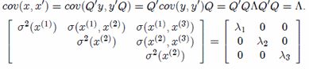</P>
<P STYLE="page-break-inside: avoid"><FONT FACE="Cambria, serif">This
type of inverse matrix operation, </FONT><FONT FACE="Cambria, serif"><I><B>Q</B></I></FONT><FONT FACE="Cambria, serif"><B>Λ</B></FONT><FONT FACE="Cambria, serif"><I><B>Q’</B></I></FONT><FONT FACE="Cambria, serif">,
is actually called “</FONT><FONT FACE="Cambria, serif"><B>Eigenvalue
Decomposition</B></FONT><FONT FACE="Cambria, serif">” and is
nothing more than the transposition of a matrices forming, </FONT><FONT FACE="Cambria, serif"><B>Λ</B></FONT><FONT FACE="Cambria, serif">,
to produce the covariance or lambda, </FONT><FONT FACE="Cambria, serif"><B>λ</B></FONT><FONT FACE="Cambria, serif">,
along the diagonal axis.  These types of operations are used
frequently in finance and science so we can see the parallel between
simple algebra and matrix algebra.  Just like in graphics rendering,
the GPU is all about matrices so there is a natural intersection here
though not apparent at first glance.  So, in hybrid computing, the
computer is simply doing some of the calculations on the CPU (with
larger cores) and others on the GPU (with smaller cores) – by
incorporating pointers and arrays, code can typically be “vectorized”
in terms of executing memory and math operations in “blocks”
(versus single elements) - here is a nice picture:</FONT></P>
<P STYLE="page-break-inside: avoid">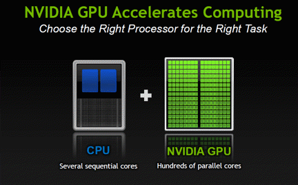</P>
<P STYLE="page-break-inside: avoid"><FONT COLOR="#1f497d"><FONT FACE="Cambria, serif"><FONT SIZE=2><I><B>Figure
1</B></I></FONT></FONT></FONT><FONT COLOR="#1f497d"><FONT FACE="Cambria, serif"><FONT SIZE=2><I>
– </I></FONT></FONT></FONT><FONT COLOR="#1f497d"><FONT FACE="Cambria, serif"><FONT SIZE=2><I><B>Hybrid
Computing in a Picture</B></I></FONT></FONT></FONT><FONT COLOR="#1f497d"><FONT FACE="Cambria, serif"><FONT SIZE=2><I>
Nvidia, “uchicago_intro_apps_libs.pdf,” 2012: 21.</I></FONT></FONT></FONT></P>
<P STYLE="page-break-inside: avoid"><FONT FACE="Cambria, serif">Here
is a better layout of one of the most powerful GPU setups in the
world at Oak Ridge National Laboratory, the </FONT><FONT FACE="Cambria, serif"><I>Titan</I></FONT><FONT FACE="Cambria, serif">:</FONT></P>
<P STYLE="page-break-inside: avoid"></P>
<P STYLE="page-break-inside: avoid"><BR>
</P>
<P STYLE="page-break-inside: avoid">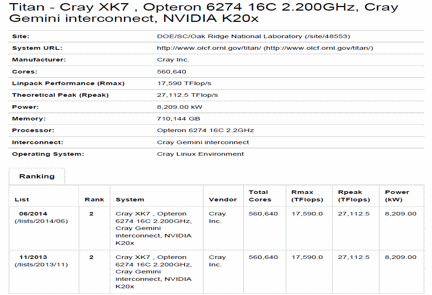</P>
<P STYLE="page-break-inside: avoid"><FONT COLOR="#1f497d"><FONT FACE="Cambria, serif"><FONT SIZE=2><I><B>Figure
2</B></I></FONT></FONT></FONT><FONT COLOR="#1f497d"><FONT FACE="Cambria, serif"><FONT SIZE=2><I>
– </I></FONT></FONT></FONT><FONT COLOR="#1f497d"><FONT FACE="Cambria, serif"><FONT SIZE=2><I><B>Robust
GPU Server Cluster</B></I></FONT></FONT></FONT><FONT COLOR="#1f497d"><FONT FACE="Cambria, serif"><FONT SIZE=2><I>
Oak Ridge, “SC10_Booth_Talk_Bland.pdf,” 2010: 5.</I></FONT></FONT></FONT></P>
<H2 CLASS="western"><A NAME="__RefHeading__4230_102278096"></A><A NAME="_Toc402117946"></A>
Distributed System Summary of GPU Server:</H2>
<TABLE WIDTH=426 BORDER=1 BORDERCOLOR="#00000a" CELLPADDING=5 CELLSPACING=0 RULES=GROUPS>
	<COLGROUP>
		<COL WIDTH=79>
	</COLGROUP>
	<COLGROUP>
		<COL WIDTH=38>
		<COL WIDTH=39>
		<COL WIDTH=39>
		<COL WIDTH=38>
		<COL WIDTH=38>
		<COL WIDTH=38>
		<COL WIDTH=36>
	</COLGROUP>
	<TR VALIGN=BOTTOM>
		<TD WIDTH=79 HEIGHT=4 BGCOLOR="#ffffff">
			<P><FONT COLOR="#002060"><FONT FACE="Calibri, serif"><FONT SIZE=2 STYLE="font-size: 11pt"><B>Scale:</B></FONT></FONT></FONT></P>
		</TD>
		<TD WIDTH=38 BGCOLOR="#ffffff">
			<P><FONT COLOR="#002060">&nbsp;</FONT></P>
		</TD>
		<TD WIDTH=39 BGCOLOR="#ffffff">
			<P><FONT COLOR="#002060"><FONT FACE="Calibri, serif"><FONT SIZE=2 STYLE="font-size: 11pt"><B>Large</B></FONT></FONT></FONT></P>
		</TD>
		<TD WIDTH=39 BGCOLOR="#ffffff">
			<P><FONT COLOR="#002060">&nbsp;</FONT></P>
		</TD>
		<TD WIDTH=38 BGCOLOR="#ffffff">
			<P><FONT COLOR="#002060">&nbsp;</FONT></P>
		</TD>
		<TD WIDTH=38 BGCOLOR="#ffffff">
			<P><FONT COLOR="#002060">&nbsp;</FONT></P>
		</TD>
		<TD WIDTH=38 BGCOLOR="#ffffff">
			<P><FONT COLOR="#002060">&nbsp;</FONT></P>
		</TD>
		<TD WIDTH=36 BGCOLOR="#ffffff">
			<P><FONT COLOR="#000000">&nbsp;</FONT></P>
		</TD>
	</TR>
	<TR VALIGN=BOTTOM>
		<TD WIDTH=79 HEIGHT=5 BGCOLOR="#ffffff">
			<P><FONT COLOR="#002060">&nbsp;</FONT></P>
		</TD>
		<TD WIDTH=38 BGCOLOR="#ffffff">
			<P><FONT COLOR="#002060">&nbsp;</FONT></P>
		</TD>
		<TD WIDTH=39 BGCOLOR="#ffffff">
			<P><FONT COLOR="#002060">&nbsp;</FONT></P>
		</TD>
		<TD WIDTH=39 BGCOLOR="#ffffff">
			<P><FONT COLOR="#002060">&nbsp;</FONT></P>
		</TD>
		<TD WIDTH=38 BGCOLOR="#ffffff">
			<P><FONT COLOR="#002060">&nbsp;</FONT></P>
		</TD>
		<TD WIDTH=38 BGCOLOR="#ffffff">
			<P><FONT COLOR="#002060">&nbsp;</FONT></P>
		</TD>
		<TD WIDTH=38 BGCOLOR="#ffffff">
			<P><FONT COLOR="#002060">&nbsp;</FONT></P>
		</TD>
		<TD WIDTH=36 BGCOLOR="#ffffff">
			<P><FONT COLOR="#000000">&nbsp;</FONT></P>
		</TD>
	</TR>
	<TR VALIGN=BOTTOM>
		<TD WIDTH=79 HEIGHT=5 BGCOLOR="#ffffff">
			<P><FONT COLOR="#002060"><FONT FACE="Calibri, serif"><FONT SIZE=2 STYLE="font-size: 11pt"><B>Heterogeneity:</B></FONT></FONT></FONT></P>
		</TD>
		<TD WIDTH=38 BGCOLOR="#ffffff">
			<P><FONT COLOR="#002060">&nbsp;</FONT></P>
		</TD>
		<TD COLSPAN=2 WIDTH=87 BGCOLOR="#ffffff">
			<P><FONT COLOR="#002060"><FONT FACE="Calibri, serif"><FONT SIZE=2 STYLE="font-size: 11pt"><B>Radically
			Diverse</B></FONT></FONT></FONT></P>
		</TD>
		<TD WIDTH=38 BGCOLOR="#ffffff">
			<P><FONT COLOR="#002060">&nbsp;</FONT></P>
		</TD>
		<TD WIDTH=38 BGCOLOR="#ffffff">
			<P><FONT COLOR="#002060">&nbsp;</FONT></P>
		</TD>
		<TD WIDTH=38 BGCOLOR="#ffffff">
			<P><FONT COLOR="#002060">&nbsp;</FONT></P>
		</TD>
		<TD WIDTH=36 BGCOLOR="#ffffff">
			<P><FONT COLOR="#000000">&nbsp;</FONT></P>
		</TD>
	</TR>
	<TR VALIGN=BOTTOM>
		<TD WIDTH=79 HEIGHT=5 BGCOLOR="#ffffff">
			<P><FONT COLOR="#002060">&nbsp;</FONT></P>
		</TD>
		<TD WIDTH=38 BGCOLOR="#ffffff">
			<P><FONT COLOR="#002060">&nbsp;</FONT></P>
		</TD>
		<TD WIDTH=39 BGCOLOR="#ffffff">
			<P><FONT COLOR="#002060">&nbsp;</FONT></P>
		</TD>
		<TD WIDTH=39 BGCOLOR="#ffffff">
			<P><FONT COLOR="#002060">&nbsp;</FONT></P>
		</TD>
		<TD WIDTH=38 BGCOLOR="#ffffff">
			<P><FONT COLOR="#002060">&nbsp;</FONT></P>
		</TD>
		<TD WIDTH=38 BGCOLOR="#ffffff">
			<P><FONT COLOR="#002060">&nbsp;</FONT></P>
		</TD>
		<TD WIDTH=38 BGCOLOR="#ffffff">
			<P><FONT COLOR="#002060">&nbsp;</FONT></P>
		</TD>
		<TD WIDTH=36 BGCOLOR="#ffffff">
			<P><FONT COLOR="#000000">&nbsp;</FONT></P>
		</TD>
	</TR>
	<TR VALIGN=BOTTOM>
		<TD WIDTH=79 HEIGHT=5 BGCOLOR="#ffffff">
			<P><FONT COLOR="#002060"><FONT FACE="Calibri, serif"><FONT SIZE=2 STYLE="font-size: 11pt"><B>Openness:</B></FONT></FONT></FONT></P>
		</TD>
		<TD WIDTH=38 BGCOLOR="#ffffff">
			<P><FONT COLOR="#002060">&nbsp;</FONT></P>
		</TD>
		<TD COLSPAN=5 WIDTH=231 BGCOLOR="#ffffff">
			<P><FONT COLOR="#002060"><FONT FACE="Calibri, serif"><FONT SIZE=2 STYLE="font-size: 11pt"><B>Mixed/Challenging
			- SSH/Tunneling (secure)</B></FONT></FONT></FONT></P>
		</TD>
		<TD WIDTH=36 BGCOLOR="#ffffff">
			<P><FONT COLOR="#000000">&nbsp;</FONT></P>
		</TD>
	</TR>
	<TR VALIGN=BOTTOM>
		<TD WIDTH=79 HEIGHT=5 BGCOLOR="#ffffff">
			<P><FONT COLOR="#002060">&nbsp;</FONT></P>
		</TD>
		<TD WIDTH=38 BGCOLOR="#ffffff">
			<P><FONT COLOR="#002060">&nbsp;</FONT></P>
		</TD>
		<TD WIDTH=39 BGCOLOR="#ffffff">
			<P><FONT COLOR="#002060">&nbsp;</FONT></P>
		</TD>
		<TD WIDTH=39 BGCOLOR="#ffffff">
			<P><FONT COLOR="#002060">&nbsp;</FONT></P>
		</TD>
		<TD WIDTH=38 BGCOLOR="#ffffff">
			<P><FONT COLOR="#002060">&nbsp;</FONT></P>
		</TD>
		<TD WIDTH=38 BGCOLOR="#ffffff">
			<P><FONT COLOR="#002060">&nbsp;</FONT></P>
		</TD>
		<TD WIDTH=38 BGCOLOR="#ffffff">
			<P><FONT COLOR="#002060">&nbsp;</FONT></P>
		</TD>
		<TD WIDTH=36 BGCOLOR="#ffffff">
			<P><FONT COLOR="#000000">&nbsp;</FONT></P>
		</TD>
	</TR>
	<TR VALIGN=BOTTOM>
		<TD WIDTH=79 HEIGHT=5 BGCOLOR="#ffffff">
			<P><FONT COLOR="#002060"><FONT FACE="Calibri, serif"><FONT SIZE=2 STYLE="font-size: 11pt"><B>QOS:</B></FONT></FONT></FONT></P>
		</TD>
		<TD WIDTH=38 BGCOLOR="#ffffff">
			<P><FONT COLOR="#002060">&nbsp;</FONT></P>
		</TD>
		<TD COLSPAN=2 WIDTH=87 BGCOLOR="#ffffff">
			<P><FONT COLOR="#002060"><FONT FACE="Calibri, serif"><FONT SIZE=2 STYLE="font-size: 11pt"><B>Mixed/Challenging</B></FONT></FONT></FONT></P>
		</TD>
		<TD WIDTH=38 BGCOLOR="#ffffff">
			<P><FONT COLOR="#002060">&nbsp;</FONT></P>
		</TD>
		<TD WIDTH=38 BGCOLOR="#ffffff">
			<P><FONT COLOR="#002060">&nbsp;</FONT></P>
		</TD>
		<TD WIDTH=38 BGCOLOR="#ffffff">
			<P><FONT COLOR="#002060">&nbsp;</FONT></P>
		</TD>
		<TD WIDTH=36 BGCOLOR="#ffffff">
			<P><FONT COLOR="#000000">&nbsp;</FONT></P>
		</TD>
	</TR>
	<TR VALIGN=BOTTOM>
		<TD WIDTH=79 HEIGHT=5 BGCOLOR="#ffffff">
			<P><FONT COLOR="#002060">&nbsp;</FONT></P>
		</TD>
		<TD WIDTH=38 BGCOLOR="#ffffff">
			<P><FONT COLOR="#002060">&nbsp;</FONT></P>
		</TD>
		<TD WIDTH=39 BGCOLOR="#ffffff">
			<P><FONT COLOR="#002060">&nbsp;</FONT></P>
		</TD>
		<TD WIDTH=39 BGCOLOR="#ffffff">
			<P><FONT COLOR="#002060">&nbsp;</FONT></P>
		</TD>
		<TD WIDTH=38 BGCOLOR="#ffffff">
			<P><FONT COLOR="#002060">&nbsp;</FONT></P>
		</TD>
		<TD WIDTH=38 BGCOLOR="#ffffff">
			<P><FONT COLOR="#002060">&nbsp;</FONT></P>
		</TD>
		<TD WIDTH=38 BGCOLOR="#ffffff">
			<P><FONT COLOR="#002060">&nbsp;</FONT></P>
		</TD>
		<TD WIDTH=36 BGCOLOR="#ffffff">
			<P><FONT COLOR="#000000">&nbsp;</FONT></P>
		</TD>
	</TR>
	<TR VALIGN=BOTTOM>
		<TD WIDTH=79 HEIGHT=5 BGCOLOR="#ffffff">
			<P><FONT COLOR="#002060"><FONT FACE="Calibri, serif"><FONT SIZE=2 STYLE="font-size: 11pt"><B>Storage:</B></FONT></FONT></FONT></P>
		</TD>
		<TD WIDTH=38 BGCOLOR="#ffffff">
			<P><FONT COLOR="#002060">&nbsp;</FONT></P>
		</TD>
		<TD COLSPAN=6 WIDTH=277 BGCOLOR="#ffffff">
			<P><FONT COLOR="#002060"><FONT FACE="Calibri, serif"><FONT SIZE=2 STYLE="font-size: 11pt"><B>Distributed
			File System; DSM (Shared Memory) Async/Sync</B></FONT></FONT></FONT></P>
		</TD>
	</TR>
	<TR VALIGN=BOTTOM>
		<TD WIDTH=79 HEIGHT=5 BGCOLOR="#ffffff">
			<P><FONT COLOR="#002060">&nbsp;</FONT></P>
		</TD>
		<TD WIDTH=38 BGCOLOR="#ffffff">
			<P><FONT COLOR="#002060">&nbsp;</FONT></P>
		</TD>
		<TD WIDTH=39 BGCOLOR="#ffffff">
			<P><FONT COLOR="#002060">&nbsp;</FONT></P>
		</TD>
		<TD WIDTH=39 BGCOLOR="#ffffff">
			<P><FONT COLOR="#002060">&nbsp;</FONT></P>
		</TD>
		<TD WIDTH=38 BGCOLOR="#ffffff">
			<P><FONT COLOR="#002060">&nbsp;</FONT></P>
		</TD>
		<TD WIDTH=38 BGCOLOR="#ffffff">
			<P><FONT COLOR="#002060">&nbsp;</FONT></P>
		</TD>
		<TD WIDTH=38 BGCOLOR="#ffffff">
			<P><FONT COLOR="#002060">&nbsp;</FONT></P>
		</TD>
		<TD WIDTH=36 BGCOLOR="#ffffff">
			<P><FONT COLOR="#000000">&nbsp;</FONT></P>
		</TD>
	</TR>
	<TR VALIGN=BOTTOM>
		<TD WIDTH=79 HEIGHT=5 BGCOLOR="#ffffff">
			<P><FONT COLOR="#002060"><FONT FACE="Calibri, serif"><FONT SIZE=2 STYLE="font-size: 11pt"><B>Communication:</B></FONT></FONT></FONT></P>
		</TD>
		<TD WIDTH=38 BGCOLOR="#ffffff">
			<P><FONT COLOR="#002060">&nbsp;</FONT></P>
		</TD>
		<TD COLSPAN=3 WIDTH=135 BGCOLOR="#ffffff">
			<P><FONT COLOR="#002060"><FONT FACE="Calibri, serif"><FONT SIZE=2 STYLE="font-size: 11pt"><B>IPC
			- Message Passing</B></FONT></FONT></FONT></P>
		</TD>
		<TD WIDTH=38 BGCOLOR="#ffffff">
			<P><FONT COLOR="#002060">&nbsp;</FONT></P>
		</TD>
		<TD WIDTH=38 BGCOLOR="#ffffff">
			<P><FONT COLOR="#002060">&nbsp;</FONT></P>
		</TD>
		<TD WIDTH=36 BGCOLOR="#ffffff">
			<P><FONT COLOR="#000000">&nbsp;</FONT></P>
		</TD>
	</TR>
	<TR VALIGN=BOTTOM>
		<TD WIDTH=79 HEIGHT=5 BGCOLOR="#ffffff">
			<P><FONT COLOR="#002060">&nbsp;</FONT></P>
		</TD>
		<TD WIDTH=38 BGCOLOR="#ffffff">
			<P><FONT COLOR="#002060">&nbsp;</FONT></P>
		</TD>
		<TD WIDTH=39 BGCOLOR="#ffffff">
			<P><FONT COLOR="#002060">&nbsp;</FONT></P>
		</TD>
		<TD WIDTH=39 BGCOLOR="#ffffff">
			<P><FONT COLOR="#002060">&nbsp;</FONT></P>
		</TD>
		<TD WIDTH=38 BGCOLOR="#ffffff">
			<P><FONT COLOR="#002060">&nbsp;</FONT></P>
		</TD>
		<TD WIDTH=38 BGCOLOR="#ffffff">
			<P><FONT COLOR="#002060">&nbsp;</FONT></P>
		</TD>
		<TD WIDTH=38 BGCOLOR="#ffffff">
			<P><FONT COLOR="#002060">&nbsp;</FONT></P>
		</TD>
		<TD WIDTH=36 BGCOLOR="#ffffff">
			<P><FONT COLOR="#000000">&nbsp;</FONT></P>
		</TD>
	</TR>
	<TR VALIGN=BOTTOM>
		<TD WIDTH=79 HEIGHT=5 BGCOLOR="#ffffff">
			<P><FONT COLOR="#002060"><FONT FACE="Calibri, serif"><FONT SIZE=2 STYLE="font-size: 11pt"><B>Network:</B></FONT></FONT></FONT></P>
		</TD>
		<TD WIDTH=38 BGCOLOR="#ffffff">
			<P><FONT COLOR="#002060">&nbsp;</FONT></P>
		</TD>
		<TD COLSPAN=5 WIDTH=231 BGCOLOR="#ffffff">
			<P><FONT COLOR="#002060"><FONT FACE="Calibri, serif"><FONT SIZE=2 STYLE="font-size: 11pt"><B>Physical
			Servers; WAN - SSH/Tunneling Access</B></FONT></FONT></FONT></P>
		</TD>
		<TD WIDTH=36 BGCOLOR="#ffffff">
			<P><FONT COLOR="#000000">&nbsp;</FONT></P>
		</TD>
	</TR>
</TABLE>
<P STYLE="page-break-inside: avoid"><BR>
</P>
<H1 CLASS="western" STYLE="page-break-inside: avoid"><A NAME="__RefHeading__4232_102278096"></A><A NAME="_Toc402117947"></A>
Why do we need GPU Computing?  Hitting the wall…</H1>
<P STYLE="page-break-inside: avoid"><FONT FACE="Cambria, serif">	As
modern scientific research becomes more complex incorporating ever
larger data sets, the classic CPU-centric paradigm runs out of
computing resources.  Before GPU computing, programs using intensive
computation might take several days to finish running and calculating
the results.  If we were dependent on those results before specifying
the next iteration of a model for testing purposes, we literally had
to wait until proceeding further with research.  Think about the
wasted time of such a process.  With hybrid computing, we can now get
results back in a matter of hours or even minutes – some firms are
even calculating and executing complex operations in
milliseconds/microseconds.  These firms were literally hitting a wall
in terms of speed and so needed other alternatives.  GPU computing is
massively parallel and scalable and can speed up applications by 2X
to 100X.  If you have enough resources and hardware, you can keep
reducing computation time by adding more GPU’s.  This does cost a
lot of money, however, and some firms spend tens of millions of
dollars on hardware including both CPU and GPU clusters (e.g.,
collocated servers).  Remember that a GPU is full of thousands of
smaller cores whereas the CPU has fewer, but larger cores.  Think of
it as many little bicycles versus fewer large trucks.  However, for
certain tasks, the CPU simply cannot keep up with the GPU. 
Typically, relative performance between the CPU and GPU is measured
in the amount of single-and-double precision operations per second
(FLOPS).  The next chart shows how fast the divergence in speed is
progressing towards a 100X advantage by 2021:</FONT> 
</P>
<P STYLE="page-break-inside: avoid"><BR>
</P>
<P STYLE="page-break-inside: avoid">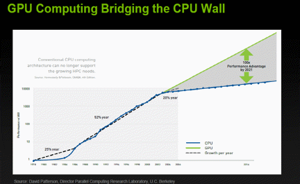</P>
<P STYLE="page-break-inside: avoid"><FONT COLOR="#1f497d"><FONT FACE="Cambria, serif"><FONT SIZE=2><I><B>Figure
3</B></I></FONT></FONT></FONT><FONT COLOR="#1f497d"><FONT FACE="Cambria, serif"><FONT SIZE=2><I>
– </I></FONT></FONT></FONT><FONT COLOR="#1f497d"><FONT FACE="Cambria, serif"><FONT SIZE=2><I><B>GPU
versus CPU</B></I></FONT></FONT></FONT><FONT COLOR="#1f497d"><FONT FACE="Cambria, serif"><FONT SIZE=2><I>
Nvidia, 2012: 6.</I></FONT></FONT></FONT></P>
<P STYLE="page-break-inside: avoid">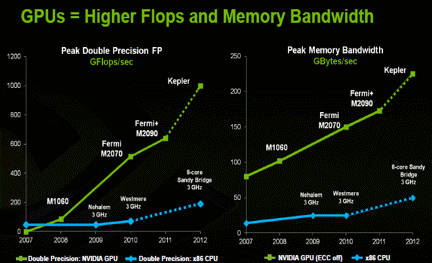</P>
<P STYLE="page-break-inside: avoid"><FONT COLOR="#1f497d"><FONT FACE="Cambria, serif"><FONT SIZE=2><I><B>Figure
4</B></I></FONT></FONT></FONT><FONT COLOR="#1f497d"><FONT FACE="Cambria, serif"><FONT SIZE=2><I>
– </I></FONT></FONT></FONT><FONT COLOR="#1f497d"><FONT FACE="Cambria, serif"><FONT SIZE=2><I><B>Organizations
Using GPU for Speed</B></I></FONT></FONT></FONT><FONT COLOR="#1f497d"><FONT FACE="Cambria, serif"><FONT SIZE=2><I>
Nvidia, 2012: 7.</I></FONT></FONT></FONT></P>
<P STYLE="page-break-inside: avoid">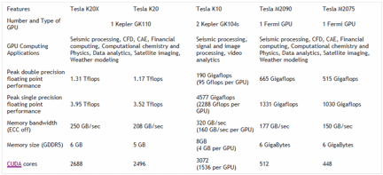</P>
<P><FONT COLOR="#1f497d"><FONT FACE="Cambria, serif"><FONT SIZE=2><I><B>Figure
5</B></I></FONT></FONT></FONT><FONT COLOR="#1f497d"><FONT FACE="Cambria, serif"><FONT SIZE=2><I>
– </I></FONT></FONT></FONT><FONT COLOR="#1f497d"><FONT FACE="Cambria, serif"><FONT SIZE=2><I><B>Single
versus Double Precision Yields More Gains in Speed</B></I></FONT></FONT></FONT><FONT COLOR="#1f497d"><FONT FACE="Cambria, serif"><FONT SIZE=2><I>
Nvidia, 2012: 8.</I></FONT></FONT></FONT></P>
<H1 CLASS="western" STYLE="page-break-inside: avoid"><A NAME="__RefHeading__4234_102278096"></A><A NAME="_Toc402117948"></A><A NAME="_Toc402117737"></A><A NAME="_Toc402113513"></A><A NAME="_Toc402112525"></A>
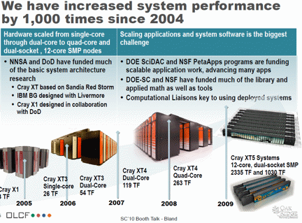</H1>
<P><FONT COLOR="#1f497d"><FONT FACE="Cambria, serif"><FONT SIZE=2><I><B>Figure
6</B></I></FONT></FONT></FONT><FONT COLOR="#1f497d"><FONT FACE="Cambria, serif"><FONT SIZE=2><I>
– </I></FONT></FONT></FONT><FONT COLOR="#1f497d"><FONT FACE="Cambria, serif"><FONT SIZE=2><I><B>Evolution
of HPC Networks from CPU to GPU</B></I></FONT></FONT></FONT><FONT COLOR="#1f497d"><FONT FACE="Cambria, serif"><FONT SIZE=2><I>
Oak Ridge, “SC10_Booth_Talk_Bland.pdf,” 2010: 6.</I></FONT></FONT></FONT></P>
<P><BR>
</P>
<H1 CLASS="western" STYLE="page-break-inside: avoid"><A NAME="__RefHeading__4236_102278096"></A><A NAME="_Toc402117949"></A>
Testing Approach, Setup &amp; Hypothesis</H1>
<P STYLE="page-break-inside: avoid"><FONT FACE="Cambria, serif">	The
goal is prove out the speed gains from GPU computing by designing and
running a complex program across several platforms.  This program
will involve large data sets and complex math operations (see
financial modelling section below for the exact test design).  Since
this study involves distributed systems, the program MUST compile and
run on a non-local GPU server cluster (and not simply at home on a
single GPU setup) – getting code to run on foreign, unfamiliar
hardware is a difficult challenge.  We will then employ heuristics
like timers to measure the speed across various platforms.  To recap,
here is a brief overview of the test:</FONT></P>
<OL>
	<LI><P><FONT COLOR="#002060"><FONT FACE="Cambria, serif"><FONT SIZE=2><I>Design
	a complex program (multi-streams, threads and GPUs) in C/C++ and
	make it run on CPU and GPU server (LUC TESLA)</I></FONT></FONT></FONT></P>
	<LI><P><FONT COLOR="#002060"><FONT FACE="Cambria, serif"><FONT SIZE=2><I>Then
	test variations of the this same program in other
	languages/platforms such as JCUDA, OpenACC/MP &amp; MATLAB [TODO]</I></FONT></FONT></FONT></P>
	<LI><P><FONT COLOR="#002060"><FONT FACE="Cambria, serif"><FONT SIZE=2><I>Keep
	track of ALL CPU-only and GPU results to determine conclusion [TODO]</I></FONT></FONT></FONT></P>
</OL>
<H2 CLASS="western"><A NAME="__RefHeading__4238_102278096"></A><A NAME="_Toc402117950"></A>
Getting Setup for GPU Computing – CUDA C &amp; Independent Tasks</H2>
<P><BR>
</P>
<P STYLE="page-break-inside: avoid"><FONT FACE="Cambria, serif">	Because
the early pioneers of GPU computing worked in C/C++, this means that
we need to use either C/C++ for the most robust programming in order
to take full advantage of the GPU’s capabilities.  C++ is an
object-oriented extension of the C language – they are similar
though C is probably used more often in GPU programming.  There are
several typed of libraries (or DLL’s) that are full of GPU
functionality, but the oldest and most powerful one is made by Nvidia
and is referred to as “CUDA”.  Because Nvidia maintains this
library, they also require that an Nvidia video card be used to take
advantage of CUDA.  It does not have to be this way, but they made it
this way for business reasons so that they can sell more product. 
There are some other alternatives that will be explored later on such
as “Open ACC” and various “wrappers” like JCUDA, but let’s
start with CUDA since it has the most developed functionality.  So,
we will need the following to explore CUDA C GPU programming:</FONT></P>
<UL>
	<LI><P STYLE="page-break-inside: avoid"><FONT COLOR="#1f497d"><FONT FACE="Cambria, serif"><FONT SIZE=2>A
	laptop or desktop with an Nvidia video card or GPU – powerful
	desktops are typically easier to work with here</FONT></FONT></FONT></P>
	<LI><P STYLE="page-break-inside: avoid"><FONT COLOR="#1f497d"><FONT FACE="Cambria, serif"><FONT SIZE=2>Install
	Nvidia SDK Toolkit and Drivers – available here:
	</FONT></FONT></FONT><A HREF="https://developer.nvidia.com/cuda-downloads"><FONT FACE="Cambria, serif"><FONT SIZE=2>https://developer.nvidia.com/cuda-downloads</FONT></FONT></A><FONT COLOR="#1f497d"><FONT FACE="Cambria, serif"><FONT SIZE=2>
	– choose either a Windows (</FONT></FONT></FONT><FONT COLOR="#1f497d"><FONT FACE="Cambria, serif"><FONT SIZE=2><B>Visual
	Studio</B></FONT></FONT></FONT><FONT COLOR="#1f497d"><FONT FACE="Cambria, serif"><FONT SIZE=2>
	IDE) or Linux (</FONT></FONT></FONT><FONT COLOR="#1f497d"><FONT FACE="Cambria, serif"><FONT SIZE=2><B>Eclipse</B></FONT></FONT></FONT><FONT COLOR="#1f497d"><FONT FACE="Cambria, serif"><FONT SIZE=2>
	IDE) setup</FONT></FONT></FONT></P>
	<LI><P STYLE="page-break-inside: avoid"><FONT COLOR="#1f497d"><FONT FACE="Cambria, serif"><FONT SIZE=2>To
	see the “</FONT></FONT></FONT><FONT COLOR="#1f497d"><FONT FACE="Cambria, serif"><FONT SIZE=2><B>trade-off</B></FONT></FONT></FONT><FONT COLOR="#1f497d"><FONT FACE="Cambria, serif"><FONT SIZE=2>”
	between regular (CPU) computing and hybrid GPU computing, we’ll
	need to code up several examples in C/C++.  This means we’ll have
	to “port” over programs into C/C++ from other languages with
	which we are more familiar.  For example, programs in statistics
	packages like MATLAB, R and MATHEMATICA will have to be redone in C
	which is a lot of work – we will have to make a CPU-only version
	as well as a GPU hybrid version</FONT></FONT></FONT></P>
	<UL>
		<LI><P STYLE="page-break-inside: avoid"><FONT COLOR="#1f497d"><FONT FACE="Cambria, serif"><FONT SIZE=2>Specifically,
		we will be targeting “</FONT></FONT></FONT><FONT COLOR="#1f497d"><FONT FACE="Cambria, serif"><FONT SIZE=2><B>FOR
		NEXT</B></FONT></FONT></FONT><FONT COLOR="#1f497d"><FONT FACE="Cambria, serif"><FONT SIZE=2>”
		loops inside code to make operations run in </FONT></FONT></FONT><FONT COLOR="#1f497d"><FONT FACE="Cambria, serif"><FONT SIZE=2><B>parallel</B></FONT></FONT></FONT><FONT COLOR="#1f497d"><FONT FACE="Cambria, serif"><FONT SIZE=2>
		on the GPU.  This means operations must be </FONT></FONT></FONT><FONT COLOR="#1f497d"><FONT FACE="Cambria, serif"><FONT SIZE=2><B>independent</B></FONT></FONT></FONT><FONT COLOR="#1f497d"><FONT FACE="Cambria, serif"><FONT SIZE=2>
		– no </FONT></FONT></FONT><FONT COLOR="#1f497d"><FONT FACE="Cambria, serif"><FONT SIZE=2><B>recursive</B></FONT></FONT></FONT><FONT COLOR="#1f497d"><FONT FACE="Cambria, serif"><FONT SIZE=2>
		functions or array indexing of [</FONT></FONT></FONT><FONT COLOR="#1f497d"><FONT FACE="Cambria, serif"><FONT SIZE=2><B>i-1</B></FONT></FONT></FONT><FONT COLOR="#1f497d"><FONT FACE="Cambria, serif"><FONT SIZE=2>].
		 If we need to “look back”, then we must use other functions to
		offset arrays by [i-1] in order to “trick” the computer in
		thinking that it is looking at today’s value or element [i]. 
		It’s also good to use </FONT></FONT></FONT><FONT COLOR="#1f497d"><FONT FACE="Cambria, serif"><FONT SIZE=2><B>single
		</B></FONT></FONT></FONT><FONT COLOR="#1f497d"><FONT FACE="Cambria, serif"><FONT SIZE=2>versus
		</FONT></FONT></FONT><FONT COLOR="#1f497d"><FONT FACE="Cambria, serif"><FONT SIZE=2><B>double</B></FONT></FONT></FONT><FONT COLOR="#1f497d"><FONT FACE="Cambria, serif"><FONT SIZE=2>
		precision whenever possible since the CPU is optimized for double
		while the GPU is optimized for </FONT></FONT></FONT><FONT COLOR="#1f497d"><FONT FACE="Cambria, serif"><FONT SIZE=2><B>single</B></FONT></FONT></FONT><FONT COLOR="#1f497d"><FONT FACE="Cambria, serif"><FONT SIZE=2>
		(or float)</FONT></FONT></FONT></P>
	</UL>
</UL>
<H2 CLASS="western"><A NAME="__RefHeading__4240_102278096"></A><A NAME="_Toc402117951"></A>
A Quick Primer in C:  A Boxing Metaphor – Mike Tyson vs. Sugar Ray</H2>
<P STYLE="page-break-inside: avoid"><FONT FACE="Cambria, serif">	Some
of the younger generations can get anxious when they hear “C/C++”.
 This might be due to the perception that C/C++ can be harder to
learn due to “pointers”.  Pointers and more specifically,
pointers-to-arrays, are very powerful tools that allow for rapid
processing via vectorization.  Let’s focus on C here since this is
what we’ll predominantly use for this study.  With its pointers, C
is a minimalist and “muscle-bound” programming language.  In
boxing terms, C is a lot like the former boxer, Mike Tyson.  Tyson
did not have a “pretty” boxing style, but was a short, powerful
man that wasted no energy in his punching technique – he had a
brutally direct technique that was centered right at his opponents. 
The C language is a lot like this and is procedural rather than
“OOP”.  There are not a lot of extras or “frills” in C or
even pre-made libraries.  When you use C, you have to manage the
dynamic memory of pointers and code up most of your own functions
even for simple calculations such as variance and moving averages. 
This can seem like a pain in the neck, but this process ensures that
you really understand what you are trying to do as well as the tools
you are using to accomplish the task at hand.  Many users use
pre-built functions like “</FONT><FONT FACE="Cambria, serif"><B>variance</B></FONT><FONT FACE="Cambria, serif">”
in statistics programs without even knowing they are using “</FONT><FONT FACE="Cambria, serif"><B>sample
variance</B></FONT><FONT FACE="Cambria, serif">” (which has “N-1”
in the denominator) – when you’re forced to code this up
yourself, you’ll quickly find out something is wrong if you don’t
make this adjustment in the denominator.  So, in the right hands, C
is a lethal weapon.  Let’s also remember that many engineering
programs in aerospace still run on C which is over 50 years old at
this point in time.  That’s right – many missile and radar
systems still run on C and it is still widely used in the defense
industry.  In fact, Boeing has its own version/extension of C.  </FONT>
</P>
<P STYLE="page-break-inside: avoid"><FONT FACE="Cambria, serif">On
the other hand, .NET and scripting languages are probably more
popular with younger folks.  For example, let’s consider C#/.NET in
which various operations like memory management are taken care of
“behind the scenes” via “garbage collection”.  There are also
many libraries that can be easily referenced in C#.  C# is an
intermediate-level language with “JIT” compilation versus C.  In
C, very little is done ‘behind the scenes’ for us, so we must
specify what we want and also pass by reference.  But because of this
as well as it being a “native” language, C can run very fast. 
So, C#/.NET is more like the graceful former boxer, Sugar Ray
Leonard, who used to bob-and-weave and dancing around his opponents.
OOP languages like C# also allow us to be very organized since we can
create our own classes and group functions by classes.  In C, we
cannot create our own classes, but are bound by “built-in”
classes like structures, instead.  So, there is certainly a kind of
beauty or creativity which we cannot really capture in C.  All these
classes take up space and resources at some point, however, which is
another reason why C runs quickly due to limited overhead.  As with
things, there are trade-offs between programming languages, but here
C is really useful since we are concerned with </FONT><FONT FACE="Cambria, serif"><B>maximizing</B></FONT><FONT FACE="Cambria, serif">
speed in GPU computing via vectorization.</FONT></P>
<P STYLE="page-break-inside: avoid"><FONT FACE="Cambria, serif">Let’s
work through a simple example using pointers so we can see the true
power of C.  When doing computation, we typically have variables of
varying size which are like columns in an Excel spreadsheet. 
Thinking back to matrices, think of these variables as “vectors”
– a matrix is nothing more than a bunch of columns or vectors
(e.g., a “grid” in Excel).  Here is typically what happens in C
computation:</FONT></P>
<UL>
	<LI><P STYLE="page-break-inside: avoid"><FONT COLOR="#1f497d"><FONT FACE="Cambria, serif"><FONT SIZE=2>Declare
	a </FONT></FONT></FONT><FONT COLOR="#1f497d"><FONT FACE="Cambria, serif"><FONT SIZE=2><B>pointer</B></FONT></FONT></FONT><FONT COLOR="#1f497d"><FONT FACE="Cambria, serif"><FONT SIZE=2>
	to an array for an unknown variable (of varying size) or ‘</FONT></FONT></FONT><FONT COLOR="#1f497d"><FONT FACE="Cambria, serif"><FONT SIZE=2><B>vector</B></FONT></FONT></FONT><FONT COLOR="#1f497d"><FONT FACE="Cambria, serif"><FONT SIZE=2>’
	in the </FONT></FONT></FONT><FONT COLOR="#1f497d"><FONT FACE="Cambria, serif"><FONT SIZE=2><B>main</B></FONT></FONT></FONT><FONT COLOR="#1f497d"><FONT FACE="Cambria, serif"><FONT SIZE=2>
	program – it is proper syntax to use the “indirection”
	operator or asterisk “*” here like “</FONT></FONT></FONT><FONT COLOR="#1f497d"><FONT FACE="Cambria, serif"><FONT SIZE=2><B>double
	*var</B></FONT></FONT></FONT><FONT COLOR="#1f497d"><FONT FACE="Cambria, serif"><FONT SIZE=2>”
	– by doing this, we are allowing for “</FONT></FONT></FONT><FONT COLOR="#1f497d"><FONT FACE="Cambria, serif"><FONT SIZE=2><B>vectorization</B></FONT></FONT></FONT><FONT COLOR="#1f497d"><FONT FACE="Cambria, serif"><FONT SIZE=2>”
	of code so that memory and math operations can be done in blocks
	rather than element-by-element</FONT></FONT></FONT></P>
	<LI><P STYLE="page-break-inside: avoid"><FONT COLOR="#1f497d"><FONT FACE="Cambria, serif"><FONT SIZE=2>Allocate
	space in memory for the variable via MALLOC or CALLOC like
	“</FONT></FONT></FONT><FONT COLOR="#1f497d"><FONT FACE="Cambria, serif"><FONT SIZE=2><B>var=(double*)
	calloc(length,sizeof(double))”</B></FONT></FONT></FONT></P>
	<LI><P STYLE="page-break-inside: avoid"><FONT COLOR="#1f497d"><FONT FACE="Cambria, serif"><FONT SIZE=2>Pass
	this variable by reference to the function call like “</FONT></FONT></FONT><FONT COLOR="#1f497d"><FONT FACE="Cambria, serif"><FONT SIZE=2><B>function(var)</B></FONT></FONT></FONT><FONT COLOR="#1f497d"><FONT FACE="Cambria, serif"><FONT SIZE=2>”
	– there is </FONT></FONT></FONT><FONT COLOR="#1f497d"><FONT FACE="Cambria, serif"><FONT SIZE=2><B>no</B></FONT></FONT></FONT><FONT COLOR="#1f497d"><FONT FACE="Cambria, serif"><FONT SIZE=2>
	“*” here since we are passing by reference</FONT></FONT></FONT></P>
	<UL>
		<LI><P STYLE="page-break-inside: avoid"><FONT COLOR="#1f497d"><FONT FACE="Cambria, serif"><FONT SIZE=2>In
		the formal declaration and definition of the function, we must use
		“*” like “</FONT></FONT></FONT><FONT COLOR="#1f497d"><FONT FACE="Cambria, serif"><FONT SIZE=2><B>void
		function(double *var)</B></FONT></FONT></FONT><FONT COLOR="#1f497d"><FONT FACE="Cambria, serif"><FONT SIZE=2>”</FONT></FONT></FONT></P>
		<LI><P STYLE="page-break-inside: avoid"><FONT COLOR="#1f497d"><FONT FACE="Cambria, serif"><FONT SIZE=2>Once
		</FONT></FONT></FONT><FONT COLOR="#1f497d"><FONT FACE="Cambria, serif"><FONT SIZE=2><B>within</B></FONT></FONT></FONT><FONT COLOR="#1f497d"><FONT FACE="Cambria, serif"><FONT SIZE=2>
		the function definition, we can then refer to an instance of the
		variable as </FONT></FONT></FONT><FONT COLOR="#1f497d"><FONT FACE="Cambria, serif"><FONT SIZE=2><B>var[i]</B></FONT></FONT></FONT><FONT COLOR="#1f497d"><FONT FACE="Cambria, serif"><FONT SIZE=2>
		using the typical index notation since the C-compiler makes no
		distinction between a pointer pointing to the first element of an
		array versus an array, itself</FONT></FONT></FONT><A CLASS="sdfootnoteanc" NAME="sdfootnote3anc" HREF="#sdfootnote3sym"><SUP>3</SUP></A><FONT COLOR="#1f497d"><FONT FACE="Cambria, serif"><FONT SIZE=2>
		– that is, the C-compiler will always convert an array to a
		pointer of the same type for a function [array] variable (without
		you knowing about it)</FONT></FONT></FONT></P>
		<UL>
			<LI><P STYLE="page-break-inside: avoid"><FONT COLOR="#1f497d"><FONT FACE="Cambria, serif"><FONT SIZE=2>Since
			C does not check “</FONT></FONT></FONT><FONT COLOR="#1f497d"><FONT FACE="Cambria, serif"><FONT SIZE=2><B>bounds</B></FONT></FONT></FONT><FONT COLOR="#1f497d"><FONT FACE="Cambria, serif"><FONT SIZE=2>”
			before running (like in C#/.NET), we must be careful to not to
			loop past the end of the length of the variable</FONT></FONT></FONT></P>
		</UL>
	</UL>
	<LI><P STYLE="page-break-inside: avoid"><FONT COLOR="#1f497d"><FONT FACE="Cambria, serif"><FONT SIZE=2>Finally,
	after calling the function and getting the results back, we </FONT></FONT></FONT><FONT COLOR="#1f497d"><FONT FACE="Cambria, serif"><FONT SIZE=2><B>must</B></FONT></FONT></FONT><FONT COLOR="#1f497d"><FONT FACE="Cambria, serif"><FONT SIZE=2>
	“free up” the memory we allocated using “</FONT></FONT></FONT><FONT COLOR="#1f497d"><FONT FACE="Cambria, serif"><FONT SIZE=2><B>free
	var</B></FONT></FONT></FONT><FONT COLOR="#1f497d"><FONT FACE="Cambria, serif"><FONT SIZE=2>”
	– there is </FONT></FONT></FONT><FONT COLOR="#1f497d"><FONT FACE="Cambria, serif"><FONT SIZE=2><B>no</B></FONT></FONT></FONT><FONT COLOR="#1f497d"><FONT FACE="Cambria, serif"><FONT SIZE=2>
	“*” here since we are referring to the </FONT></FONT></FONT><FONT COLOR="#1f497d"><FONT FACE="Cambria, serif"><FONT SIZE=2><B>address
	</B></FONT></FONT></FONT><FONT COLOR="#1f497d"><FONT FACE="Cambria, serif"><FONT SIZE=2>like
	in all memory operations - if we forget to do this, our computer
	will start running out of memory as it eats into more-and-more
	virtual “soft” memory and so other programs/applications will
	slow down in performance (e.g., a memory “</FONT></FONT></FONT><FONT COLOR="#1f497d"><FONT FACE="Cambria, serif"><FONT SIZE=2><B>leak</B></FONT></FONT></FONT><FONT COLOR="#1f497d"><FONT FACE="Cambria, serif"><FONT SIZE=2>”)
	– it’s best to run a C-program in “</FONT></FONT></FONT><FONT COLOR="#1f497d"><FONT FACE="Cambria, serif"><FONT SIZE=2><B>debug</B></FONT></FONT></FONT><FONT COLOR="#1f497d"><FONT FACE="Cambria, serif"><FONT SIZE=2>”
	mode so that we eventually get a warning here, instead</FONT></FONT></FONT></P>
	<LI><P STYLE="page-break-inside: avoid"><FONT COLOR="#1f497d"><FONT FACE="Cambria, serif"><FONT SIZE=2>That’s
	it – we just keep repeating this process over-and-over for each
	variable – not so bad as long as we can remember </FONT></FONT></FONT><FONT COLOR="#1f497d"><FONT FACE="Cambria, serif"><FONT SIZE=2><B>when</B></FONT></FONT></FONT><FONT COLOR="#1f497d"><FONT FACE="Cambria, serif"><FONT SIZE=2>
	to use “*” before the pointer (e.g., </FONT></FONT></FONT><FONT COLOR="#1f497d"><FONT FACE="Cambria, serif"><FONT SIZE=2><B>dereference</B></FONT></FONT></FONT><FONT COLOR="#1f497d"><FONT FACE="Cambria, serif"><FONT SIZE=2>)</FONT></FONT></FONT></P>
</UL>
<P STYLE="page-break-inside: avoid"><FONT FACE="Cambria, serif">So,
we can intuit the powerful </FONT><FONT FACE="Cambria, serif"><B>2-way
communication</B></FONT><FONT FACE="Cambria, serif"> here between the
main calling routine/program and the specific function – this
happens very </FONT><FONT FACE="Cambria, serif"><B>quickly</B></FONT><FONT FACE="Cambria, serif">
in C since we are using pointers and passing by reference.  Here is a
specific example:</FONT></P>
<P ALIGN=LEFT STYLE="widows: 1"><FONT COLOR="#4f81bd"><FONT FACE="Cambria, serif"><FONT SIZE=4><I><FONT SIZE=2><B>Exhibit
1 – C-Code Pointer &amp; Function Example</B></FONT><FONT SIZE=2>
Author, 2013.</FONT></I></FONT></FONT></FONT></P>
<P><FONT COLOR="#0000ff"><FONT FACE="Consolas, serif"><FONT SIZE=1 STYLE="font-size: 8pt">#include</FONT></FONT></FONT><FONT FACE="Consolas, serif"><FONT SIZE=1 STYLE="font-size: 8pt">
</FONT></FONT><FONT COLOR="#a31515"><FONT FACE="Consolas, serif"><FONT SIZE=1 STYLE="font-size: 8pt">&lt;stdio.h&gt;</FONT></FONT></FONT></P>
<P><FONT COLOR="#0000ff"><FONT FACE="Consolas, serif"><FONT SIZE=1 STYLE="font-size: 8pt">#include</FONT></FONT></FONT><FONT FACE="Consolas, serif"><FONT SIZE=1 STYLE="font-size: 8pt">
</FONT></FONT><FONT COLOR="#a31515"><FONT FACE="Consolas, serif"><FONT SIZE=1 STYLE="font-size: 8pt">&lt;math.h&gt;</FONT></FONT></FONT></P>
<P><FONT COLOR="#0000ff"><FONT FACE="Consolas, serif"><FONT SIZE=1 STYLE="font-size: 8pt">#include</FONT></FONT></FONT><FONT FACE="Consolas, serif"><FONT SIZE=1 STYLE="font-size: 8pt">
</FONT></FONT><FONT COLOR="#a31515"><FONT FACE="Consolas, serif"><FONT SIZE=1 STYLE="font-size: 8pt">&lt;io.h&gt;</FONT></FONT></FONT></P>
<P><FONT COLOR="#0000ff"><FONT FACE="Consolas, serif"><FONT SIZE=1 STYLE="font-size: 8pt">#include</FONT></FONT></FONT><FONT FACE="Consolas, serif"><FONT SIZE=1 STYLE="font-size: 8pt">
</FONT></FONT><FONT COLOR="#a31515"><FONT FACE="Consolas, serif"><FONT SIZE=1 STYLE="font-size: 8pt">&lt;stdlib.h&gt;</FONT></FONT></FONT></P>
<P><FONT COLOR="#0000ff"><FONT FACE="Consolas, serif"><FONT SIZE=1 STYLE="font-size: 8pt">#include</FONT></FONT></FONT><FONT FACE="Consolas, serif"><FONT SIZE=1 STYLE="font-size: 8pt">
</FONT></FONT><FONT COLOR="#a31515"><FONT FACE="Consolas, serif"><FONT SIZE=1 STYLE="font-size: 8pt">&lt;string.h&gt;</FONT></FONT></FONT><FONT FACE="Consolas, serif"><FONT SIZE=1 STYLE="font-size: 8pt">
</FONT></FONT>
</P>
<P><FONT COLOR="#0000ff"><FONT FACE="Consolas, serif"><FONT SIZE=1 STYLE="font-size: 8pt">#include</FONT></FONT></FONT><FONT FACE="Consolas, serif"><FONT SIZE=1 STYLE="font-size: 8pt">
</FONT></FONT><FONT COLOR="#a31515"><FONT FACE="Consolas, serif"><FONT SIZE=1 STYLE="font-size: 8pt">&lt;float.h&gt;</FONT></FONT></FONT></P>
<P><BR>
</P>
<P><FONT COLOR="#008000"><FONT FACE="Consolas, serif"><FONT SIZE=1 STYLE="font-size: 8pt">//forward
declaration of function up here before main program</FONT></FONT></FONT></P>
<P><FONT COLOR="#0000ff"><FONT FACE="Consolas, serif"><FONT SIZE=1 STYLE="font-size: 8pt">void</FONT></FONT></FONT><FONT FACE="Consolas, serif"><FONT SIZE=1 STYLE="font-size: 8pt">
s_tr(</FONT></FONT><FONT COLOR="#0000ff"><FONT FACE="Consolas, serif"><FONT SIZE=1 STYLE="font-size: 8pt">double</FONT></FONT></FONT><FONT FACE="Consolas, serif"><FONT SIZE=1 STYLE="font-size: 8pt">
*tr,</FONT></FONT><FONT COLOR="#0000ff"><FONT FACE="Consolas, serif"><FONT SIZE=1 STYLE="font-size: 8pt">double</FONT></FONT></FONT><FONT FACE="Consolas, serif"><FONT SIZE=1 STYLE="font-size: 8pt">
*hi, </FONT></FONT><FONT COLOR="#0000ff"><FONT FACE="Consolas, serif"><FONT SIZE=1 STYLE="font-size: 8pt">double</FONT></FONT></FONT><FONT FACE="Consolas, serif"><FONT SIZE=1 STYLE="font-size: 8pt">
*lo, </FONT></FONT><FONT COLOR="#0000ff"><FONT FACE="Consolas, serif"><FONT SIZE=1 STYLE="font-size: 8pt">double</FONT></FONT></FONT><FONT FACE="Consolas, serif"><FONT SIZE=1 STYLE="font-size: 8pt">
*cl, </FONT></FONT><FONT COLOR="#0000ff"><FONT FACE="Consolas, serif"><FONT SIZE=1 STYLE="font-size: 8pt">int</FONT></FONT></FONT><FONT FACE="Consolas, serif"><FONT SIZE=1 STYLE="font-size: 8pt">
n);</FONT></FONT></P>
<P><BR>
</P>
<P><FONT COLOR="#008000"><FONT FACE="Consolas, serif"><FONT SIZE=1 STYLE="font-size: 8pt">//start
main program</FONT></FONT></FONT></P>
<P><FONT COLOR="#0000ff"><FONT FACE="Consolas, serif"><FONT SIZE=1 STYLE="font-size: 8pt">void</FONT></FONT></FONT><FONT FACE="Consolas, serif"><FONT SIZE=1 STYLE="font-size: 8pt">
main (</FONT></FONT><FONT COLOR="#0000ff"><FONT FACE="Consolas, serif"><FONT SIZE=1 STYLE="font-size: 8pt">int</FONT></FONT></FONT><FONT FACE="Consolas, serif"><FONT SIZE=1 STYLE="font-size: 8pt">
argc, </FONT></FONT><FONT COLOR="#0000ff"><FONT FACE="Consolas, serif"><FONT SIZE=1 STYLE="font-size: 8pt">char</FONT></FONT></FONT><FONT FACE="Consolas, serif"><FONT SIZE=1 STYLE="font-size: 8pt">
*argv[]){</FONT></FONT></P>
<P><FONT FACE="Consolas, serif"><FONT SIZE=1 STYLE="font-size: 8pt">	</FONT></FONT><FONT COLOR="#0000ff"><FONT FACE="Consolas, serif"><FONT SIZE=1 STYLE="font-size: 8pt">int</FONT></FONT></FONT><FONT FACE="Consolas, serif"><FONT SIZE=1 STYLE="font-size: 8pt">
i=0;</FONT></FONT></P>
<P><FONT FACE="Consolas, serif"><FONT SIZE=1 STYLE="font-size: 8pt">	</FONT></FONT><FONT COLOR="#0000ff"><FONT FACE="Consolas, serif"><FONT SIZE=1 STYLE="font-size: 8pt">long</FONT></FONT></FONT><FONT FACE="Consolas, serif"><FONT SIZE=1 STYLE="font-size: 8pt">
numlin;</FONT></FONT></P>
<P><BR>
</P>
<P><FONT FACE="Consolas, serif"><FONT SIZE=1 STYLE="font-size: 8pt">	</FONT></FONT><FONT COLOR="#008000"><FONT FACE="Consolas, serif"><FONT SIZE=1 STYLE="font-size: 8pt">//declare
pointer array variables</FONT></FONT></FONT></P>
<P><FONT FACE="Consolas, serif"><FONT SIZE=1 STYLE="font-size: 8pt">	</FONT></FONT><FONT COLOR="#0000ff"><FONT FACE="Consolas, serif"><FONT SIZE=1 STYLE="font-size: 8pt">double</FONT></FONT></FONT><FONT FACE="Consolas, serif"><FONT SIZE=1 STYLE="font-size: 8pt">
*hi,*lo,*cl,*tr;</FONT></FONT></P>
<P><BR>
</P>
<P><FONT FACE="Consolas, serif"><FONT SIZE=1 STYLE="font-size: 8pt">	</FONT></FONT><FONT COLOR="#0000ff"><FONT FACE="Consolas, serif"><FONT SIZE=1 STYLE="font-size: 8pt">char</FONT></FONT></FONT><FONT FACE="Consolas, serif"><FONT SIZE=1 STYLE="font-size: 8pt">
source[60],line[100];</FONT></FONT></P>
<P> <FONT FACE="Consolas, serif"><FONT SIZE=1 STYLE="font-size: 8pt">	FILE
*fin;</FONT></FONT></P>
<P><BR>
</P>
<P><FONT FACE="Consolas, serif"><FONT SIZE=1 STYLE="font-size: 8pt">	</FONT></FONT><FONT COLOR="#008000"><FONT FACE="Consolas, serif"><FONT SIZE=1 STYLE="font-size: 8pt">//open
file of market data</FONT></FONT></FONT></P>
<P><FONT FACE="Consolas, serif"><FONT SIZE=1 STYLE="font-size: 8pt">	sprintf(source,</FONT></FONT><FONT COLOR="#a31515"><FONT FACE="Consolas, serif"><FONT SIZE=1 STYLE="font-size: 8pt">&quot;c:\\data\\%s.dat&quot;</FONT></FONT></FONT><FONT FACE="Consolas, serif"><FONT SIZE=1 STYLE="font-size: 8pt">,argv[1]);</FONT></FONT></P>
<P><FONT FACE="Consolas, serif"><FONT SIZE=1 STYLE="font-size: 8pt">	fin=f_openr(source);</FONT></FONT></P>
<P><FONT FACE="Consolas, serif"><FONT SIZE=1 STYLE="font-size: 8pt">	numlin=f_line(fin);
</FONT></FONT>
</P>
<P><BR>
</P>
<P><FONT FACE="Consolas, serif"><FONT SIZE=1 STYLE="font-size: 8pt">	</FONT></FONT><FONT COLOR="#008000"><FONT FACE="Consolas, serif"><FONT SIZE=1 STYLE="font-size: 8pt">//allocate
memory for pointer array variables</FONT></FONT></FONT></P>
<P><FONT FACE="Consolas, serif"><FONT SIZE=1 STYLE="font-size: 8pt">	hi=(</FONT></FONT><FONT COLOR="#0000ff"><FONT FACE="Consolas, serif"><FONT SIZE=1 STYLE="font-size: 8pt">double</FONT></FONT></FONT><FONT FACE="Consolas, serif"><FONT SIZE=1 STYLE="font-size: 8pt">*)
calloc(numlin+1,</FONT></FONT><FONT COLOR="#0000ff"><FONT FACE="Consolas, serif"><FONT SIZE=1 STYLE="font-size: 8pt">sizeof</FONT></FONT></FONT><FONT FACE="Consolas, serif"><FONT SIZE=1 STYLE="font-size: 8pt">(</FONT></FONT><FONT COLOR="#0000ff"><FONT FACE="Consolas, serif"><FONT SIZE=1 STYLE="font-size: 8pt">double</FONT></FONT></FONT><FONT FACE="Consolas, serif"><FONT SIZE=1 STYLE="font-size: 8pt">));</FONT></FONT></P>
<P><FONT FACE="Consolas, serif"><FONT SIZE=1 STYLE="font-size: 8pt">	lo=(</FONT></FONT><FONT COLOR="#0000ff"><FONT FACE="Consolas, serif"><FONT SIZE=1 STYLE="font-size: 8pt">double</FONT></FONT></FONT><FONT FACE="Consolas, serif"><FONT SIZE=1 STYLE="font-size: 8pt">*)
calloc(numlin+1,</FONT></FONT><FONT COLOR="#0000ff"><FONT FACE="Consolas, serif"><FONT SIZE=1 STYLE="font-size: 8pt">sizeof</FONT></FONT></FONT><FONT FACE="Consolas, serif"><FONT SIZE=1 STYLE="font-size: 8pt">(</FONT></FONT><FONT COLOR="#0000ff"><FONT FACE="Consolas, serif"><FONT SIZE=1 STYLE="font-size: 8pt">double</FONT></FONT></FONT><FONT FACE="Consolas, serif"><FONT SIZE=1 STYLE="font-size: 8pt">));</FONT></FONT></P>
<P><FONT FACE="Consolas, serif"><FONT SIZE=1 STYLE="font-size: 8pt">	cl=(</FONT></FONT><FONT COLOR="#0000ff"><FONT FACE="Consolas, serif"><FONT SIZE=1 STYLE="font-size: 8pt">double</FONT></FONT></FONT><FONT FACE="Consolas, serif"><FONT SIZE=1 STYLE="font-size: 8pt">*)
calloc(numlin+1,</FONT></FONT><FONT COLOR="#0000ff"><FONT FACE="Consolas, serif"><FONT SIZE=1 STYLE="font-size: 8pt">sizeof</FONT></FONT></FONT><FONT FACE="Consolas, serif"><FONT SIZE=1 STYLE="font-size: 8pt">(</FONT></FONT><FONT COLOR="#0000ff"><FONT FACE="Consolas, serif"><FONT SIZE=1 STYLE="font-size: 8pt">double</FONT></FONT></FONT><FONT FACE="Consolas, serif"><FONT SIZE=1 STYLE="font-size: 8pt">));</FONT></FONT></P>
<P><FONT FACE="Consolas, serif"><FONT SIZE=1 STYLE="font-size: 8pt">	tr=(</FONT></FONT><FONT COLOR="#0000ff"><FONT FACE="Consolas, serif"><FONT SIZE=1 STYLE="font-size: 8pt">double</FONT></FONT></FONT><FONT FACE="Consolas, serif"><FONT SIZE=1 STYLE="font-size: 8pt">*)
calloc(numlin+1,</FONT></FONT><FONT COLOR="#0000ff"><FONT FACE="Consolas, serif"><FONT SIZE=1 STYLE="font-size: 8pt">sizeof</FONT></FONT></FONT><FONT FACE="Consolas, serif"><FONT SIZE=1 STYLE="font-size: 8pt">(</FONT></FONT><FONT COLOR="#0000ff"><FONT FACE="Consolas, serif"><FONT SIZE=1 STYLE="font-size: 8pt">double</FONT></FONT></FONT><FONT FACE="Consolas, serif"><FONT SIZE=1 STYLE="font-size: 8pt">));</FONT></FONT></P>
<P><BR>
</P>
<P><FONT FACE="Consolas, serif"><FONT SIZE=1 STYLE="font-size: 8pt">	</FONT></FONT><FONT COLOR="#008000"><FONT FACE="Consolas, serif"><FONT SIZE=1 STYLE="font-size: 8pt">//read
in data from file</FONT></FONT></FONT></P>
<P><FONT FACE="Consolas, serif"><FONT SIZE=1 STYLE="font-size: 8pt">	</FONT></FONT><FONT COLOR="#0000ff"><FONT FACE="Consolas, serif"><FONT SIZE=1 STYLE="font-size: 8pt">while</FONT></FONT></FONT><FONT FACE="Consolas, serif"><FONT SIZE=1 STYLE="font-size: 8pt">(fgets(line,100,fin)&gt;0){</FONT></FONT></P>
<P><FONT FACE="Consolas, serif"><FONT SIZE=1 STYLE="font-size: 8pt">		sscanf(line,</FONT></FONT><FONT COLOR="#a31515"><FONT FACE="Consolas, serif"><FONT SIZE=1 STYLE="font-size: 8pt">&quot;%*s
%*s %lf %lf %lf&quot;</FONT></FONT></FONT><FONT FACE="Consolas, serif"><FONT SIZE=1 STYLE="font-size: 8pt">,&amp;hi[i],&amp;lo[i],&amp;cl[i++]);}</FONT></FONT></P>
<P><BR>
</P>
<P><FONT FACE="Consolas, serif"><FONT SIZE=1 STYLE="font-size: 8pt">	</FONT></FONT><FONT COLOR="#008000"><FONT FACE="Consolas, serif"><FONT SIZE=1 STYLE="font-size: 8pt">//close
file</FONT></FONT></FONT></P>
<P><FONT FACE="Consolas, serif"><FONT SIZE=1 STYLE="font-size: 8pt">	f_close(source,fin);
</FONT></FONT>
</P>
<P><BR>
</P>
<P><FONT FACE="Consolas, serif"><FONT SIZE=1 STYLE="font-size: 8pt">	</FONT></FONT><FONT COLOR="#008000"><FONT FACE="Consolas, serif"><FONT SIZE=1 STYLE="font-size: 8pt">//call
function - pass by reference</FONT></FONT></FONT></P>
<P><FONT FACE="Consolas, serif"><FONT SIZE=1 STYLE="font-size: 8pt">	s_tr(tr,hi,lo,cl,i);</FONT></FONT></P>
<P><BR>
</P>
<P><FONT FACE="Consolas, serif"><FONT SIZE=1 STYLE="font-size: 8pt">	</FONT></FONT><FONT COLOR="#008000"><FONT FACE="Consolas, serif"><FONT SIZE=1 STYLE="font-size: 8pt">//free
memory of pointer array variables</FONT></FONT></FONT></P>
<P><FONT FACE="Consolas, serif"><FONT SIZE=1 STYLE="font-size: 8pt">	free
(hi); free (lo); free (cl); free (tr); }</FONT></FONT></P>
<P><BR>
</P>
<P><FONT COLOR="#008000"><FONT FACE="Consolas, serif"><FONT SIZE=1 STYLE="font-size: 8pt">//define
function down here</FONT></FONT></FONT></P>
<P><FONT COLOR="#0000ff"><FONT FACE="Consolas, serif"><FONT SIZE=1 STYLE="font-size: 8pt">void</FONT></FONT></FONT><FONT FACE="Consolas, serif"><FONT SIZE=1 STYLE="font-size: 8pt">
s_tr(</FONT></FONT><FONT COLOR="#0000ff"><FONT FACE="Consolas, serif"><FONT SIZE=1 STYLE="font-size: 8pt">double</FONT></FONT></FONT><FONT FACE="Consolas, serif"><FONT SIZE=1 STYLE="font-size: 8pt">
*tr,</FONT></FONT><FONT COLOR="#0000ff"><FONT FACE="Consolas, serif"><FONT SIZE=1 STYLE="font-size: 8pt">double</FONT></FONT></FONT><FONT FACE="Consolas, serif"><FONT SIZE=1 STYLE="font-size: 8pt">
*hi, </FONT></FONT><FONT COLOR="#0000ff"><FONT FACE="Consolas, serif"><FONT SIZE=1 STYLE="font-size: 8pt">double</FONT></FONT></FONT><FONT FACE="Consolas, serif"><FONT SIZE=1 STYLE="font-size: 8pt">
*lo, </FONT></FONT><FONT COLOR="#0000ff"><FONT FACE="Consolas, serif"><FONT SIZE=1 STYLE="font-size: 8pt">double</FONT></FONT></FONT><FONT FACE="Consolas, serif"><FONT SIZE=1 STYLE="font-size: 8pt">
*cl, </FONT></FONT><FONT COLOR="#0000ff"><FONT FACE="Consolas, serif"><FONT SIZE=1 STYLE="font-size: 8pt">int</FONT></FONT></FONT><FONT FACE="Consolas, serif"><FONT SIZE=1 STYLE="font-size: 8pt">
nday){</FONT></FONT></P>
<P> <FONT FACE="Consolas, serif"><FONT SIZE=1 STYLE="font-size: 8pt">	</FONT></FONT><FONT COLOR="#0000ff"><FONT FACE="Consolas, serif"><FONT SIZE=1 STYLE="font-size: 8pt">double</FONT></FONT></FONT><FONT FACE="Consolas, serif"><FONT SIZE=1 STYLE="font-size: 8pt">
m1,m2,m3,m4; </FONT></FONT><FONT COLOR="#0000ff"><FONT FACE="Consolas, serif"><FONT SIZE=1 STYLE="font-size: 8pt">int</FONT></FONT></FONT><FONT FACE="Consolas, serif"><FONT SIZE=1 STYLE="font-size: 8pt">
i;</FONT></FONT></P>
<P><BR>
</P>
<P><FONT FACE="Consolas, serif"><FONT SIZE=1 STYLE="font-size: 8pt">	</FONT></FONT><FONT COLOR="#0000ff"><FONT FACE="Consolas, serif"><FONT SIZE=1 STYLE="font-size: 8pt">for</FONT></FONT></FONT><FONT FACE="Consolas, serif"><FONT SIZE=1 STYLE="font-size: 8pt">(i=1;i&lt;nday;i++){</FONT></FONT></P>
<P><FONT FACE="Consolas, serif"><FONT SIZE=1 STYLE="font-size: 8pt">		m1=abs(hi[i]-lo[i]);</FONT></FONT></P>
<P><FONT FACE="Consolas, serif"><FONT SIZE=1 STYLE="font-size: 8pt">		m2=abs(hi[i]-cl[i-1]);</FONT></FONT></P>
<P><FONT FACE="Consolas, serif"><FONT SIZE=1 STYLE="font-size: 8pt">		m3=abs(cl[i-1]-lo[i]);</FONT></FONT></P>
<P><FONT FACE="Consolas, serif"><FONT SIZE=1 STYLE="font-size: 8pt">		m4=max(m1,m2);</FONT></FONT></P>
<P><FONT FACE="Consolas, serif"><FONT SIZE=1 STYLE="font-size: 8pt">		tr[i]=max(m4,m3);}
</FONT></FONT>
</P>
<P><FONT COLOR="#0000ff"><FONT FACE="Consolas, serif"><FONT SIZE=1 STYLE="font-size: 8pt">return</FONT></FONT></FONT><FONT FACE="Consolas, serif"><FONT SIZE=1 STYLE="font-size: 8pt">;
}</FONT></FONT></P>
<P><BR>
</P>
<P ALIGN=LEFT STYLE="widows: 1"><FONT COLOR="#4f81bd"><FONT FACE="Cambria, serif"><FONT SIZE=4><I><FONT SIZE=2><A HREF="https://bitbucket.org/adrew/gpu/commits/527fc01520b6fb16c5a27053ccea6739">https://bitbucket.org/adrew/gpu/commits/527fc01520b6fb16c5a27053ccea6739</A>
</FONT></I></FONT></FONT></FONT>
</P>
<H1 CLASS="western" STYLE="page-break-inside: avoid"><A NAME="__RefHeading__4242_102278096"></A><A NAME="_Toc402117952"></A>
Description of GPU Server Operations &amp; Architecture</H1>
<H2 CLASS="western"><A NAME="__RefHeading__4244_102278096"></A><A NAME="_Toc402117953"></A>
A CPU Task versus a GPU Task:  Pizza Delivery</H2>
<P><BR>
</P>
<P STYLE="page-break-inside: avoid"><FONT FACE="Cambria, serif">	CPU
cores resemble large trucks compared to smaller GPU cores.  Again, it
is helpful to think this dichotomy as trucks versus motorcycles.  The
CPU is good for large, sequential operations.  Most programs are not
programmed to enable multi-threading on the CPU so it is fair to say
that the CPU goes about its work in non-parallel fashion bouncing
around from task-to-task.  On the other hand, the GPU is designed
inherently for parallelism.  If we imagine pizza delivery in a
neighborhood, the CPU would deliver a pizza to one house and then
move on to the next.  The GPU would send out many smaller messengers
simultaneously to multiple houses via its smaller cores, however,
which is why operations must be </FONT><FONT FACE="Cambria, serif"><B>independent</B></FONT><FONT FACE="Cambria, serif">.
 The next few slides show this pictorially:</FONT> 
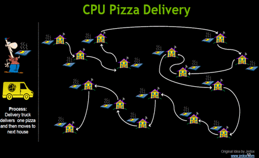</P>
<P STYLE="page-break-inside: avoid"><FONT COLOR="#1f497d"><FONT FACE="Cambria, serif"><FONT SIZE=2><I><B>Figure
7</B></I></FONT></FONT></FONT><FONT COLOR="#1f497d"><FONT FACE="Cambria, serif"><FONT SIZE=2><I>
– </I></FONT></FONT></FONT><FONT COLOR="#1f497d"><FONT FACE="Cambria, serif"><FONT SIZE=2><I><B>A
Typical CPU Operation</B></I></FONT></FONT></FONT><FONT COLOR="#1f497d"><FONT FACE="Cambria, serif"><FONT SIZE=2><I>
Nvidia, 2012: 10.</I></FONT></FONT></FONT></P>
<P STYLE="page-break-inside: avoid">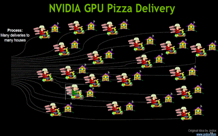</P>
<P STYLE="page-break-inside: avoid"><FONT COLOR="#1f497d"><FONT FACE="Cambria, serif"><FONT SIZE=2><I><B>Figure
8</B></I></FONT></FONT></FONT><FONT COLOR="#1f497d"><FONT FACE="Cambria, serif"><FONT SIZE=2><I>
– </I></FONT></FONT></FONT><FONT COLOR="#1f497d"><FONT FACE="Cambria, serif"><FONT SIZE=2><I><B>A
Typical GPU Operation</B></I></FONT></FONT></FONT><FONT COLOR="#1f497d"><FONT FACE="Cambria, serif"><FONT SIZE=2><I>
Nvidia, 2012: 11.</I></FONT></FONT></FONT></P>
<H2 CLASS="western"><A NAME="__RefHeading__4246_102278096"></A><A NAME="_Toc402117954"></A>
What does a GPU chip look like?  Cores, Caches &amp; SM’s</H2>
<P STYLE="page-break-inside: avoid"><FONT FACE="Cambria, serif">	A
GPU is largely made up of cores, caches and streaming multiprocessors
(SM’s).  Namely, thousands of cores are divided up into blocks on
SM’s – an SM is essentially a mini “brain” on the chip –
all the SM’s added together make up the entire ‘brain’ or chip.
 Furthermore, each SM has memory caches and registers.  A picture is
necessary here – there are 32 cores per SM on this GPU:</FONT> 
</P>
<P STYLE="page-break-inside: avoid"><BR>
</P>
<P STYLE="page-break-inside: avoid">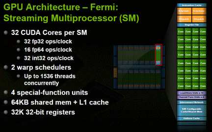</P>
<P STYLE="page-break-inside: avoid"><FONT COLOR="#1f497d"><FONT FACE="Cambria, serif"><FONT SIZE=2><I><B>Figure
9</B></I></FONT></FONT></FONT><FONT COLOR="#1f497d"><FONT FACE="Cambria, serif"><FONT SIZE=2><I>
– </I></FONT></FONT></FONT><FONT COLOR="#1f497d"><FONT FACE="Cambria, serif"><FONT SIZE=2><I><B>GPU
Architecture</B></I></FONT></FONT></FONT><FONT COLOR="#1f497d"><FONT FACE="Cambria, serif"><FONT SIZE=2><I>
Nvidia, 2012: 29.</I></FONT></FONT></FONT></P>
<H2 CLASS="western"><A NAME="__RefHeading__4248_102278096"></A><A NAME="_Toc402117955"></A>
 Hybrid CPU-GPU Operations:  Processing Flow</H2>
<P STYLE="page-break-inside: avoid"><FONT FACE="Cambria, serif">	The
next 3 charts demonstrate how the CPU and GPU interact when
processing hybrid functions or operations - CPU contents are copied
to GPU DRAM, the GPU does calculations via SM’s and then GPU
contents are copied back to CPU:</FONT></P>
<P STYLE="page-break-inside: avoid"><BR>
</P>
<P STYLE="page-break-inside: avoid">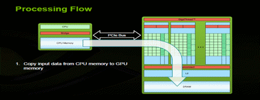</P>
<P STYLE="page-break-inside: avoid"><FONT COLOR="#1f497d"><FONT FACE="Cambria, serif"><FONT SIZE=2><I><B>Figure
10</B></I></FONT></FONT></FONT><FONT COLOR="#1f497d"><FONT FACE="Cambria, serif"><FONT SIZE=2><I>
– </I></FONT></FONT></FONT><FONT COLOR="#1f497d"><FONT FACE="Cambria, serif"><FONT SIZE=2><I><B>A
Typical Hybrid CPU-GPU Operation: CPU-to-GPU</B></I></FONT></FONT></FONT><FONT COLOR="#1f497d"><FONT FACE="Cambria, serif"><FONT SIZE=2><I>
Nvidia, 2012: 24.</I></FONT></FONT></FONT></P>
<P STYLE="page-break-inside: avoid">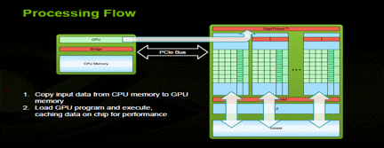</P>
<P STYLE="page-break-inside: avoid"><FONT COLOR="#1f497d"><FONT FACE="Cambria, serif"><FONT SIZE=2><I><B>Figure
11</B></I></FONT></FONT></FONT><FONT COLOR="#1f497d"><FONT FACE="Cambria, serif"><FONT SIZE=2><I>
– </I></FONT></FONT></FONT><FONT COLOR="#1f497d"><FONT FACE="Cambria, serif"><FONT SIZE=2><I><B>A
Typical Hybrid CPU-GPU Operation: GPU calculations via SM’s</B></I></FONT></FONT></FONT><FONT COLOR="#1f497d"><FONT FACE="Cambria, serif"><FONT SIZE=2><I>
Nvidia, 2012: 25.</I></FONT></FONT></FONT></P>
<P STYLE="page-break-inside: avoid"></P>
<P STYLE="page-break-inside: avoid"><FONT COLOR="#1f497d"><FONT FACE="Cambria, serif"><FONT SIZE=2><I><B>Figure
12</B></I></FONT></FONT></FONT><FONT COLOR="#1f497d"><FONT FACE="Cambria, serif"><FONT SIZE=2><I>
– </I></FONT></FONT></FONT><FONT COLOR="#1f497d"><FONT FACE="Cambria, serif"><FONT SIZE=2><I><B>A
Typical Hybrid CPU-GPU Operation: GPU-to-CPU</B></I></FONT></FONT></FONT><FONT COLOR="#1f497d"><FONT FACE="Cambria, serif"><FONT SIZE=2><I>
Nvidia, 2012: 26.</I></FONT></FONT></FONT></P>
<P STYLE="page-break-inside: avoid"><BR>
</P>
<H2 CLASS="western"><A NAME="__RefHeading__4250_102278096"></A><A NAME="_Toc402117956"></A>
GPU Memory Hierarchy &amp; Kernels:  Threads, Blocks &amp; Grids 
Cores, SM’s &amp; GPU’s</H2>
<P STYLE="page-break-inside: avoid"><FONT FACE="Cambria, serif">	GPU
memory breaks down into threads stored by registers in local memory. 
Groups of threads then make up blocks stored in shared memory. 
Blocks then make up grids which encompass global memory.  In terms of
kernel or function execution, threads map to cores while blocks map
to SM’s.  Finally, grids can take up the entirety of the GPU or
even multiple GPU’s via multi-streaming, concurrent execution –
these 2 slides show it best:</FONT> 
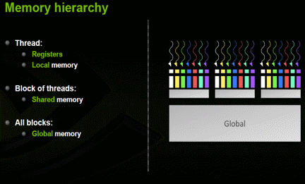</P>
<P STYLE="page-break-inside: avoid"><FONT COLOR="#1f497d"><FONT FACE="Cambria, serif"><FONT SIZE=2><I><B>Figure
13</B></I></FONT></FONT></FONT><FONT COLOR="#1f497d"><FONT FACE="Cambria, serif"><FONT SIZE=2><I>
– </I></FONT></FONT></FONT><FONT COLOR="#1f497d"><FONT FACE="Cambria, serif"><FONT SIZE=2><I><B>GPU
Memory Hierarchy</B></I></FONT></FONT></FONT><FONT COLOR="#1f497d"><FONT FACE="Cambria, serif"><FONT SIZE=2><I>
Nvidia, 2012: 27.</I></FONT></FONT></FONT></P>
<P STYLE="page-break-inside: avoid"><BR>
</P>
<P STYLE="page-break-inside: avoid"><BR>
</P>
<P STYLE="page-break-inside: avoid"><BR>
</P>
<P STYLE="page-break-inside: avoid"><BR>
</P>
<P STYLE="page-break-inside: avoid">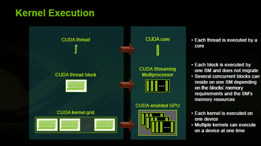</P>
<P STYLE="page-break-inside: avoid"><FONT COLOR="#1f497d"><FONT FACE="Cambria, serif"><FONT SIZE=2><I><B>Figure
14</B></I></FONT></FONT></FONT><FONT COLOR="#1f497d"><FONT FACE="Cambria, serif"><FONT SIZE=2><I>
– </I></FONT></FONT></FONT><FONT COLOR="#1f497d"><FONT FACE="Cambria, serif"><FONT SIZE=2><I><B>GPU
Kernel Execution</B></I></FONT></FONT></FONT><FONT COLOR="#1f497d"><FONT FACE="Cambria, serif"><FONT SIZE=2><I>
Nvidia, 2012: 43.</I></FONT></FONT></FONT></P>
<H2 CLASS="western"><A NAME="__RefHeading__4252_102278096"></A><A NAME="_Toc402117957"></A>
A Simple CUDA C Function</H2>
<P STYLE="page-break-inside: avoid"><FONT FACE="Cambria, serif">	The
simple function from Nvidia shows the difference between C code and
CUDA C – CUDA C is just an extension of C with some additional
syntax – the CUDA C compiler is called “NVCC” and is very
similar to the standard C compiler.  They are similar except the way
they declare and call functions as well as memory allocation.  In
CUDA C, you typically use “</FONT><FONT FACE="Cambria, serif"><B>_global_
void</B></FONT><FONT FACE="Cambria, serif">” rather than just
“</FONT><FONT FACE="Cambria, serif"><B>void</B></FONT><FONT FACE="Cambria, serif">”
to declare a function.  Also, you must use the triple chevron </FONT><FONT FACE="Cambria, serif"><B>“&lt;&lt;&lt;
blocks, threads &gt;&gt;&gt;</B></FONT><FONT FACE="Cambria, serif">”
to call a CUDA function.  Lastly, you cannot use “</FONT><FONT FACE="Cambria, serif"><B>calloc</B></FONT><FONT FACE="Cambria, serif">”
to allocate memory to GPU-related variables – you must use “</FONT><FONT FACE="Cambria, serif"><B>malloc</B></FONT><FONT FACE="Cambria, serif">”
instead:</FONT></P>
<P STYLE="page-break-inside: avoid"><BR>
</P>
<P STYLE="page-break-inside: avoid"><BR>
</P>
<P STYLE="page-break-inside: avoid"><BR>
</P>
<P STYLE="page-break-inside: avoid">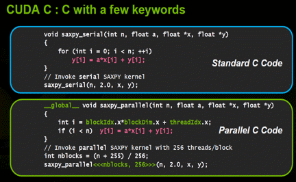</P>
<P STYLE="page-break-inside: avoid"><FONT COLOR="#1f497d"><FONT FACE="Cambria, serif"><FONT SIZE=2><I><B>Figure
15</B></I></FONT></FONT></FONT><FONT COLOR="#1f497d"><FONT FACE="Cambria, serif"><FONT SIZE=2><I>
– </I></FONT></FONT></FONT><FONT COLOR="#1f497d"><FONT FACE="Cambria, serif"><FONT SIZE=2><I><B>C
Function versus CUDA C Function</B></I></FONT></FONT></FONT><FONT COLOR="#1f497d"><FONT FACE="Cambria, serif"><FONT SIZE=2><I>
Nvidia, 2012: 34.</I></FONT></FONT></FONT></P>
<H2 CLASS="western"><A NAME="__RefHeading__4254_102278096"></A><A NAME="_Toc402117958"></A>
A Simple CUDA C Program</H2>
<P STYLE="page-break-inside: avoid"><FONT FACE="Cambria, serif">	In
the following CUDA C program, we’re simply going to make a CUDA
function that adds the number 10 to each subsequent iteration of a
variable.  We’ll then call that function in the </FONT><FONT FACE="Cambria, serif"><B>main</B></FONT><FONT FACE="Cambria, serif">
program and print the results to the console.  There are two versions
here – one without error trapping as well as the same version
showing how to trap CUDA errors – it is the same basic program,
overall:</FONT></P>
<P STYLE="page-break-inside: avoid"><BR>
</P>
<P STYLE="page-break-inside: avoid"><BR>
</P>
<P STYLE="page-break-inside: avoid"><BR>
</P>
<P STYLE="page-break-inside: avoid"><BR>
</P>
<P STYLE="page-break-inside: avoid"><BR>
</P>
<P STYLE="page-break-inside: avoid"><BR>
</P>
<P ALIGN=LEFT STYLE="widows: 1"><FONT COLOR="#4f81bd"><FONT FACE="Cambria, serif"><FONT SIZE=4><I><FONT SIZE=2><B>Exhibit
2 – Simple CUDA C Program</B></FONT><FONT SIZE=2> Author, 2013.</FONT></I></FONT></FONT></FONT></P>
<P><FONT COLOR="#0000ff"><FONT FACE="Consolas, serif"><FONT SIZE=1 STYLE="font-size: 8pt">#include</FONT></FONT></FONT><FONT FACE="Consolas, serif"><FONT SIZE=1 STYLE="font-size: 8pt">
</FONT></FONT><FONT COLOR="#a31515"><FONT FACE="Consolas, serif"><FONT SIZE=1 STYLE="font-size: 8pt">&lt;stdio.h&gt;</FONT></FONT></FONT></P>
<P><BR>
</P>
<P><FONT COLOR="#008000"><FONT FACE="Consolas, serif"><FONT SIZE=1 STYLE="font-size: 8pt">//
For the CUDA runtime library/routines (prefixed with &quot;cuda_&quot;)
- must include this file</FONT></FONT></FONT></P>
<P><FONT COLOR="#0000ff"><FONT FACE="Consolas, serif"><FONT SIZE=1 STYLE="font-size: 8pt">#include</FONT></FONT></FONT><FONT FACE="Consolas, serif"><FONT SIZE=1 STYLE="font-size: 8pt">
</FONT></FONT><FONT COLOR="#a31515"><FONT FACE="Consolas, serif"><FONT SIZE=1 STYLE="font-size: 8pt">&lt;cuda_runtime.h&gt;</FONT></FONT></FONT></P>
<P><BR>
</P>
<P><FONT COLOR="#008000"><FONT FACE="Consolas, serif"><FONT SIZE=1 STYLE="font-size: 8pt">/*
CUDA Kernel Device code</FONT></FONT></FONT></P>
<P><FONT COLOR="#008000"> <FONT FACE="Consolas, serif"><FONT SIZE=1 STYLE="font-size: 8pt">*
Computes the vector addition of 10 to each iteration i */</FONT></FONT></FONT></P>
<P><FONT FACE="Consolas, serif"><FONT SIZE=1 STYLE="font-size: 8pt">__global__
</FONT></FONT><FONT COLOR="#0000ff"><FONT FACE="Consolas, serif"><FONT SIZE=1 STYLE="font-size: 8pt">void</FONT></FONT></FONT><FONT FACE="Consolas, serif"><FONT SIZE=1 STYLE="font-size: 8pt">
kernelTest(</FONT></FONT><FONT COLOR="#0000ff"><FONT FACE="Consolas, serif"><FONT SIZE=1 STYLE="font-size: 8pt">int</FONT></FONT></FONT><FONT FACE="Consolas, serif"><FONT SIZE=1 STYLE="font-size: 8pt">*
i, </FONT></FONT><FONT COLOR="#0000ff"><FONT FACE="Consolas, serif"><FONT SIZE=1 STYLE="font-size: 8pt">int</FONT></FONT></FONT><FONT FACE="Consolas, serif"><FONT SIZE=1 STYLE="font-size: 8pt">
length){ </FONT></FONT>
</P>
<P><BR>
</P>
<P>    <FONT COLOR="#0000ff"><FONT FACE="Consolas, serif"><FONT SIZE=1 STYLE="font-size: 8pt">unsigned</FONT></FONT></FONT><FONT FACE="Consolas, serif"><FONT SIZE=1 STYLE="font-size: 8pt">
</FONT></FONT><FONT COLOR="#0000ff"><FONT FACE="Consolas, serif"><FONT SIZE=1 STYLE="font-size: 8pt">int</FONT></FONT></FONT><FONT FACE="Consolas, serif"><FONT SIZE=1 STYLE="font-size: 8pt">
tid = blockIdx.x*blockDim.x + threadIdx.x;</FONT></FONT></P>
<P><BR>
</P>
<P>    <FONT COLOR="#0000ff"><FONT FACE="Consolas, serif"><FONT SIZE=1 STYLE="font-size: 8pt">if</FONT></FONT></FONT><FONT FACE="Consolas, serif"><FONT SIZE=1 STYLE="font-size: 8pt">(tid
&lt; length)</FONT></FONT><FONT COLOR="#008000"><FONT FACE="Consolas, serif"><FONT SIZE=1 STYLE="font-size: 8pt">
</FONT></FONT></FONT>
</P>
<P>        <FONT FACE="Consolas, serif"><FONT SIZE=1 STYLE="font-size: 8pt">i[tid]
= i[tid] + 10;}</FONT></FONT></P>
<P><BR>
</P>
<P><FONT COLOR="#008000"><FONT FACE="Consolas, serif"><FONT SIZE=1 STYLE="font-size: 8pt">/*
This is the main routine which declares and initializes the integer
vector, moves it to the device, launches kernel</FONT></FONT></FONT></P>
<P><FONT COLOR="#008000"> <FONT FACE="Consolas, serif"><FONT SIZE=1 STYLE="font-size: 8pt">*
brings the result vector back to host and dumps it on the console. */</FONT></FONT></FONT></P>
<P><FONT COLOR="#0000ff"><FONT FACE="Consolas, serif"><FONT SIZE=1 STYLE="font-size: 8pt">int</FONT></FONT></FONT><FONT FACE="Consolas, serif"><FONT SIZE=1 STYLE="font-size: 8pt">
main(){</FONT></FONT></P>
<P><FONT FACE="Consolas, serif"><FONT SIZE=1 STYLE="font-size: 8pt">	</FONT></FONT></P>
<P><FONT COLOR="#008000"><FONT FACE="Consolas, serif"><FONT SIZE=1 STYLE="font-size: 8pt">//declare
pointer and allocate memory for host CPU variable - must use MALLOC
or CudaHostAlloc here</FONT></FONT></FONT></P>
<P>    <FONT COLOR="#0000ff"><FONT FACE="Consolas, serif"><FONT SIZE=1 STYLE="font-size: 8pt">int</FONT></FONT></FONT><FONT FACE="Consolas, serif"><FONT SIZE=1 STYLE="font-size: 8pt">
length  = 100;</FONT></FONT></P>
<P>    <FONT COLOR="#0000ff"><FONT FACE="Consolas, serif"><FONT SIZE=1 STYLE="font-size: 8pt">int</FONT></FONT></FONT><FONT FACE="Consolas, serif"><FONT SIZE=1 STYLE="font-size: 8pt">*
i = (</FONT></FONT><FONT COLOR="#0000ff"><FONT FACE="Consolas, serif"><FONT SIZE=1 STYLE="font-size: 8pt">int</FONT></FONT></FONT><FONT FACE="Consolas, serif"><FONT SIZE=1 STYLE="font-size: 8pt">*)malloc(length*</FONT></FONT><FONT COLOR="#0000ff"><FONT FACE="Consolas, serif"><FONT SIZE=1 STYLE="font-size: 8pt">sizeof</FONT></FONT></FONT><FONT FACE="Consolas, serif"><FONT SIZE=1 STYLE="font-size: 8pt">(</FONT></FONT><FONT COLOR="#0000ff"><FONT FACE="Consolas, serif"><FONT SIZE=1 STYLE="font-size: 8pt">int</FONT></FONT></FONT><FONT FACE="Consolas, serif"><FONT SIZE=1 STYLE="font-size: 8pt">));</FONT></FONT></P>
<P><BR>
</P>
<P><FONT COLOR="#008000"><FONT FACE="Consolas, serif"><FONT SIZE=1 STYLE="font-size: 8pt">//fill
CPU variable with values from 1 to 100 via loop</FONT></FONT></FONT></P>
<P>    <FONT COLOR="#0000ff"><FONT FACE="Consolas, serif"><FONT SIZE=1 STYLE="font-size: 8pt">for</FONT></FONT></FONT><FONT FACE="Consolas, serif"><FONT SIZE=1 STYLE="font-size: 8pt">(</FONT></FONT><FONT COLOR="#0000ff"><FONT FACE="Consolas, serif"><FONT SIZE=1 STYLE="font-size: 8pt">int</FONT></FONT></FONT><FONT FACE="Consolas, serif"><FONT SIZE=1 STYLE="font-size: 8pt">
x=0;x&lt;length;x++)</FONT></FONT></P>
<P>        <FONT FACE="Consolas, serif"><FONT SIZE=1 STYLE="font-size: 8pt">i[x]
= x;</FONT></FONT></P>
<P><BR>
</P>
<P><FONT COLOR="#008000"><FONT FACE="Consolas, serif"><FONT SIZE=1 STYLE="font-size: 8pt">//declare
pointer and allocate memory for device GPU variable denoted with &quot;_d&quot;
– must use cudaMalloc here</FONT></FONT></FONT></P>
<P>    <FONT COLOR="#0000ff"><FONT FACE="Consolas, serif"><FONT SIZE=1 STYLE="font-size: 8pt">int</FONT></FONT></FONT><FONT FACE="Consolas, serif"><FONT SIZE=1 STYLE="font-size: 8pt">*
i_d;</FONT></FONT></P>
<P>    <FONT FACE="Consolas, serif"><FONT SIZE=1 STYLE="font-size: 8pt">cudaMalloc((</FONT></FONT><FONT COLOR="#0000ff"><FONT FACE="Consolas, serif"><FONT SIZE=1 STYLE="font-size: 8pt">void</FONT></FONT></FONT><FONT FACE="Consolas, serif"><FONT SIZE=1 STYLE="font-size: 8pt">**)&amp;i_d,length*</FONT></FONT><FONT COLOR="#0000ff"><FONT FACE="Consolas, serif"><FONT SIZE=1 STYLE="font-size: 8pt">sizeof</FONT></FONT></FONT><FONT FACE="Consolas, serif"><FONT SIZE=1 STYLE="font-size: 8pt">(</FONT></FONT><FONT COLOR="#0000ff"><FONT FACE="Consolas, serif"><FONT SIZE=1 STYLE="font-size: 8pt">int</FONT></FONT></FONT><FONT FACE="Consolas, serif"><FONT SIZE=1 STYLE="font-size: 8pt">));</FONT></FONT><FONT COLOR="#008000"><FONT FACE="Consolas, serif"><FONT SIZE=1 STYLE="font-size: 8pt">
</FONT></FONT></FONT>
</P>
<P><BR>
</P>
<P><FONT COLOR="#008000"><FONT FACE="Consolas, serif"><FONT SIZE=1 STYLE="font-size: 8pt">//copy
contents of host CPU variable over to GPU variable on GPU device</FONT></FONT></FONT></P>
<P>    <FONT FACE="Consolas, serif"><FONT SIZE=1 STYLE="font-size: 8pt">cudaMemcpy(i_d,
i, length*</FONT></FONT><FONT COLOR="#0000ff"><FONT FACE="Consolas, serif"><FONT SIZE=1 STYLE="font-size: 8pt">sizeof</FONT></FONT></FONT><FONT FACE="Consolas, serif"><FONT SIZE=1 STYLE="font-size: 8pt">(</FONT></FONT><FONT COLOR="#0000ff"><FONT FACE="Consolas, serif"><FONT SIZE=1 STYLE="font-size: 8pt">int</FONT></FONT></FONT><FONT FACE="Consolas, serif"><FONT SIZE=1 STYLE="font-size: 8pt">),
cudaMemcpyHostToDevice);</FONT></FONT></P>
<P><BR>
</P>
<P><FONT COLOR="#008000"><FONT FACE="Consolas, serif"><FONT SIZE=1 STYLE="font-size: 8pt">//designate
how many threads and blocks to use on GPU for CUDA function
call/calculation - this depends on each device</FONT></FONT></FONT></P>
<P>    <FONT FACE="Consolas, serif"><FONT SIZE=1 STYLE="font-size: 8pt">dim3
threads; threads.x = 256; </FONT></FONT>
</P>
<P>    <FONT FACE="Consolas, serif"><FONT SIZE=1 STYLE="font-size: 8pt">dim3
blocks; blocks.x = (length/threads.x) + 1;</FONT></FONT></P>
<P><BR>
</P>
<P><FONT COLOR="#008000"><FONT FACE="Consolas, serif"><FONT SIZE=1 STYLE="font-size: 8pt">//call
CUDA C function - note triple chevron syntax</FONT></FONT></FONT></P>
<P>    <FONT FACE="Consolas, serif"><FONT SIZE=1 STYLE="font-size: 8pt">kernelTest&lt;&lt;&lt;threads,blocks&gt;&gt;&gt;(i_d,length);
</FONT></FONT>
</P>
<P><FONT FACE="Consolas, serif"><FONT SIZE=1 STYLE="font-size: 8pt">	</FONT></FONT></P>
<P><FONT COLOR="#008000"><FONT FACE="Consolas, serif"><FONT SIZE=1 STYLE="font-size: 8pt">//wait
for CUDA C function to finish and then copy results from GPU variable
on device back to CPU variable on host – this is a </FONT></FONT></FONT><FONT COLOR="#008000"><FONT FACE="Consolas, serif"><FONT SIZE=1 STYLE="font-size: 8pt"><B>blocking</B></FONT></FONT></FONT><FONT COLOR="#008000"><FONT FACE="Consolas, serif"><FONT SIZE=1 STYLE="font-size: 8pt">
operation and will wait until GPU has finished calc process</FONT></FONT></FONT></P>
<P>    <FONT FACE="Consolas, serif"><FONT SIZE=1 STYLE="font-size: 8pt">cudaMemcpy(i,
i_d, length*</FONT></FONT><FONT COLOR="#0000ff"><FONT FACE="Consolas, serif"><FONT SIZE=1 STYLE="font-size: 8pt">sizeof</FONT></FONT></FONT><FONT FACE="Consolas, serif"><FONT SIZE=1 STYLE="font-size: 8pt">(</FONT></FONT><FONT COLOR="#0000ff"><FONT FACE="Consolas, serif"><FONT SIZE=1 STYLE="font-size: 8pt">int</FONT></FONT></FONT><FONT FACE="Consolas, serif"><FONT SIZE=1 STYLE="font-size: 8pt">),
cudaMemcpyDeviceToHost);</FONT></FONT></P>
<P><BR>
</P>
<P><FONT COLOR="#008000"><FONT FACE="Consolas, serif"><FONT SIZE=1 STYLE="font-size: 8pt">//print
results of CPU variable to console</FONT></FONT></FONT></P>
<P>    <FONT COLOR="#0000ff"><FONT FACE="Consolas, serif"><FONT SIZE=1 STYLE="font-size: 8pt">for</FONT></FONT></FONT><FONT FACE="Consolas, serif"><FONT SIZE=1 STYLE="font-size: 8pt">(</FONT></FONT><FONT COLOR="#0000ff"><FONT FACE="Consolas, serif"><FONT SIZE=1 STYLE="font-size: 8pt">int</FONT></FONT></FONT><FONT FACE="Consolas, serif"><FONT SIZE=1 STYLE="font-size: 8pt">
x=0;x&lt;length;x++)</FONT></FONT></P>
<P>        <FONT FACE="Consolas, serif"><FONT SIZE=1 STYLE="font-size: 8pt">printf(</FONT></FONT><FONT COLOR="#a31515"><FONT FACE="Consolas, serif"><FONT SIZE=1 STYLE="font-size: 8pt">&quot;%d\t&quot;</FONT></FONT></FONT><FONT FACE="Consolas, serif"><FONT SIZE=1 STYLE="font-size: 8pt">,i[x]);</FONT></FONT></P>
<P><BR>
</P>
<P><FONT COLOR="#008000"><FONT FACE="Consolas, serif"><FONT SIZE=1 STYLE="font-size: 8pt">//free
memory for both CPU and GPU variables/pointers – must use cudaFree
here for GPU variable</FONT></FONT></FONT></P>
<P><FONT FACE="Consolas, serif"><FONT SIZE=1 STYLE="font-size: 8pt">	free
(i); cudaFree (i_d); </FONT></FONT>
</P>
<P><BR>
</P>
<P><FONT COLOR="#008000"><FONT FACE="Consolas, serif"><FONT SIZE=1 STYLE="font-size: 8pt">//reset
GPU device</FONT></FONT></FONT></P>
<P><FONT FACE="Consolas, serif"><FONT SIZE=1 STYLE="font-size: 8pt">	cudaDeviceReset();
 }</FONT></FONT></P>
<P STYLE="page-break-inside: avoid"><BR>
</P>
<P STYLE="page-break-inside: avoid"><A HREF="https://bitbucket.org/adrew/gpu/commits/7e8154cf89bfc312adbf899187d89622"><FONT FACE="Cambria, serif"><FONT SIZE=2><I>https://bitbucket.org/adrew/gpu/commits/7e8154cf89bfc312adbf899187d89622</I></FONT></FONT></A></P>
<P STYLE="page-break-inside: avoid"><BR>
</P>
<P STYLE="page-break-inside: avoid"><BR>
</P>
<P ALIGN=LEFT STYLE="widows: 1"><FONT COLOR="#4f81bd"><FONT FACE="Cambria, serif"><FONT SIZE=4><I><FONT SIZE=2><B>Exhibit
3 – Simple CUDA C Program with Error Trapping</B></FONT><FONT SIZE=2>
Author, 2013.</FONT></I></FONT></FONT></FONT></P>
<P><FONT COLOR="#0000ff"><FONT FACE="Consolas, serif"><FONT SIZE=1 STYLE="font-size: 8pt">#include</FONT></FONT></FONT><FONT FACE="Consolas, serif"><FONT SIZE=1 STYLE="font-size: 8pt">
</FONT></FONT><FONT COLOR="#a31515"><FONT FACE="Consolas, serif"><FONT SIZE=1 STYLE="font-size: 8pt">&lt;stdio.h&gt;</FONT></FONT></FONT></P>
<P><FONT COLOR="#008000"><FONT FACE="Consolas, serif"><FONT SIZE=1 STYLE="font-size: 8pt">//
For the CUDA runtime routines (prefixed with &quot;cuda_&quot;)</FONT></FONT></FONT></P>
<P><FONT COLOR="#0000ff"><FONT FACE="Consolas, serif"><FONT SIZE=1 STYLE="font-size: 8pt">#include</FONT></FONT></FONT><FONT FACE="Consolas, serif"><FONT SIZE=1 STYLE="font-size: 8pt">
</FONT></FONT><FONT COLOR="#a31515"><FONT FACE="Consolas, serif"><FONT SIZE=1 STYLE="font-size: 8pt">&lt;cuda_runtime.h&gt;</FONT></FONT></FONT></P>
<P><FONT COLOR="#0000ff"><FONT FACE="Consolas, serif"><FONT SIZE=1 STYLE="font-size: 8pt">#include</FONT></FONT></FONT><FONT FACE="Consolas, serif"><FONT SIZE=1 STYLE="font-size: 8pt">
</FONT></FONT><FONT COLOR="#a31515"><FONT FACE="Consolas, serif"><FONT SIZE=1 STYLE="font-size: 8pt">&lt;cuda_runtime_api.h&gt;</FONT></FONT></FONT></P>
<P><BR>
</P>
<P><FONT COLOR="#008000"><FONT FACE="Consolas, serif"><FONT SIZE=1 STYLE="font-size: 8pt">//CUDA
Kernel Device code - Computes the vector addition of 10 to each
iteration i</FONT></FONT></FONT></P>
<P><FONT FACE="Consolas, serif"><FONT SIZE=1 STYLE="font-size: 8pt">__global__
</FONT></FONT><FONT COLOR="#0000ff"><FONT FACE="Consolas, serif"><FONT SIZE=1 STYLE="font-size: 8pt">void</FONT></FONT></FONT><FONT FACE="Consolas, serif"><FONT SIZE=1 STYLE="font-size: 8pt">
kernelTest(</FONT></FONT><FONT COLOR="#0000ff"><FONT FACE="Consolas, serif"><FONT SIZE=1 STYLE="font-size: 8pt">int</FONT></FONT></FONT><FONT FACE="Consolas, serif"><FONT SIZE=1 STYLE="font-size: 8pt">*
i, </FONT></FONT><FONT COLOR="#0000ff"><FONT FACE="Consolas, serif"><FONT SIZE=1 STYLE="font-size: 8pt">int</FONT></FONT></FONT><FONT FACE="Consolas, serif"><FONT SIZE=1 STYLE="font-size: 8pt">
length){</FONT></FONT></P>
<P><BR>
</P>
<P>    <FONT COLOR="#0000ff"><FONT FACE="Consolas, serif"><FONT SIZE=1 STYLE="font-size: 8pt">unsigned</FONT></FONT></FONT><FONT FACE="Consolas, serif"><FONT SIZE=1 STYLE="font-size: 8pt">
</FONT></FONT><FONT COLOR="#0000ff"><FONT FACE="Consolas, serif"><FONT SIZE=1 STYLE="font-size: 8pt">int</FONT></FONT></FONT><FONT FACE="Consolas, serif"><FONT SIZE=1 STYLE="font-size: 8pt">
tid = blockIdx.x*blockDim.x + threadIdx.x;</FONT></FONT></P>
<P><BR>
</P>
<P>    <FONT COLOR="#0000ff"><FONT FACE="Consolas, serif"><FONT SIZE=1 STYLE="font-size: 8pt">if</FONT></FONT></FONT><FONT FACE="Consolas, serif"><FONT SIZE=1 STYLE="font-size: 8pt">(tid
&lt; length)</FONT></FONT></P>
<P>        <FONT FACE="Consolas, serif"><FONT SIZE=1 STYLE="font-size: 8pt">i[tid]
= i[tid] + 10; }</FONT></FONT></P>
<P><BR>
</P>
<P> <FONT COLOR="#008000"><FONT FACE="Consolas, serif"><FONT SIZE=1 STYLE="font-size: 8pt">/*
This is the main routine which declares and initializes the integer
vector, moves it to the device, launches kernel and brings the result
vector back to host and dumps it on the console. */</FONT></FONT></FONT></P>
<P><FONT COLOR="#0000ff"><FONT FACE="Consolas, serif"><FONT SIZE=1 STYLE="font-size: 8pt">int</FONT></FONT></FONT><FONT FACE="Consolas, serif"><FONT SIZE=1 STYLE="font-size: 8pt">
main(</FONT></FONT><FONT COLOR="#0000ff"><FONT FACE="Consolas, serif"><FONT SIZE=1 STYLE="font-size: 8pt">void</FONT></FONT></FONT><FONT FACE="Consolas, serif"><FONT SIZE=1 STYLE="font-size: 8pt">){</FONT></FONT></P>
<P><BR>
</P>
<P><FONT FACE="Consolas, serif"><FONT SIZE=1 STYLE="font-size: 8pt">	</FONT></FONT><FONT COLOR="#008000"><FONT FACE="Consolas, serif"><FONT SIZE=1 STYLE="font-size: 8pt">//
Error code to check return values for CUDA calls</FONT></FONT></FONT></P>
<P>    <FONT FACE="Consolas, serif"><FONT SIZE=1 STYLE="font-size: 8pt">cudaError_t
err = cudaSuccess;</FONT></FONT></P>
<P><BR>
</P>
<P>    <FONT COLOR="#0000ff"><FONT FACE="Consolas, serif"><FONT SIZE=1 STYLE="font-size: 8pt">int</FONT></FONT></FONT><FONT FACE="Consolas, serif"><FONT SIZE=1 STYLE="font-size: 8pt">
cumsum[200]={0},x=0;</FONT></FONT></P>
<P>    <FONT COLOR="#0000ff"><FONT FACE="Consolas, serif"><FONT SIZE=1 STYLE="font-size: 8pt">int</FONT></FONT></FONT><FONT FACE="Consolas, serif"><FONT SIZE=1 STYLE="font-size: 8pt">
length  = 100;</FONT></FONT></P>
<P><FONT FACE="Consolas, serif"><FONT SIZE=1 STYLE="font-size: 8pt">	printf(</FONT></FONT><FONT COLOR="#a31515"><FONT FACE="Consolas, serif"><FONT SIZE=1 STYLE="font-size: 8pt">&quot;[Vector
multiplication of %d elements]\n&quot;</FONT></FONT></FONT><FONT FACE="Consolas, serif"><FONT SIZE=1 STYLE="font-size: 8pt">,
length);</FONT></FONT></P>
<P><BR>
</P>
<P><FONT FACE="Consolas, serif"><FONT SIZE=1 STYLE="font-size: 8pt">	</FONT></FONT><FONT COLOR="#008000"><FONT FACE="Consolas, serif"><FONT SIZE=1 STYLE="font-size: 8pt">//
Allocate the host input vector A</FONT></FONT></FONT></P>
<P>    <FONT COLOR="#0000ff"><FONT FACE="Consolas, serif"><FONT SIZE=1 STYLE="font-size: 8pt">int</FONT></FONT></FONT><FONT FACE="Consolas, serif"><FONT SIZE=1 STYLE="font-size: 8pt">*
i = (</FONT></FONT><FONT COLOR="#0000ff"><FONT FACE="Consolas, serif"><FONT SIZE=1 STYLE="font-size: 8pt">int</FONT></FONT></FONT><FONT FACE="Consolas, serif"><FONT SIZE=1 STYLE="font-size: 8pt">*)malloc(length*</FONT></FONT><FONT COLOR="#0000ff"><FONT FACE="Consolas, serif"><FONT SIZE=1 STYLE="font-size: 8pt">sizeof</FONT></FONT></FONT><FONT FACE="Consolas, serif"><FONT SIZE=1 STYLE="font-size: 8pt">(</FONT></FONT><FONT COLOR="#0000ff"><FONT FACE="Consolas, serif"><FONT SIZE=1 STYLE="font-size: 8pt">int</FONT></FONT></FONT><FONT FACE="Consolas, serif"><FONT SIZE=1 STYLE="font-size: 8pt">));</FONT></FONT></P>
<P><BR>
</P>
<P>    <FONT COLOR="#0000ff"><FONT FACE="Consolas, serif"><FONT SIZE=1 STYLE="font-size: 8pt">for</FONT></FONT></FONT><FONT FACE="Consolas, serif"><FONT SIZE=1 STYLE="font-size: 8pt">(</FONT></FONT><FONT COLOR="#0000ff"><FONT FACE="Consolas, serif"><FONT SIZE=1 STYLE="font-size: 8pt">int</FONT></FONT></FONT><FONT FACE="Consolas, serif"><FONT SIZE=1 STYLE="font-size: 8pt">
x=0;x&lt;length;x++)</FONT></FONT></P>
<P>        <FONT FACE="Consolas, serif"><FONT SIZE=1 STYLE="font-size: 8pt">i[x]
= x;</FONT></FONT></P>
<P><BR>
</P>
<P><FONT FACE="Consolas, serif"><FONT SIZE=1 STYLE="font-size: 8pt">	
</FONT></FONT><FONT COLOR="#008000"><FONT FACE="Consolas, serif"><FONT SIZE=1 STYLE="font-size: 8pt">//
Allocate the device input vector </FONT></FONT></FONT>
</P>
<P>    <FONT COLOR="#0000ff"><FONT FACE="Consolas, serif"><FONT SIZE=1 STYLE="font-size: 8pt">int</FONT></FONT></FONT><FONT FACE="Consolas, serif"><FONT SIZE=1 STYLE="font-size: 8pt">*
i_d;</FONT></FONT></P>
<P>    <FONT FACE="Consolas, serif"><FONT SIZE=1 STYLE="font-size: 8pt">err=cudaMalloc((</FONT></FONT><FONT COLOR="#0000ff"><FONT FACE="Consolas, serif"><FONT SIZE=1 STYLE="font-size: 8pt">void</FONT></FONT></FONT><FONT FACE="Consolas, serif"><FONT SIZE=1 STYLE="font-size: 8pt">**)&amp;i_d,length*</FONT></FONT><FONT COLOR="#0000ff"><FONT FACE="Consolas, serif"><FONT SIZE=1 STYLE="font-size: 8pt">sizeof</FONT></FONT></FONT><FONT FACE="Consolas, serif"><FONT SIZE=1 STYLE="font-size: 8pt">(</FONT></FONT><FONT COLOR="#0000ff"><FONT FACE="Consolas, serif"><FONT SIZE=1 STYLE="font-size: 8pt">int</FONT></FONT></FONT><FONT FACE="Consolas, serif"><FONT SIZE=1 STYLE="font-size: 8pt">));</FONT></FONT></P>
<P><BR>
</P>
<P><FONT FACE="Consolas, serif"><FONT SIZE=1 STYLE="font-size: 8pt">	</FONT></FONT><FONT COLOR="#0000ff"><FONT FACE="Consolas, serif"><FONT SIZE=1 STYLE="font-size: 8pt">if</FONT></FONT></FONT><FONT FACE="Consolas, serif"><FONT SIZE=1 STYLE="font-size: 8pt">
(err != cudaSuccess)</FONT></FONT><FONT COLOR="#008000"><FONT FACE="Consolas, serif"><FONT SIZE=1 STYLE="font-size: 8pt">
</FONT></FONT></FONT>
</P>
<P>    <FONT FACE="Consolas, serif"><FONT SIZE=1 STYLE="font-size: 8pt">{</FONT></FONT></P>
<P><FONT FACE="Consolas, serif"><FONT SIZE=1 STYLE="font-size: 8pt">fprintf(stderr,
</FONT></FONT><FONT COLOR="#a31515"><FONT FACE="Consolas, serif"><FONT SIZE=1 STYLE="font-size: 8pt">&quot;Failed
to allocate device matrix  (error code %s)!\n&quot;</FONT></FONT></FONT><FONT FACE="Consolas, serif"><FONT SIZE=1 STYLE="font-size: 8pt">,
cudaGetErrorString(err));</FONT></FONT></P>
<P>        <FONT FACE="Consolas, serif"><FONT SIZE=1 STYLE="font-size: 8pt">exit(EXIT_FAILURE);
}</FONT></FONT></P>
<P><BR>
</P>
<P><FONT FACE="Consolas, serif"><FONT SIZE=1 STYLE="font-size: 8pt">	</FONT></FONT><FONT COLOR="#008000"><FONT FACE="Consolas, serif"><FONT SIZE=1 STYLE="font-size: 8pt">//
Copy the host input vector A in host memory to the device input
vectors on GPU</FONT></FONT></FONT></P>
<P><FONT FACE="Consolas, serif"><FONT SIZE=1 STYLE="font-size: 8pt">	printf(</FONT></FONT><FONT COLOR="#a31515"><FONT FACE="Consolas, serif"><FONT SIZE=1 STYLE="font-size: 8pt">&quot;Copy
input data from the host memory to the CUDA device\n&quot;</FONT></FONT></FONT><FONT FACE="Consolas, serif"><FONT SIZE=1 STYLE="font-size: 8pt">);</FONT></FONT></P>
<P>    <FONT FACE="Consolas, serif"><FONT SIZE=1 STYLE="font-size: 8pt">err
= cudaMemcpy(i_d, i, length*</FONT></FONT><FONT COLOR="#0000ff"><FONT FACE="Consolas, serif"><FONT SIZE=1 STYLE="font-size: 8pt">sizeof</FONT></FONT></FONT><FONT FACE="Consolas, serif"><FONT SIZE=1 STYLE="font-size: 8pt">(</FONT></FONT><FONT COLOR="#0000ff"><FONT FACE="Consolas, serif"><FONT SIZE=1 STYLE="font-size: 8pt">int</FONT></FONT></FONT><FONT FACE="Consolas, serif"><FONT SIZE=1 STYLE="font-size: 8pt">),
cudaMemcpyHostToDevice);</FONT></FONT></P>
<P><BR>
</P>
<P><FONT FACE="Consolas, serif"><FONT SIZE=1 STYLE="font-size: 8pt">	</FONT></FONT><FONT COLOR="#0000ff"><FONT FACE="Consolas, serif"><FONT SIZE=1 STYLE="font-size: 8pt">if</FONT></FONT></FONT><FONT FACE="Consolas, serif"><FONT SIZE=1 STYLE="font-size: 8pt">
(err != cudaSuccess)</FONT></FONT></P>
<P>    <FONT FACE="Consolas, serif"><FONT SIZE=1 STYLE="font-size: 8pt">{</FONT></FONT></P>
<P><FONT FACE="Consolas, serif"><FONT SIZE=1 STYLE="font-size: 8pt">fprintf(stderr,
</FONT></FONT><FONT COLOR="#a31515"><FONT FACE="Consolas, serif"><FONT SIZE=1 STYLE="font-size: 8pt">&quot;Failed
to copy matrix from host to device (error code %s)!\n&quot;</FONT></FONT></FONT><FONT FACE="Consolas, serif"><FONT SIZE=1 STYLE="font-size: 8pt">,
cudaGetErrorString(err));</FONT></FONT></P>
<P>        <FONT FACE="Consolas, serif"><FONT SIZE=1 STYLE="font-size: 8pt">exit(EXIT_FAILURE);
}</FONT></FONT></P>
<P><BR>
</P>
<P><FONT FACE="Consolas, serif"><FONT SIZE=1 STYLE="font-size: 8pt">	</FONT></FONT><FONT COLOR="#008000"><FONT FACE="Consolas, serif"><FONT SIZE=1 STYLE="font-size: 8pt">//
Launch the Vector Add CUDA Kernel</FONT></FONT></FONT></P>
<P>    <FONT FACE="Consolas, serif"><FONT SIZE=1 STYLE="font-size: 8pt">dim3
threads; threads.x = 256;</FONT></FONT></P>
<P>    <FONT FACE="Consolas, serif"><FONT SIZE=1 STYLE="font-size: 8pt">dim3
blocks; blocks.x = (length/threads.x) + 1;</FONT></FONT></P>
<P>    <FONT FACE="Consolas, serif"><FONT SIZE=1 STYLE="font-size: 8pt">kernelTest&lt;&lt;&lt;threads,blocks&gt;&gt;&gt;(i_d,length);</FONT></FONT></P>
<P><BR>
</P>
<P><FONT FACE="Consolas, serif"><FONT SIZE=1 STYLE="font-size: 8pt">	err
= cudaGetLastError();</FONT></FONT></P>
<P><BR>
</P>
<P>    <FONT COLOR="#0000ff"><FONT FACE="Consolas, serif"><FONT SIZE=1 STYLE="font-size: 8pt">if</FONT></FONT></FONT><FONT FACE="Consolas, serif"><FONT SIZE=1 STYLE="font-size: 8pt">
(err != cudaSuccess)</FONT></FONT></P>
<P>    <FONT FACE="Consolas, serif"><FONT SIZE=1 STYLE="font-size: 8pt">{</FONT></FONT></P>
<P><FONT FACE="Consolas, serif"><FONT SIZE=1 STYLE="font-size: 8pt">fprintf(stderr,
</FONT></FONT><FONT COLOR="#a31515"><FONT FACE="Consolas, serif"><FONT SIZE=1 STYLE="font-size: 8pt">&quot;Failed
to launch vectorMultiply kernel (error code %s)!\n&quot;</FONT></FONT></FONT><FONT FACE="Consolas, serif"><FONT SIZE=1 STYLE="font-size: 8pt">,
cudaGetErrorString(err));</FONT></FONT></P>
<P>        <FONT FACE="Consolas, serif"><FONT SIZE=1 STYLE="font-size: 8pt">exit(EXIT_FAILURE);
}</FONT></FONT></P>
<P><BR>
</P>
<P><FONT FACE="Consolas, serif"><FONT SIZE=1 STYLE="font-size: 8pt">	
</FONT></FONT><FONT COLOR="#008000"><FONT FACE="Consolas, serif"><FONT SIZE=1 STYLE="font-size: 8pt">//
Copy the device result vector in device memory to the host result
vector</FONT></FONT></FONT></P>
<P><FONT FACE="Consolas, serif"><FONT SIZE=1 STYLE="font-size: 8pt">	printf(</FONT></FONT><FONT COLOR="#a31515"><FONT FACE="Consolas, serif"><FONT SIZE=1 STYLE="font-size: 8pt">&quot;Copy
output data from the CUDA device to the host memory\n&quot;</FONT></FONT></FONT><FONT FACE="Consolas, serif"><FONT SIZE=1 STYLE="font-size: 8pt">);</FONT></FONT></P>
<P>    <FONT FACE="Consolas, serif"><FONT SIZE=1 STYLE="font-size: 8pt">	err
= cudaMemcpy(i, i_d, length*</FONT></FONT><FONT COLOR="#0000ff"><FONT FACE="Consolas, serif"><FONT SIZE=1 STYLE="font-size: 8pt">sizeof</FONT></FONT></FONT><FONT FACE="Consolas, serif"><FONT SIZE=1 STYLE="font-size: 8pt">(</FONT></FONT><FONT COLOR="#0000ff"><FONT FACE="Consolas, serif"><FONT SIZE=1 STYLE="font-size: 8pt">int</FONT></FONT></FONT><FONT FACE="Consolas, serif"><FONT SIZE=1 STYLE="font-size: 8pt">),
cudaMemcpyDeviceToHost);</FONT></FONT></P>
<P><BR>
</P>
<P><FONT FACE="Consolas, serif"><FONT SIZE=1 STYLE="font-size: 8pt">	
</FONT></FONT><FONT COLOR="#0000ff"><FONT FACE="Consolas, serif"><FONT SIZE=1 STYLE="font-size: 8pt">if</FONT></FONT></FONT><FONT FACE="Consolas, serif"><FONT SIZE=1 STYLE="font-size: 8pt">
(err != cudaSuccess)</FONT></FONT></P>
<P>    <FONT FACE="Consolas, serif"><FONT SIZE=1 STYLE="font-size: 8pt">{</FONT></FONT></P>
<P><FONT FACE="Consolas, serif"><FONT SIZE=1 STYLE="font-size: 8pt">fprintf(stderr,
</FONT></FONT><FONT COLOR="#a31515"><FONT FACE="Consolas, serif"><FONT SIZE=1 STYLE="font-size: 8pt">&quot;Failed
to copy matrix from device to host (error code %s)!\n&quot;</FONT></FONT></FONT><FONT FACE="Consolas, serif"><FONT SIZE=1 STYLE="font-size: 8pt">,
cudaGetErrorString(err));</FONT></FONT></P>
<P>        <FONT FACE="Consolas, serif"><FONT SIZE=1 STYLE="font-size: 8pt">exit(EXIT_FAILURE);
}</FONT></FONT></P>
<P><BR>
</P>
<P>    <FONT COLOR="#0000ff"><FONT FACE="Consolas, serif"><FONT SIZE=1 STYLE="font-size: 8pt">for</FONT></FONT></FONT><FONT FACE="Consolas, serif"><FONT SIZE=1 STYLE="font-size: 8pt">(</FONT></FONT><FONT COLOR="#0000ff"><FONT FACE="Consolas, serif"><FONT SIZE=1 STYLE="font-size: 8pt">int</FONT></FONT></FONT><FONT FACE="Consolas, serif"><FONT SIZE=1 STYLE="font-size: 8pt">
x=0;x&lt;length;x++)</FONT></FONT></P>
<P>        <FONT FACE="Consolas, serif"><FONT SIZE=1 STYLE="font-size: 8pt">printf(</FONT></FONT><FONT COLOR="#a31515"><FONT FACE="Consolas, serif"><FONT SIZE=1 STYLE="font-size: 8pt">&quot;%d\t&quot;</FONT></FONT></FONT><FONT FACE="Consolas, serif"><FONT SIZE=1 STYLE="font-size: 8pt">,i[x]);</FONT></FONT></P>
<P><BR>
</P>
<P><FONT FACE="Consolas, serif"><FONT SIZE=1 STYLE="font-size: 8pt">	</FONT></FONT><FONT COLOR="#008000"><FONT FACE="Consolas, serif"><FONT SIZE=1 STYLE="font-size: 8pt">//
Verify that the result vector is correct</FONT></FONT></FONT></P>
<P>    <FONT COLOR="#0000ff"><FONT FACE="Consolas, serif"><FONT SIZE=1 STYLE="font-size: 8pt">for</FONT></FONT></FONT><FONT FACE="Consolas, serif"><FONT SIZE=1 STYLE="font-size: 8pt">
(</FONT></FONT><FONT COLOR="#0000ff"><FONT FACE="Consolas, serif"><FONT SIZE=1 STYLE="font-size: 8pt">int</FONT></FONT></FONT><FONT FACE="Consolas, serif"><FONT SIZE=1 STYLE="font-size: 8pt">
x = 1; x &lt;= length; ++x)</FONT></FONT></P>
<P>    <FONT FACE="Consolas, serif"><FONT SIZE=1 STYLE="font-size: 8pt">{
    </FONT></FONT>
</P>
<P><FONT FACE="Consolas, serif"><FONT SIZE=1 STYLE="font-size: 8pt">	cumsum[x]
= cumsum[x-1]+i[x]; }</FONT></FONT></P>
<P><BR>
</P>
<P><FONT FACE="Consolas, serif"><FONT SIZE=1 STYLE="font-size: 8pt">	</FONT></FONT><FONT COLOR="#0000ff"><FONT FACE="Consolas, serif"><FONT SIZE=1 STYLE="font-size: 8pt">if</FONT></FONT></FONT><FONT FACE="Consolas, serif"><FONT SIZE=1 STYLE="font-size: 8pt">
(cumsum[length-1]+i[0] != 5950)</FONT></FONT></P>
<P>        <FONT FACE="Consolas, serif"><FONT SIZE=1 STYLE="font-size: 8pt">{</FONT></FONT></P>
<P>            <FONT FACE="Consolas, serif"><FONT SIZE=1 STYLE="font-size: 8pt">fprintf(stderr,</FONT></FONT><FONT COLOR="#a31515"><FONT FACE="Consolas, serif"><FONT SIZE=1 STYLE="font-size: 8pt">&quot;Result
verification failed at element %i!\n&quot;</FONT></FONT></FONT><FONT FACE="Consolas, serif"><FONT SIZE=1 STYLE="font-size: 8pt">,
cumsum[length-1]);</FONT></FONT></P>
<P>            <FONT FACE="Consolas, serif"><FONT SIZE=1 STYLE="font-size: 8pt">exit(EXIT_FAILURE);
}</FONT></FONT></P>
<P><FONT FACE="Consolas, serif"><FONT SIZE=1 STYLE="font-size: 8pt">	</FONT></FONT></P>
<P><FONT FACE="Consolas, serif"><FONT SIZE=1 STYLE="font-size: 8pt">	</FONT></FONT><FONT COLOR="#008000"><FONT FACE="Consolas, serif"><FONT SIZE=1 STYLE="font-size: 8pt">//
Free host and device memory</FONT></FONT></FONT></P>
<P>    <FONT FACE="Consolas, serif"><FONT SIZE=1 STYLE="font-size: 8pt">free(i);
cudaFree(i_d);</FONT></FONT></P>
<P>  
</P>
<P>    <FONT COLOR="#008000"><FONT FACE="Consolas, serif"><FONT SIZE=1 STYLE="font-size: 8pt">//
Reset the device and exit</FONT></FONT></FONT></P>
<P>    <FONT FACE="Consolas, serif"><FONT SIZE=1 STYLE="font-size: 8pt">err
= cudaDeviceReset();</FONT></FONT></P>
<P><BR>
</P>
<P>    <FONT COLOR="#0000ff"><FONT FACE="Consolas, serif"><FONT SIZE=1 STYLE="font-size: 8pt">if</FONT></FONT></FONT><FONT FACE="Consolas, serif"><FONT SIZE=1 STYLE="font-size: 8pt">
(err != cudaSuccess)</FONT></FONT></P>
<P>    <FONT FACE="Consolas, serif"><FONT SIZE=1 STYLE="font-size: 8pt">{</FONT></FONT></P>
<P>        <FONT FACE="Consolas, serif"><FONT SIZE=1 STYLE="font-size: 8pt">fprintf(stderr,
</FONT></FONT><FONT COLOR="#a31515"><FONT FACE="Consolas, serif"><FONT SIZE=1 STYLE="font-size: 8pt">&quot;Failed
to deinitialize the device! error=%s\n&quot;</FONT></FONT></FONT><FONT FACE="Consolas, serif"><FONT SIZE=1 STYLE="font-size: 8pt">,
cudaGetErrorString(err));</FONT></FONT></P>
<P>        <FONT FACE="Consolas, serif"><FONT SIZE=1 STYLE="font-size: 8pt">exit(EXIT_FAILURE);
}</FONT></FONT></P>
<P><BR>
</P>
<P>    <FONT FACE="Consolas, serif"><FONT SIZE=1 STYLE="font-size: 8pt">printf(</FONT></FONT><FONT COLOR="#a31515"><FONT FACE="Consolas, serif"><FONT SIZE=1 STYLE="font-size: 8pt">&quot;Done\n&quot;</FONT></FONT></FONT><FONT FACE="Consolas, serif"><FONT SIZE=1 STYLE="font-size: 8pt">);</FONT></FONT></P>
<P STYLE="page-break-inside: avoid"><FONT COLOR="#0000ff"><FONT FACE="Consolas, serif"><FONT SIZE=1 STYLE="font-size: 8pt">return</FONT></FONT></FONT><FONT FACE="Consolas, serif"><FONT SIZE=1 STYLE="font-size: 8pt">;
}</FONT></FONT></P>
<P STYLE="page-break-inside: avoid"><BR>
</P>
<P STYLE="page-break-inside: avoid"><FONT FACE="Cambria, serif"><FONT SIZE=2><I><A HREF="https://bitbucket.org/adrew/gpu/commits/5f9cb20212fa6ac372e9d71954491309c60ef984">https://bitbucket.org/adrew/gpu/commits/5f9cb20212fa6ac372e9d71954491309c60ef984</A>
</I></FONT></FONT>
</P>
<P STYLE="page-break-inside: avoid"><BR>
</P>
<P STYLE="page-break-inside: avoid"><BR>
</P>
<P STYLE="page-break-inside: avoid"><BR>
</P>
<P STYLE="page-break-inside: avoid"><BR>
</P>
<P STYLE="page-break-inside: avoid"><BR>
</P>
<P STYLE="page-break-inside: avoid"><BR>
</P>
<P STYLE="page-break-inside: avoid"><BR>
</P>
<P STYLE="page-break-inside: avoid"><BR>
</P>
<P STYLE="page-break-inside: avoid"><BR>
</P>
<P STYLE="page-break-inside: avoid"><BR>
</P>
<P STYLE="page-break-inside: avoid"><BR>
</P>
<P STYLE="page-break-inside: avoid"><BR>
</P>
<H2 CLASS="western"><A NAME="__RefHeading__4256_102278096"></A><A NAME="_Toc402117959"></A>
Anatomy of a CUDA C Program Flow &amp; Compilation</H2>
<P STYLE="page-break-inside: avoid"><FONT FACE="Cambria, serif">	These
slides simply depict what occurred in the previous CUDA C program:</FONT>
</P>
<P STYLE="page-break-inside: avoid">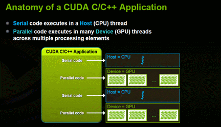</P>
<P STYLE="page-break-inside: avoid"><FONT COLOR="#1f497d"><FONT FACE="Cambria, serif"><FONT SIZE=2><I><B>Figure
16</B></I></FONT></FONT></FONT><FONT COLOR="#1f497d"><FONT FACE="Cambria, serif"><FONT SIZE=2><I>
– </I></FONT></FONT></FONT><FONT COLOR="#1f497d"><FONT FACE="Cambria, serif"><FONT SIZE=2><I><B>Anatomy
of CUDA C Program</B></I></FONT></FONT></FONT><FONT COLOR="#1f497d"><FONT FACE="Cambria, serif"><FONT SIZE=2><I>
Nvidia, 2012: 32.</I></FONT></FONT></FONT> 
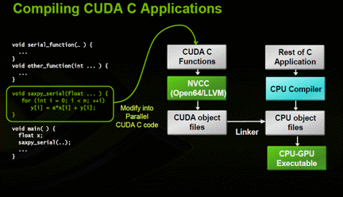</P>
<P STYLE="page-break-inside: avoid"><FONT COLOR="#1f497d"><FONT FACE="Cambria, serif"><FONT SIZE=2><I><B>Figure
17</B></I></FONT></FONT></FONT><FONT COLOR="#1f497d"><FONT FACE="Cambria, serif"><FONT SIZE=2><I>
– </I></FONT></FONT></FONT><FONT COLOR="#1f497d"><FONT FACE="Cambria, serif"><FONT SIZE=2><I><B>Compilation
of CUDA C Program</B></I></FONT></FONT></FONT><FONT COLOR="#1f497d"><FONT FACE="Cambria, serif"><FONT SIZE=2><I>
Nvidia, 2012: 33.</I></FONT></FONT></FONT></P>
<P STYLE="page-break-inside: avoid"><BR>
</P>
<H1 CLASS="western" STYLE="page-break-inside: avoid"><A NAME="__RefHeading__4258_102278096"></A><A NAME="_Toc402117960"></A>
A More Complex CUDA C Program: Model Optimization in Finance</H1>
<H2 CLASS="western"><A NAME="__RefHeading__4260_102278096"></A><A NAME="_Toc402117961"></A>
A Primer in Finance &amp; Building Models – The “Martians” Have
Landed</H2>
<P STYLE="page-break-inside: avoid"><FONT FACE="Cambria, serif">	The
CUDA functions and programs demonstrated so far are simple in nature.
 This is well and good, but we really want to test how CUDA can speed
up a more complex program.  In science and finance, we are often
dealing with models of the world and trying to speed up intensive
computations.  To do this, we should build a simple model that has
many iterations and calculations and run it on the CPU (via C) as
well as on the GPU (via CUDA C).  We want to determine the benefits
of using the CPU, alone, as well as using the CPU along with the GPU
in hybrid fashion.  We will build a trading model in finance in C as
well as CUDA C, so, there will be two versions here.  Finance may not
be socially useful, but it is still intellectually challenging since
“beating” the market on a risk-adjusted, consistent basis is very
difficult to do without cheating – we are simply using our brains
and probability theory here instead of relying on “insider”
information or a legalized version of “front-running” (e.g.,
high-frequency trading via “flash” quotes).  Some enjoy
cross-word puzzles while others enjoy finding patterns in the market.</FONT></P>
<P STYLE="page-break-inside: avoid"><FONT FACE="Cambria, serif">	Let’s
take a step back and think about what a ‘model’ is.  It is also
helpful to give a brief primer in finance so the reader has some
context as to what we’re striving to accomplish in this
demonstration.  A model is nothing more than a simplistic view of the
world that describes some event.  The main components of a model are
typically referred to as “</FONT><FONT FACE="Cambria, serif"><B>factors</B></FONT><FONT FACE="Cambria, serif">”
or variables.  That is, we want to try and find factors that are
helpful in describing some state of the world.  We could use the
computer to sift through thousands of potential factors and specify
the relevant variables – this is referred to loosely as “machine
learning” (or data mining) and techniques like neural nets (ANN)
and regressions (PLS) are of this type.  However, we could also
observe the world and then specify the factors, ourselves, via
experience and then test their usefulness.  That is what we’ll do
here. </FONT>
</P>
<P STYLE="page-break-inside: avoid"><FONT FACE="Cambria, serif">	Models
are often described in mathematical form.  Thinking back to a
regression equation from grammar school, we could have:  </FONT><FONT COLOR="#1f497d"><FONT FACE="Cambria, serif"><B>y
= X * w +</B></FONT></FONT><FONT COLOR="#1f497d"><FONT FACE="Cambria, serif">
</FONT></FONT><FONT FACE="Cambria, serif">….so, ‘</FONT><FONT FACE="Cambria, serif"><B>X</B></FONT><FONT FACE="Cambria, serif">’
is the factor or variable here describing ‘y’ while ‘w’ is
the weight or probability of ‘X’.  However, we don’t have use
math to describe our model – we could also use logic or conditional
language such as “</FONT><FONT COLOR="#1f497d"><FONT FACE="Cambria, serif"><I><B>IF
X THEN Y…</B></I></FONT></FONT><FONT FACE="Cambria, serif">” –
this type of language is intuitive and well-suited to programming
since computer code is also written in pseudo-language.  In finance,
we typically mean:  </FONT><FONT COLOR="#1f497d"><FONT FACE="Cambria, serif"><I><B>IF
CONDITION X THEN EXCESS RETURNS ON Y</B></I></FONT></FONT><FONT FACE="Cambria, serif">
(e.g., the implicit modeling or prediction of RETURNS on a stock or
security).  So, we are “relaxing” math constraints here and will
describe (and program) our model in conditional language.  This
“less” precise approach affords us more flexibility to test
“fuzzier” factors we might not have initially envisioned via the
strict math method.  In fact, this type of approach is often referred
to as “fuzzy logic” in that it can be “loose” or imprecise.  </FONT>
</P>
<P STYLE="page-break-inside: avoid"><FONT FACE="Cambria, serif">Fuzzy
logic and set theory was pioneered in the last century by a brilliant
thinker named Kurt Gödel</FONT><A CLASS="sdfootnoteanc" NAME="sdfootnote4anc" HREF="#sdfootnote4sym"><SUP>4</SUP></A><FONT FACE="Cambria, serif">.
 Many brilliant thinkers emerged out of the collapsed
Austro-Hungarian after World War I including Gödel and it is
important to mention them since most of the tools we use today were
created by them – we owe a collective “tip of the hat” to this
group.  These thinkers laid the foundation for modern math and
physics as well as computers.  Humorously, this group made up of the
likes of John Von Neumann, Edward Teller and Gödel were often
referred to as the “Martians” since they were considered so smart
that it was if they came from another planet</FONT><A CLASS="sdfootnoteanc" NAME="sdfootnote5anc" HREF="#sdfootnote5sym"><SUP>5</SUP></A><FONT FACE="Cambria, serif">.
 It could be argued that modern generations have not come as far
since we have not developed new fields in math or science though we
have more to go on via computing power.  Remember also that the last
large space operation occurred in the 1960’s when von Braun and his
rocket scientists sent us to the moon – a remarkable feat
considering the limited computing power at the time compared to
nowadays. </FONT>
</P>
<P STYLE="page-break-inside: avoid"><FONT FACE="Cambria, serif">In
the 1931, Gödel published a set of logical theories including the
“</FONT><FONT FACE="Cambria, serif"><B>incompleteness theorem</B></FONT><FONT FACE="Cambria, serif">”.
 At the time, it was trendy for both mathematicians and physicists to
tinker in philosophy.  In fact, thinkers like Bertrand Russell at
Cambridge University were actually trying to make philosophy a
science by applying various rigorous disciplines.  Namely, Russell
and several others were trying to create a “perfect” human
language with no ambiguities based on Boolean logic and mathematics</FONT><A CLASS="sdfootnoteanc" NAME="sdfootnote6anc" HREF="#sdfootnote6sym"><SUP>6</SUP></A><FONT FACE="Cambria, serif">.
 The idea was that one could represent linguistic expressions as
mathematical conditions with binary (e.g., true-or-false) outcomes
and, therefore, switch back-and-forth between the two modes of
expression.  Today, this endeavor might seem trite or foolish, but
the hope was that a clear language could rid the world of
misunderstanding and suffering.  A mathematician, himself, Gödel
came along and “wrecked” this logical quest though Wittgenstein
also made some contributions to the cause.  With the “incompleteness
theorem”, Gödel demonstrated how a mathematical function can be
logically constructed in language and vice-versa, but still remain
improvable though simultaneously consistent or rational.  So, he
demonstrated how something logical could still end up being circular
or incomplete in some sense (e.g., always lacking or imperfect).  The
long, formal proof of this theorem is beyond the scope of this study,
but let it suffice that the two main points are that if a system is
consistent or logical, then it cannot be complete and its axioms
cannot be proven within the system.  With one master stroke, Gödel
basically pushed “back” math, physics and philosophy into “grey”
space despite the best efforts of thinkers like Russell to make these
disciplines binary or “black-and-white”.   So, Gödel brought
back ambiguity and made it “okay”, so to speak, since he showed
that statements that are improvable can still have meaning or
consistency.  Since he used both math and language to illustrate his
proof, his findings could not be refuted by mathematicians and
philosophers, alike, which is why they had such far-reaching
implications.  </FONT>
</P>
<P STYLE="page-break-inside: avoid"><FONT FACE="Cambria, serif">This
theme of “greyness” or fuzziness is important because it relates
back to our model in finance.  </FONT><FONT FACE="Cambria, serif">Loosely
speaking, the word “fuzzy” basically implies that something has
meaning or usefulness though it is ambiguous.  Mapping this theme
into logic or probability theory, “fuzzy” means that something is
not </FONT><FONT FACE="Cambria, serif"><B>true</B></FONT><FONT FACE="Cambria, serif">
or </FONT><FONT FACE="Cambria, serif"><B>false</B></FONT><FONT FACE="Cambria, serif">
in a strict sense, but rather has a degree of truth or consistency
between </FONT><FONT FACE="Cambria, serif"><B>0</B></FONT><FONT FACE="Cambria, serif">
and </FONT><FONT FACE="Cambria, serif"><B>1</B></FONT><FONT FACE="Cambria, serif">.
 So, a statement has a probability or outcome expressed as an
interval or percentage between the binary levels of 0 and 1. 
Essentially, fuzzy logic implies a lack of precision and is a matter
of degree or range, instead, which is very relevant to human language
via conditional statements.  It is as if to admit that there is only
a “sense” of the truth in human affairs which are often complex. 
Imagine someone making a stock market prediction and framing it as a
matter of probability rather than certainty which seems prudent,
since, it is so difficult to make prognostications about the future. 
A typical fuzzy statement is the following:  “</FONT><FONT FACE="Cambria, serif"><I><B>Unexpected
results of government reports cause big moves in the stock market</B></I></FONT><FONT FACE="Cambria, serif">”.
 Intuitively, this statement seems somewhat true or meaningful though
it is not exactly quantified and, hence, ambiguous.  This is the type
of expression or outcome </FONT><FONT FACE="Cambria, serif">Gödel</FONT><FONT FACE="Cambria, serif">
was trying to describe in his proof.  Now imagine a computer trying
to process the statements “cold, colder, coldest”.  Though these
words have some “rough” meaning to humans, computers cannot
quantify these expressions unless a range of temperatures (e.g., a
“fuzzy” interval) describing each subset or word is also
supplied.  More formally in 1965, Lotfi Zadeh mathematically
described a “fuzzy” set as a pair (</FONT><FONT FACE="Cambria, serif"><B>A,m</B></FONT><FONT FACE="Cambria, serif">)
where </FONT><FONT FACE="Cambria, serif"><B>A</B></FONT><FONT FACE="Cambria, serif">
is a set and </FONT><FONT FACE="Cambria, serif"><B>m</B></FONT><FONT FACE="Cambria, serif">
: </FONT><FONT FACE="Cambria, serif"><B>A  [0,1]</B></FONT><A CLASS="sdfootnoteanc" NAME="sdfootnote7anc" HREF="#sdfootnote7sym"><SUP>7</SUP></A><FONT FACE="Cambria, serif">.
 A fuzzy set or interval of a continuous function can also be
written:  </FONT>
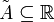<FONT FACE="Cambria, serif"><SPAN LANG="en">.
 </SPAN></FONT><FONT FACE="Cambria, serif">In terms of modeling, it’s
more useful to think of a fuzzy set in the form </FONT><FONT FACE="Cambria, serif"><B>A
</B></FONT><B>●</B><FONT FACE="Cambria, serif"><B> R = B</B></FONT><FONT FACE="Cambria, serif">
where A and B are fuzzy sets and </FONT><FONT FACE="Cambria, serif"><B>R</B></FONT><FONT FACE="Cambria, serif">
is a fuzzy “relation” – A </FONT>●<FONT FACE="Cambria, serif">
R stands for the composition A with R</FONT><A CLASS="sdfootnoteanc" NAME="sdfootnote8anc" HREF="#sdfootnote8sym"><SUP>8</SUP></A><FONT FACE="Cambria, serif">.
 So, what does this mean?  It means that though sets A and B are
originally independent, they might be probabilistically connected
through </FONT><FONT FACE="Cambria, serif"><B>R</B></FONT><FONT FACE="Cambria, serif">,
the fuzzy relation, by one element in both sets.  It is like saying A
and B are independent, but that they could also be probabilistically
related to each other via R – there is a sense of “fuzziness”
or ambiguity here.  </FONT>
</P>
<P STYLE="page-break-inside: avoid"><A NAME="_GoBack"></A><FONT FACE="Cambria, serif">Now
we have fuzzy logic under our belts, let’s go ahead and specify our
fuzzy model.  Note that we will not formally or explicitly define our
model and its factors via math, but do this implicitly, instead, via
language.  From observations and experience, we know that financial
markets get interesting at the extremes.  What does “extreme”
mean?  In terms of price action, this idea pertains to when markets
get </FONT><FONT FACE="Cambria, serif"><B>overbought</B></FONT><FONT FACE="Cambria, serif">
(e.g., price has risen very high) or </FONT><FONT FACE="Cambria, serif"><B>oversold</B></FONT><FONT FACE="Cambria, serif">
(e.g., price has dropped very low).  So, we want to build a simple
model that can give us some insight into what happens when prices
reach extremes.  Should we buy on strength or “momentum” when
prices are very high and overbought?  Or, should we sell short in a
kind of counter-trend or </FONT><FONT FACE="Cambria, serif"><B>mean-reversion</B></FONT><FONT FACE="Cambria, serif">
trade?  Note that this relates to human behavior to some degree since
people often engage in “crowding” actions akin to
“fear-and-greed” cycles.  So, this model will also have a
behavioral edge as well as underpinnings to fuzzy logic.  </FONT>
</P>
<P STYLE="page-break-inside: avoid"><FONT FACE="Cambria, serif">To
discover more, we must first find a way to measure extremes.  From
experience, we will use a statistical “trick” or tool called
“</FONT><FONT FACE="Cambria, serif"><B>Z-scores</B></FONT><FONT FACE="Cambria, serif">”.
 A z-score is simply defined as:  </FONT><FONT COLOR="#1f497d"><FONT FACE="Cambria, serif"><B>z
= (a – ā)/σ</B></FONT></FONT><FONT FACE="Cambria, serif">.  So,
take today’s price for a security and subtract from it a
moving-average price and then divide by the standard deviation (or
volatility) of the time series.  At any given time, this measure will
tell us how many standard deviations “</FONT><FONT FACE="Cambria, serif"><B>rich</B></FONT><FONT FACE="Cambria, serif">”
or “</FONT><FONT FACE="Cambria, serif"><B>cheap</B></FONT><FONT FACE="Cambria, serif">”
the current price is when compared to the average price.  Sounds
simple, but remember that we already have two parameters of this
function – a parameter is simply an input into a function.  Namely,
we have </FONT><FONT FACE="Cambria, serif"><B>length</B></FONT><FONT FACE="Cambria, serif">
and a suitable cutoff level or fuzzy </FONT><FONT FACE="Cambria, serif"><B>range</B></FONT><FONT FACE="Cambria, serif">
that defines ‘rich’ or ‘cheap’.  So, our trading rules
becomes:  </FONT><FONT COLOR="#1f497d"><FONT FACE="Cambria, serif"><B>IF
Z-SCORE TODAY IS &gt;= Z-SCORE RANGE THEN BUY</B></FONT></FONT><FONT COLOR="#1f497d"><FONT FACE="Cambria, serif">
</FONT></FONT><FONT FACE="Cambria, serif">(and vice-versa for SELL
trades).  From testing and experience, we happen to know that “going
with the market” (instead of fighting it) yields better results –
so, this type of model will be a </FONT><FONT FACE="Cambria, serif"><B>momentum</B></FONT><FONT FACE="Cambria, serif">
model since we are simply reacting to and ‘going with’ the recent
trend in prices.  Notice also that we only care about price here –
we don’t care about </FONT><FONT FACE="Cambria, serif"><B>exogenous</B></FONT><FONT FACE="Cambria, serif">,
fundamental variables like GDP (Gross Domestic Product).  So, we are
</FONT><FONT FACE="Cambria, serif"><B>keying</B></FONT><FONT FACE="Cambria, serif">
off “price action” to make a formulation about trading on the
price of a security – there are no abstract levels of determination
here since we are studying price to take action on price, itself. 
This type of model is often referred to as a technical or price-based
model and is </FONT><FONT FACE="Cambria, serif"><B>endogenous</B></FONT><FONT FACE="Cambria, serif">.
 </FONT>
</P>
<P STYLE="page-break-inside: avoid"><FONT FACE="Cambria, serif">So,
we have a relatively simple model here with one implicit factor
called z-score.  However, we’ll need to test various values to
determine the optimal parameters of the model – length and z-score
range.  This will involve combinatorial math.  Let’s say we have 3
possible inputs for these 2 parameters: {</FONT><FONT FACE="Cambria, serif"><B>1,
2, 3</B></FONT><FONT FACE="Cambria, serif">} for z-score ranges and
{</FONT><FONT FACE="Cambria, serif"><B>21, 34, 55</B></FONT><FONT FACE="Cambria, serif">}
for moving-average lengths – that is </FONT><FONT FACE="Cambria, serif"><B>3</B></FONT><SUP><FONT FACE="Cambria, serif"><B>2</B></FONT></SUP><FONT FACE="Cambria, serif">
combinations or 9 in total.  Models can often have 2, 3 or even 4
factors – so we could easily have </FONT><FONT FACE="Cambria, serif"><B>3</B></FONT><SUP><FONT FACE="Cambria, serif"><B>4
</B></FONT></SUP><FONT FACE="Cambria, serif">or 81 combinations for
testing.  This means for each security, we must test </FONT><FONT FACE="Cambria, serif"><B>all</B></FONT><FONT FACE="Cambria, serif">
combinations over each time period to find the best one.  This is
called “</FONT><FONT FACE="Cambria, serif"><B>exhaustive</B></FONT><FONT FACE="Cambria, serif">
optimization” since we are testing all combinations – </FONT><FONT FACE="Cambria, serif"><B>genetic
</B></FONT><FONT FACE="Cambria, serif">optimization is faster, but
there is no guarantee of finding the best result.  What is the ‘</FONT><FONT FACE="Cambria, serif"><B>best</B></FONT><FONT FACE="Cambria, serif">’
one?  In finance, this is often called lambda, </FONT><FONT FACE="Cambria, serif"><B>λ</B></FONT><FONT FACE="Cambria, serif">,
or the Sharpe ratio:  </FONT><FONT FACE="Cambria, serif"><B>μ/</B></FONT><FONT FACE="Cambria, serif"><B>σ</B></FONT><FONT FACE="Cambria, serif">
(the average return over the time period divided by the volatility
over the same time period).  This is not to be confused with lambda
or “half-life” from physics.  There is an old joke that if your
math is not good enough, you leave science and go into finance.  All
jokes aside, finance does indeed borrow a lot from physics – delta,
gamma, lambda and omega are all used in option trading besides the
fact that the Black-Scholes pricing equation (for options) was
derived from the heat-transfer equation in physics (e.g., Ito’s
Lemma).  So, we’ll have to run all these combinations and then
store the best combination for use later in the model for each
security.  So, 30 securities (though we could easily have more)
multiplied by 9 combinations is a total of 270 optimizations.  We can
begin to see that the amount of computation is piling up here.  </FONT>
</P>
<P STYLE="page-break-inside: avoid"><FONT FACE="Cambria, serif">To
add more realism to this model testing, we’ll also have to repeat
this optimization over-and-over for each time period on each
security.  So, as we move through time, our optimization process
becomes a “rolling” optimization.  We must look “back” and
test the best possible parameter combination and then use that one
for the next period forward to derive unbiased model returns (e.g.,
“profit-and-loss”) for each security.  The “look back” period
is often referred to as an “</FONT><FONT FACE="Cambria, serif"><B>in-sample</B></FONT><FONT FACE="Cambria, serif">”
test while the next one forward is called an “</FONT><FONT FACE="Cambria, serif"><B>out-of-sample</B></FONT><FONT FACE="Cambria, serif">”
test (e.g., “ex-ante” versus “ex-post”).  Remember that once
we’ve found the best parameter combination on a security, we cannot
go back in a time machine and trade off these results – so, we’ll
simply hold these parameters constant and use them for the next
period forward in terms of trading and results.  Since this model
will be re-optimizing and </FONT><FONT FACE="Cambria, serif"><B>updating</B></FONT><FONT FACE="Cambria, serif">
with the market, it is also a kind of learning model or </FONT><FONT FACE="Cambria, serif"><B>DLM</B></FONT><FONT FACE="Cambria, serif">
(Dynamic Learning Model).  The world of finance has been waiting
patiently for the physicists to find the “time machine” model,
but nothing has been found as of yet though quantum theory suggests
this might be possible.  This concept can be confusing and is a
common mistake amongst modelers so let’s draw a timeline depicting
this </FONT><FONT FACE="Cambria, serif"><B>rolling</B></FONT><FONT FACE="Cambria, serif">
optimization – here we are fitting parameters (for z-score) on the
last 5 years and then repeating this process every year (or
re-optimizing in </FONT><FONT FACE="Cambria, serif"><B>steps</B></FONT><FONT FACE="Cambria, serif">
of 1): </FONT>
</P>
<P ALIGN=LEFT STYLE="widows: 1"><FONT COLOR="#4f81bd"><FONT FACE="Cambria, serif"><FONT SIZE=4><I><FONT SIZE=2><B>Exhibit
4 – Rolling Optimization: In-Sample (Blue) vs. Out-of-Sample
(Black)</B></FONT><FONT SIZE=2> Author, 2013.</FONT></I></FONT></FONT></FONT></P>
<P STYLE="page-break-inside: avoid">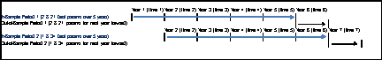</P>
<P STYLE="page-break-inside: avoid"><FONT FACE="Cambria, serif">Considering
many financial time series (in the futures markets) have an average
length of at least 39 years, than mean 35 in-sample optimizations in
total.  So, now we have [</FONT><FONT FACE="Cambria, serif"><B>35
periods * 9 combinations * 30 securities</B></FONT><FONT FACE="Cambria, serif">]
equals </FONT><FONT FACE="Cambria, serif"><B>9,450</B></FONT><FONT FACE="Cambria, serif">
optimizations/combinations in total.  Even though we have a simple
1-factor model, the amount of calculations increases exponentially. 
A more complex model could have [</FONT><FONT FACE="Cambria, serif"><B>35
periods * 81 combinations * 30 securities</B></FONT><FONT FACE="Cambria, serif">]
equals </FONT><FONT FACE="Cambria, serif"><B>85,050</B></FONT><FONT FACE="Cambria, serif">
optimizations/combinations in total.  This amount of computation will
easily overwhelm any CPU (including quad-cores) on a workstation or
desktop which is really why we need GPU’s here as well as multiple
workstations (and GPU’s).  In the real world, no model is perfect
since it is merely a simple representation of the world.  Therefore,
it is common in finance to run multiple models </FONT><FONT FACE="Cambria, serif"><B>simultaneously</B></FONT><FONT FACE="Cambria, serif">
in order to diversify the portfolio in an extreme sense.  Instead of
diversifying a portfolio of stocks according to finance theory, take
this theme a level </FONT><FONT FACE="Cambria, serif"><B>higher</B></FONT><FONT FACE="Cambria, serif">
and imagine becoming a portfolio manager of models (instead of just
securities).  Now envision this:  [</FONT><FONT FACE="Cambria, serif"><B>35
periods * 81 combinations * 30 securities * 30 models</B></FONT><FONT FACE="Cambria, serif">]
= </FONT><FONT FACE="Cambria, serif"><B>2,551,500</B></FONT><FONT FACE="Cambria, serif">
optimizations/combinations in total.  Typically, re-optimization is
done every week instead of every year like the example above (e.g.,
</FONT><FONT FACE="Cambria, serif"><B>smaller steps</B></FONT><FONT FACE="Cambria, serif">)
– </FONT><FONT FACE="Cambria, serif"><I>Houston we have a problem</I></FONT><FONT FACE="Cambria, serif">!
 Hopefully, everyone gets the gist of the computational challenges in
the world of finance and science. </FONT>
</P>
<H2 CLASS="western"><A NAME="__RefHeading__4262_102278096"></A><A NAME="_Toc402117962"></A>
An Overview of the Model Program Flow, Memory &amp; Process</H2>
<P STYLE="page-break-inside: avoid"><FONT FACE="Cambria, serif">	Since
there are thousands of line of code between the CPU and GPU versions
of the model program, it is impractical to highlight all the code
here.  However, here are some highlights as well as some general
comments on the process:</FONT></P>
<UL>
	<LI><P STYLE="page-break-inside: avoid"><FONT COLOR="#1f497d"><FONT FACE="Cambria, serif"><FONT SIZE=2>It’s
	a good habit to have all functions in a utility header or source
	file (utility.h or utility.c) and then include this in the </FONT></FONT></FONT><FONT COLOR="#1f497d"><FONT FACE="Cambria, serif"><FONT SIZE=2><B>MAIN</B></FONT></FONT></FONT><FONT COLOR="#1f497d"><FONT FACE="Cambria, serif"><FONT SIZE=2>
	PROGRAM </FONT></FONT></FONT><FONT COLOR="#1f497d"><FONT FACE="Cambria, serif"><FONT SIZE=2><B>(#include
	“utility.h”)</B></FONT></FONT></FONT><FONT COLOR="#1f497d"><FONT FACE="Cambria, serif"><FONT SIZE=2>
	– put any needed files inside the project folder so there is no
	problem with “paths” – be sure to include the </FONT></FONT></FONT><FONT COLOR="#1f497d"><FONT FACE="Cambria, serif"><FONT SIZE=2><B>cuda_runtime.h</B></FONT></FONT></FONT><FONT COLOR="#1f497d"><FONT FACE="Cambria, serif"><FONT SIZE=2>
	as well since this is most important and is a requirement.  </FONT></FONT></FONT>
	</P>
	<UL>
		<LI><P STYLE="page-break-inside: avoid"><FONT COLOR="#1f497d"><FONT FACE="Cambria, serif"><FONT SIZE=2>Instead
		of making a new CUDA project from scratch, it can be easier to take
		an example from Nvidia and then customize it further.  To start one
		from scratch, we must be sure to change the </FONT></FONT></FONT><FONT COLOR="#1f497d"><FONT FACE="Cambria, serif"><FONT SIZE=2><B>BUILD
		CUSTOMIZATION</B></FONT></FONT></FONT><FONT COLOR="#1f497d"><FONT FACE="Cambria, serif"><FONT SIZE=2>
		in the project by selecting the CUDA/NVCC compiler.  Also, the
		following library paths must be added in under the project
		properties:  </FONT></FONT></FONT><FONT COLOR="#1f497d"><FONT FACE="Cambria, serif"><FONT SIZE=2><B>cudart.lib</B></FONT></FONT></FONT><FONT COLOR="#1f497d"><FONT FACE="Cambria, serif"><FONT SIZE=2>
		under LINKER/INPUT and </FONT></FONT></FONT><FONT COLOR="#1f497d"><FONT FACE="Cambria, serif"><FONT SIZE=2><B>$(CUDA_PATH)</B></FONT></FONT></FONT><FONT COLOR="#1f497d"><FONT FACE="Cambria, serif"><FONT SIZE=2>
		under LINKER/GENERAL</FONT></FONT></FONT></P>
	</UL>
	<LI><P STYLE="page-break-inside: avoid"><FONT COLOR="#1f497d"><FONT FACE="Cambria, serif"><FONT SIZE=2>As
	for code, in order to get the combination of parameters, we’ll
	need to use a series of outer/inner </FONT></FONT></FONT><FONT COLOR="#1f497d"><FONT FACE="Cambria, serif"><FONT SIZE=2><B>for-next</B></FONT></FONT></FONT><FONT COLOR="#1f497d"><FONT FACE="Cambria, serif"><FONT SIZE=2>
	loops.  In the example here, there are </FONT></FONT></FONT><FONT COLOR="#1f497d"><FONT FACE="Cambria, serif"><FONT SIZE=2><B>4</B></FONT></FONT></FONT><FONT COLOR="#1f497d"><FONT FACE="Cambria, serif"><FONT SIZE=2>
	“</FONT></FONT></FONT><FONT COLOR="#1f497d"><FONT FACE="Cambria, serif"><FONT SIZE=2><B>for-next</B></FONT></FONT></FONT><FONT COLOR="#1f497d"><FONT FACE="Cambria, serif"><FONT SIZE=2>”
	loops:  </FONT></FONT></FONT><FONT COLOR="#1f497d"><FONT FACE="Cambria, serif"><FONT SIZE=2><B>LOOP
	BY MARKET &gt;&gt;&gt; LOOP BY TIME PERIOD &gt;&gt;&gt; LOOP BY
	FIRST PARAMETER &gt;&gt;&gt; LOOP BY SECOND PARAMETER…</B></FONT></FONT></FONT></P>
	<UL>
		<LI><P STYLE="page-break-inside: avoid"><FONT COLOR="#1f497d"><FONT FACE="Cambria, serif"><FONT SIZE=2>We’ll
		run an optimization based on the previous rolling </FONT></FONT></FONT><FONT COLOR="#1f497d"><FONT FACE="Cambria, serif"><FONT SIZE=2><B>6</B></FONT></FONT></FONT><FONT COLOR="#1f497d"><FONT FACE="Cambria, serif"><FONT SIZE=2>
		years and then “re-fit” every year or in steps of </FONT></FONT></FONT><FONT COLOR="#1f497d"><FONT FACE="Cambria, serif"><FONT SIZE=2><B>1
		</B></FONT></FONT></FONT><FONT COLOR="#1f497d"><FONT FACE="Cambria, serif"><FONT SIZE=2>(though
		this is variable by the user via #define)</FONT></FONT></FONT></P>
		<LI><P STYLE="page-break-inside: avoid"><FONT COLOR="#1f497d"><FONT FACE="Cambria, serif"><FONT SIZE=2>We’ll
		store the best parameter combination and then use it for the NEXT
		PERIOD FORWARD so that our results are NOT biased – we want to
		collect OUT-OF-SAMPLE results here – remember, we cannot go back
		in a time machine and use the parameters we discovered today for
		yesterday’s trading – biasing returns with IN-SAMPLE
		information is a common mistake.  If we do so, any model can look
		good given the amount of computing power we have nowadays (e.g.,
		the computer can always find some setting or parameter that looks
		like it “works”)…</FONT></FONT></FONT></P>
		<LI><P STYLE="page-break-inside: avoid"><FONT COLOR="#1f497d"><FONT FACE="Cambria, serif"><FONT SIZE=2>For
		CUDA C, try to use “page-locked” or “</FONT></FONT></FONT><FONT COLOR="#1f497d"><FONT FACE="Cambria, serif"><FONT SIZE=2><B>pinned</B></FONT></FONT></FONT><FONT COLOR="#1f497d"><FONT FACE="Cambria, serif"><FONT SIZE=2>”
		memory as much as possible for speed gains – store CPU variables
		or pointers using </FONT></FONT></FONT><FONT COLOR="#1f497d"><FONT FACE="Cambria, serif"><FONT SIZE=2><B>CudaAllocHost</B></FONT></FONT></FONT><FONT COLOR="#1f497d"><FONT FACE="Cambria, serif"><FONT SIZE=2>
		(instead of </FONT></FONT></FONT><FONT COLOR="#1f497d"><FONT FACE="Cambria, serif"><FONT SIZE=2><B>MALLOC</B></FONT></FONT></FONT><FONT COLOR="#1f497d"><FONT FACE="Cambria, serif"><FONT SIZE=2>)
		so that the CPU and GPU can more quickly transfer data
		back-and-forth.  Remember, transferring data between the CPU and
		GPU is the </FONT></FONT></FONT><FONT COLOR="#1f497d"><FONT FACE="Cambria, serif"><FONT SIZE=2><B>SLOWEST</B></FONT></FONT></FONT><FONT COLOR="#1f497d"><FONT FACE="Cambria, serif"><FONT SIZE=2>
		operation (or biggest “bottle-neck”) so try to do so sparingly
		by running as many calculations on the GPU before sending the
		results back to the CPU.  Remember that the MAX MEMORY (DRAM) on
		ANY GPU is </FONT></FONT></FONT><FONT COLOR="#1f497d"><FONT FACE="Cambria, serif"><FONT SIZE=2><B>6
		GIGS</B></FONT></FONT></FONT><FONT COLOR="#1f497d"><FONT FACE="Cambria, serif"><FONT SIZE=2>
		so be mindful of large memory operations.  Here is a visualization
		of </FONT></FONT></FONT><FONT COLOR="#1f497d"><FONT FACE="Cambria, serif"><FONT SIZE=2><B>pinned</B></FONT></FONT></FONT><FONT COLOR="#1f497d"><FONT FACE="Cambria, serif"><FONT SIZE=2>
		versus </FONT></FONT></FONT><FONT COLOR="#1f497d"><FONT FACE="Cambria, serif"><FONT SIZE=2><B>non-pinned/pageable</B></FONT></FONT></FONT><FONT COLOR="#1f497d"><FONT FACE="Cambria, serif"><FONT SIZE=2>
		memory:</FONT></FONT></FONT></P>
	</UL>
</UL>
<P STYLE="page-break-inside: avoid">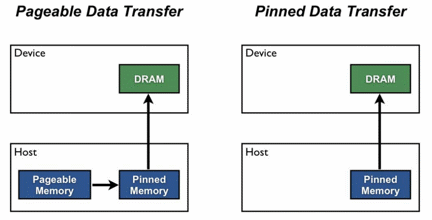</P>
<UL>
	<UL>
		<LI><P STYLE="page-break-inside: avoid"><FONT COLOR="#1f497d"><FONT FACE="Cambria, serif"><FONT SIZE=2>Also,
		depending on the capability of the video card, try to use
		</FONT></FONT></FONT><FONT COLOR="#1f497d"><FONT FACE="Cambria, serif"><FONT SIZE=2><B>ASYNCHRONOUS</B></FONT></FONT></FONT><FONT COLOR="#1f497d"><FONT FACE="Cambria, serif"><FONT SIZE=2>
		(overlapping) operations as much as possible – use
		</FONT></FONT></FONT><FONT COLOR="#1f497d"><FONT FACE="Cambria, serif"><FONT SIZE=2><B>cudaMemcpyAsync</B></FONT></FONT></FONT><FONT COLOR="#1f497d"><FONT FACE="Cambria, serif"><FONT SIZE=2>
		instead of </FONT></FONT></FONT><FONT COLOR="#1f497d"><FONT FACE="Cambria, serif"><FONT SIZE=2><B>cudaMemcpy</B></FONT></FONT></FONT><FONT COLOR="#1f497d"><FONT FACE="Cambria, serif"><FONT SIZE=2>.
		 This means that the CPU launches an operation on the GPU and does
		NOT have to wait for the GPU to finish and so the CPU simply moves
		on to the next operation (e.g., this type of memory/data transfer
		is not a “blocking” operation)</FONT></FONT></FONT></P>
		<LI><P STYLE="page-break-inside: avoid"><FONT COLOR="#1f497d"><FONT FACE="Cambria, serif"><FONT SIZE=2>Try
		using single-precision or </FONT></FONT></FONT><FONT COLOR="#1f497d"><FONT FACE="Cambria, serif"><FONT SIZE=2><B>FLOAT</B></FONT></FONT></FONT><FONT COLOR="#1f497d"><FONT FACE="Cambria, serif"><FONT SIZE=2>
		as much possible – don’t declare variables as DOUBLE – or,
		</FONT></FONT></FONT><FONT COLOR="#1f497d"><FONT FACE="Cambria, serif"><FONT SIZE=2><B>CAST
		</B></FONT></FONT></FONT><FONT COLOR="#1f497d"><FONT FACE="Cambria, serif"><FONT SIZE=2>them
		to FLOAT as you feed them to the GPU – the GPU is OPTIMIZED for
		SINGLE-PRECISION (whereas the CPU is geared for DOUBLE-PRECISION)
		so you’ll see up to </FONT></FONT></FONT><FONT COLOR="#1f497d"><FONT FACE="Cambria, serif"><FONT SIZE=2><B>6X</B></FONT></FONT></FONT><FONT COLOR="#1f497d"><FONT FACE="Cambria, serif"><FONT SIZE=2>
		the speed gains if you do this – after all, do we really need up
		to 16 decimals?  Be careful switching back-and-forth between FLOAT
		and DOUBLE since there can be problems with</FONT></FONT></FONT><FONT COLOR="#1f497d"><FONT FACE="Cambria, serif"><FONT SIZE=2><B>
		precision</B></FONT></FONT></FONT><FONT COLOR="#1f497d"><FONT FACE="Cambria, serif"><FONT SIZE=2>
		due to </FONT></FONT></FONT><FONT COLOR="#1f497d"><FONT FACE="Cambria, serif"><FONT SIZE=2><B>PROMOTION</B></FONT></FONT></FONT><FONT COLOR="#1f497d"><FONT FACE="Cambria, serif"><FONT SIZE=2>
		– use </FONT></FONT></FONT><FONT COLOR="#1f497d"><FONT FACE="Cambria, serif"><FONT SIZE=2><B>FLOAT
		LITERALS</B></FONT></FONT></FONT><FONT COLOR="#1f497d"><FONT FACE="Cambria, serif"><FONT SIZE=2>
		whenever possible to avoid this (e.g., </FONT></FONT></FONT><FONT COLOR="#1f497d"><FONT FACE="Cambria, serif"><FONT SIZE=2><B>constant
		= 1.0f</B></FONT></FONT></FONT><FONT COLOR="#1f497d"><FONT FACE="Cambria, serif"><FONT SIZE=2>
		instead of </FONT></FONT></FONT><FONT COLOR="#1f497d"><FONT FACE="Cambria, serif"><FONT SIZE=2><B>constant
		= 1.0</B></FONT></FONT></FONT><FONT COLOR="#1f497d"><FONT FACE="Cambria, serif"><FONT SIZE=2>)
		– also, be sure to use </FONT></FONT></FONT><FONT COLOR="#1f497d"><FONT FACE="Cambria, serif"><FONT SIZE=2><B>CudaMemset</B></FONT></FONT></FONT><FONT COLOR="#1f497d"><FONT FACE="Cambria, serif"><FONT SIZE=2>
		to initialize GPU variables to </FONT></FONT></FONT><FONT COLOR="#1f497d"><FONT FACE="Cambria, serif"><FONT SIZE=2><B>ZERO</B></FONT></FONT></FONT></P>
		<LI><P STYLE="page-break-inside: avoid"><FONT COLOR="#1f497d"><FONT FACE="Cambria, serif"><FONT SIZE=2>Try
		to use BLOCK sizes that are multiples of </FONT></FONT></FONT><FONT COLOR="#1f497d"><FONT FACE="Cambria, serif"><FONT SIZE=2><B>WARPS</B></FONT></FONT></FONT><FONT COLOR="#1f497d"><FONT FACE="Cambria, serif"><FONT SIZE=2>
		(e.g., 32 threads on most GPU devices) or half-warps for more
		efficient memory alignment and coalescing</FONT></FONT></FONT></P>
		<LI><P STYLE="page-break-inside: avoid"><FONT COLOR="#1f497d"><FONT FACE="Cambria, serif"><FONT SIZE=2>If
		you have multiple GPU’s or video cards, launch several GPU
		operations simultaneously (or </FONT></FONT></FONT><FONT COLOR="#1f497d"><FONT FACE="Cambria, serif"><FONT SIZE=2><B>concurrently</B></FONT></FONT></FONT><FONT COLOR="#1f497d"><FONT FACE="Cambria, serif"><FONT SIZE=2>)
		on various cards – this is called MULTI-STREAMING – this is not
		possible on most home setups due to hardware constraints</FONT></FONT></FONT></P>
	</UL>
</UL>
<H1 CLASS="western" STYLE="page-break-inside: avoid"><BR>
</H1>
<H2 CLASS="western"><A NAME="__RefHeading__4264_102278096"></A><A NAME="_Toc402117963"></A>
A Closer Look at the Model Program – Computer Code</H2>
<P STYLE="page-break-inside: avoid"><FONT FACE="Cambria, serif">	Here
we can see more complexity as opposed to the earlier examples in CUDA
C:</FONT></P>
<P ALIGN=LEFT STYLE="widows: 1"><FONT COLOR="#4f81bd"><FONT FACE="Cambria, serif"><FONT SIZE=4><I><FONT SIZE=2><B>Exhibit
5 – A Complex CUDA C Program: Trading Model</B></FONT><FONT SIZE=2>
Author, 2013.</FONT></I></FONT></FONT></FONT></P>
<P><FONT COLOR="#0000ff"><FONT FACE="Consolas, serif"><FONT SIZE=1 STYLE="font-size: 8pt">#include</FONT></FONT></FONT><FONT FACE="Consolas, serif"><FONT SIZE=1 STYLE="font-size: 8pt">
</FONT></FONT><FONT COLOR="#a31515"><FONT FACE="Consolas, serif"><FONT SIZE=1 STYLE="font-size: 8pt">&lt;stdio.h&gt;</FONT></FONT></FONT></P>
<P><FONT COLOR="#0000ff"><FONT FACE="Consolas, serif"><FONT SIZE=1 STYLE="font-size: 8pt">#include</FONT></FONT></FONT><FONT FACE="Consolas, serif"><FONT SIZE=1 STYLE="font-size: 8pt">
</FONT></FONT><FONT COLOR="#a31515"><FONT FACE="Consolas, serif"><FONT SIZE=1 STYLE="font-size: 8pt">&lt;math.h&gt;</FONT></FONT></FONT></P>
<P><FONT COLOR="#0000ff"><FONT FACE="Consolas, serif"><FONT SIZE=1 STYLE="font-size: 8pt">#include</FONT></FONT></FONT><FONT FACE="Consolas, serif"><FONT SIZE=1 STYLE="font-size: 8pt">
</FONT></FONT><FONT COLOR="#a31515"><FONT FACE="Consolas, serif"><FONT SIZE=1 STYLE="font-size: 8pt">&lt;io.h&gt;</FONT></FONT></FONT></P>
<P><FONT COLOR="#0000ff"><FONT FACE="Consolas, serif"><FONT SIZE=1 STYLE="font-size: 8pt">#include</FONT></FONT></FONT><FONT FACE="Consolas, serif"><FONT SIZE=1 STYLE="font-size: 8pt">
</FONT></FONT><FONT COLOR="#a31515"><FONT FACE="Consolas, serif"><FONT SIZE=1 STYLE="font-size: 8pt">&lt;stdlib.h&gt;</FONT></FONT></FONT></P>
<P><FONT COLOR="#0000ff"><FONT FACE="Consolas, serif"><FONT SIZE=1 STYLE="font-size: 8pt">#include</FONT></FONT></FONT><FONT FACE="Consolas, serif"><FONT SIZE=1 STYLE="font-size: 8pt">
</FONT></FONT><FONT COLOR="#a31515"><FONT FACE="Consolas, serif"><FONT SIZE=1 STYLE="font-size: 8pt">&lt;string.h&gt;</FONT></FONT></FONT><FONT FACE="Consolas, serif"><FONT SIZE=1 STYLE="font-size: 8pt">
</FONT></FONT>
</P>
<P><FONT COLOR="#0000ff"><FONT FACE="Consolas, serif"><FONT SIZE=1 STYLE="font-size: 8pt">#include</FONT></FONT></FONT><FONT FACE="Consolas, serif"><FONT SIZE=1 STYLE="font-size: 8pt">
</FONT></FONT><FONT COLOR="#a31515"><FONT FACE="Consolas, serif"><FONT SIZE=1 STYLE="font-size: 8pt">&lt;float.h&gt;</FONT></FONT></FONT></P>
<P><FONT COLOR="#0000ff"><FONT FACE="Consolas, serif"><FONT SIZE=1 STYLE="font-size: 8pt">#include</FONT></FONT></FONT><FONT FACE="Consolas, serif"><FONT SIZE=1 STYLE="font-size: 8pt">
</FONT></FONT><FONT COLOR="#a31515"><FONT FACE="Consolas, serif"><FONT SIZE=1 STYLE="font-size: 8pt">&quot;utility.h&quot;</FONT></FONT></FONT></P>
<P><FONT COLOR="#0000ff"><FONT FACE="Consolas, serif"><FONT SIZE=1 STYLE="font-size: 8pt">#include</FONT></FONT></FONT><FONT FACE="Consolas, serif"><FONT SIZE=1 STYLE="font-size: 8pt">
</FONT></FONT><FONT COLOR="#a31515"><FONT FACE="Consolas, serif"><FONT SIZE=1 STYLE="font-size: 8pt">&quot;utility.c&quot;</FONT></FONT></FONT></P>
<P><FONT COLOR="#0000ff"><FONT FACE="Consolas, serif"><FONT SIZE=1 STYLE="font-size: 8pt">#include</FONT></FONT></FONT><FONT FACE="Consolas, serif"><FONT SIZE=1 STYLE="font-size: 8pt">
</FONT></FONT><FONT COLOR="#a31515"><FONT FACE="Consolas, serif"><FONT SIZE=1 STYLE="font-size: 8pt">&lt;time.h&gt;</FONT></FONT></FONT></P>
<P><FONT COLOR="#0000ff"><FONT FACE="Consolas, serif"><FONT SIZE=1 STYLE="font-size: 8pt">#include</FONT></FONT></FONT><FONT FACE="Consolas, serif"><FONT SIZE=1 STYLE="font-size: 8pt">
</FONT></FONT><FONT COLOR="#a31515"><FONT FACE="Consolas, serif"><FONT SIZE=1 STYLE="font-size: 8pt">&lt;malloc.h&gt;</FONT></FONT></FONT></P>
<P><FONT COLOR="#0000ff"><FONT FACE="Consolas, serif"><FONT SIZE=1 STYLE="font-size: 8pt">#include</FONT></FONT></FONT><FONT FACE="Consolas, serif"><FONT SIZE=1 STYLE="font-size: 8pt">
</FONT></FONT><FONT COLOR="#a31515"><FONT FACE="Consolas, serif"><FONT SIZE=1 STYLE="font-size: 8pt">&lt;cuda_runtime.h&gt;</FONT></FONT></FONT></P>
<P><FONT COLOR="#0000ff"><FONT FACE="Consolas, serif"><FONT SIZE=1 STYLE="font-size: 8pt">#include</FONT></FONT></FONT><FONT FACE="Consolas, serif"><FONT SIZE=1 STYLE="font-size: 8pt">
</FONT></FONT><FONT COLOR="#a31515"><FONT FACE="Consolas, serif"><FONT SIZE=1 STYLE="font-size: 8pt">&lt;cuda_runtime_api.h&gt;</FONT></FONT></FONT></P>
<P><BR>
</P>
<P><FONT COLOR="#008000"><FONT FACE="Consolas, serif"><FONT SIZE=1 STYLE="font-size: 8pt">//Declaring
macros and constants in pre-processor - STEP A//INSERT NEW STUFF DOWN
HERE EACH TIME START SUB-FUNCTION******PRE-PROCESSOR AREA*******//</FONT></FONT></FONT></P>
<P><FONT COLOR="#0000ff"><FONT FACE="Consolas, serif"><FONT SIZE=1 STYLE="font-size: 8pt">#define</FONT></FONT></FONT><FONT FACE="Consolas, serif"><FONT SIZE=1 STYLE="font-size: 8pt">
ABS(X) (X&gt;=0?X:-X)</FONT></FONT></P>
<P><FONT COLOR="#0000ff"><FONT FACE="Consolas, serif"><FONT SIZE=1 STYLE="font-size: 8pt">#define</FONT></FONT></FONT><FONT FACE="Consolas, serif"><FONT SIZE=1 STYLE="font-size: 8pt">
MAX(X,Y) (X&gt;=Y?X:Y)</FONT></FONT><FONT COLOR="#0000ff"><FONT FACE="Consolas, serif"><FONT SIZE=1 STYLE="font-size: 8pt">
</FONT></FONT></FONT>
</P>
<P><FONT COLOR="#0000ff"><FONT FACE="Consolas, serif"><FONT SIZE=1 STYLE="font-size: 8pt">#define</FONT></FONT></FONT><FONT FACE="Consolas, serif"><FONT SIZE=1 STYLE="font-size: 8pt">
MIN(X,Y) (X&lt;=Y?X:Y)</FONT></FONT></P>
<P><FONT COLOR="#0000ff"><FONT FACE="Consolas, serif"><FONT SIZE=1 STYLE="font-size: 8pt">#define</FONT></FONT></FONT><FONT FACE="Consolas, serif"><FONT SIZE=1 STYLE="font-size: 8pt">
SIGN(X) (X&gt;=0?(X==0?0:1):-1)</FONT></FONT></P>
<P><FONT COLOR="#0000ff"><FONT FACE="Consolas, serif"><FONT SIZE=1 STYLE="font-size: 8pt">#define</FONT></FONT></FONT><FONT FACE="Consolas, serif"><FONT SIZE=1 STYLE="font-size: 8pt">
ROUND(X,Y) ((X&gt;=0?(X&lt;&lt;1)+Y:(X&lt;&lt;1)-Y)/(Y&lt;&lt;1))*Y </FONT></FONT>
</P>
<P><BR>
</P>
<P><FONT COLOR="#008000"><FONT FACE="Consolas, serif"><FONT SIZE=1 STYLE="font-size: 8pt">//Change
path below for UNIX &quot;c://usr&quot;</FONT></FONT></FONT></P>
<P><FONT COLOR="#0000ff"><FONT FACE="Consolas, serif"><FONT SIZE=1 STYLE="font-size: 8pt">#define</FONT></FONT></FONT><FONT FACE="Consolas, serif"><FONT SIZE=1 STYLE="font-size: 8pt">
PATH </FONT></FONT><FONT COLOR="#a31515"><FONT FACE="Consolas, serif"><FONT SIZE=1 STYLE="font-size: 8pt">&quot;C:\\&quot;</FONT></FONT></FONT><FONT FACE="Consolas, serif"><FONT SIZE=1 STYLE="font-size: 8pt">			</FONT></FONT></P>
<P><FONT COLOR="#0000ff"><FONT FACE="Consolas, serif"><FONT SIZE=1 STYLE="font-size: 8pt">#define</FONT></FONT></FONT><FONT FACE="Consolas, serif"><FONT SIZE=1 STYLE="font-size: 8pt">
LOOKBACK 1597	</FONT></FONT><FONT COLOR="#008000"><FONT FACE="Consolas, serif"><FONT SIZE=1 STYLE="font-size: 8pt">//
1597-987-610-377-144-89 fibos rolling optimization historical period</FONT></FONT></FONT></P>
<P><FONT COLOR="#0000ff"><FONT FACE="Consolas, serif"><FONT SIZE=1 STYLE="font-size: 8pt">#define</FONT></FONT></FONT><FONT FACE="Consolas, serif"><FONT SIZE=1 STYLE="font-size: 8pt">
STEP 377		</FONT></FONT><FONT COLOR="#008000"><FONT FACE="Consolas, serif"><FONT SIZE=1 STYLE="font-size: 8pt">//
or 89 fibos step forward in time period for next rolling optimization</FONT></FONT></FONT></P>
<P><FONT COLOR="#0000ff"><FONT FACE="Consolas, serif"><FONT SIZE=1 STYLE="font-size: 8pt">#define</FONT></FONT></FONT><FONT FACE="Consolas, serif"><FONT SIZE=1 STYLE="font-size: 8pt">
NUMI 27		</FONT></FONT><FONT COLOR="#008000"><FONT FACE="Consolas, serif"><FONT SIZE=1 STYLE="font-size: 8pt">//up
to 27 number of markets </FONT></FONT></FONT>
</P>
<P>   
</P>
<P><FONT FACE="Consolas, serif"><FONT SIZE=1 STYLE="font-size: 8pt">__global__
</FONT></FONT><FONT COLOR="#0000ff"><FONT FACE="Consolas, serif"><FONT SIZE=1 STYLE="font-size: 8pt">void</FONT></FONT></FONT><FONT FACE="Consolas, serif"><FONT SIZE=1 STYLE="font-size: 8pt">
kernelSim(</FONT></FONT><FONT COLOR="#0000ff"><FONT FACE="Consolas, serif"><FONT SIZE=1 STYLE="font-size: 8pt">float</FONT></FONT></FONT><FONT FACE="Consolas, serif"><FONT SIZE=1 STYLE="font-size: 8pt">
*zscores_d,</FONT></FONT><FONT COLOR="#0000ff"><FONT FACE="Consolas, serif"><FONT SIZE=1 STYLE="font-size: 8pt">float</FONT></FONT></FONT><FONT FACE="Consolas, serif"><FONT SIZE=1 STYLE="font-size: 8pt">
*rets_d,</FONT></FONT><FONT COLOR="#0000ff"><FONT FACE="Consolas, serif"><FONT SIZE=1 STYLE="font-size: 8pt">float</FONT></FONT></FONT><FONT FACE="Consolas, serif"><FONT SIZE=1 STYLE="font-size: 8pt">
*pnl_d,</FONT></FONT><FONT COLOR="#0000ff"><FONT FACE="Consolas, serif"><FONT SIZE=1 STYLE="font-size: 8pt">float</FONT></FONT></FONT><FONT FACE="Consolas, serif"><FONT SIZE=1 STYLE="font-size: 8pt">
*pos_d,</FONT></FONT><FONT COLOR="#0000ff"><FONT FACE="Consolas, serif"><FONT SIZE=1 STYLE="font-size: 8pt">int</FONT></FONT></FONT><FONT FACE="Consolas, serif"><FONT SIZE=1 STYLE="font-size: 8pt">
start,</FONT></FONT><FONT COLOR="#0000ff"><FONT FACE="Consolas, serif"><FONT SIZE=1 STYLE="font-size: 8pt">int</FONT></FONT></FONT><FONT FACE="Consolas, serif"><FONT SIZE=1 STYLE="font-size: 8pt">
stop,</FONT></FONT><FONT COLOR="#0000ff"><FONT FACE="Consolas, serif"><FONT SIZE=1 STYLE="font-size: 8pt">float</FONT></FONT></FONT><FONT FACE="Consolas, serif"><FONT SIZE=1 STYLE="font-size: 8pt">
zcut,</FONT></FONT><FONT COLOR="#0000ff"><FONT FACE="Consolas, serif"><FONT SIZE=1 STYLE="font-size: 8pt">int</FONT></FONT></FONT><FONT FACE="Consolas, serif"><FONT SIZE=1 STYLE="font-size: 8pt">
lens){</FONT></FONT></P>
<P>    
</P>
<P><FONT FACE="Consolas, serif"><FONT SIZE=1 STYLE="font-size: 8pt">	</FONT></FONT><FONT COLOR="#0000ff"><FONT FACE="Consolas, serif"><FONT SIZE=1 STYLE="font-size: 8pt">const</FONT></FONT></FONT><FONT FACE="Consolas, serif"><FONT SIZE=1 STYLE="font-size: 8pt">
</FONT></FONT><FONT COLOR="#0000ff"><FONT FACE="Consolas, serif"><FONT SIZE=1 STYLE="font-size: 8pt">float</FONT></FONT></FONT><FONT FACE="Consolas, serif"><FONT SIZE=1 STYLE="font-size: 8pt">
buy =1.00f;</FONT></FONT><FONT COLOR="#0000ff"><FONT FACE="Consolas, serif"><FONT SIZE=1 STYLE="font-size: 8pt">
</FONT></FONT></FONT>
</P>
<P><FONT FACE="Consolas, serif"><FONT SIZE=1 STYLE="font-size: 8pt">	</FONT></FONT><FONT COLOR="#0000ff"><FONT FACE="Consolas, serif"><FONT SIZE=1 STYLE="font-size: 8pt">const</FONT></FONT></FONT><FONT FACE="Consolas, serif"><FONT SIZE=1 STYLE="font-size: 8pt">
</FONT></FONT><FONT COLOR="#0000ff"><FONT FACE="Consolas, serif"><FONT SIZE=1 STYLE="font-size: 8pt">float</FONT></FONT></FONT><FONT FACE="Consolas, serif"><FONT SIZE=1 STYLE="font-size: 8pt">
sell=-1.00f;</FONT></FONT></P>
<P><FONT FACE="Consolas, serif"><FONT SIZE=1 STYLE="font-size: 8pt">	</FONT></FONT><FONT COLOR="#0000ff"><FONT FACE="Consolas, serif"><FONT SIZE=1 STYLE="font-size: 8pt">const</FONT></FONT></FONT><FONT FACE="Consolas, serif"><FONT SIZE=1 STYLE="font-size: 8pt">
</FONT></FONT><FONT COLOR="#0000ff"><FONT FACE="Consolas, serif"><FONT SIZE=1 STYLE="font-size: 8pt">float</FONT></FONT></FONT><FONT FACE="Consolas, serif"><FONT SIZE=1 STYLE="font-size: 8pt">
flat=0.00f;</FONT></FONT></P>
<P><BR>
</P>
<P>    <FONT COLOR="#008000"><FONT FACE="Consolas, serif"><FONT SIZE=1 STYLE="font-size: 8pt">//Thread
index</FONT></FONT></FONT></P>
<P>    <FONT FACE="Consolas, serif"><FONT SIZE=1 STYLE="font-size: 8pt">	</FONT></FONT><FONT COLOR="#0000ff"><FONT FACE="Consolas, serif"><FONT SIZE=1 STYLE="font-size: 8pt">unsigned</FONT></FONT></FONT><FONT FACE="Consolas, serif"><FONT SIZE=1 STYLE="font-size: 8pt">
</FONT></FONT><FONT COLOR="#0000ff"><FONT FACE="Consolas, serif"><FONT SIZE=1 STYLE="font-size: 8pt">int</FONT></FONT></FONT><FONT FACE="Consolas, serif"><FONT SIZE=1 STYLE="font-size: 8pt">
tid = blockDim.x * blockIdx.x + threadIdx.x;</FONT></FONT></P>
<P>    <FONT COLOR="#008000"><FONT FACE="Consolas, serif"><FONT SIZE=1 STYLE="font-size: 8pt">//Total
number of threads in execution grid</FONT></FONT></FONT></P>
<P><FONT FACE="Consolas, serif"><FONT SIZE=1 STYLE="font-size: 8pt">	</FONT></FONT><FONT COLOR="#0000ff"><FONT FACE="Consolas, serif"><FONT SIZE=1 STYLE="font-size: 8pt">unsigned</FONT></FONT></FONT><FONT FACE="Consolas, serif"><FONT SIZE=1 STYLE="font-size: 8pt">
</FONT></FONT><FONT COLOR="#0000ff"><FONT FACE="Consolas, serif"><FONT SIZE=1 STYLE="font-size: 8pt">int</FONT></FONT></FONT><FONT FACE="Consolas, serif"><FONT SIZE=1 STYLE="font-size: 8pt">
THREAD_N = blockDim.x * gridDim.x;</FONT></FONT><FONT COLOR="#0000ff"><FONT FACE="Consolas, serif"><FONT SIZE=1 STYLE="font-size: 8pt">
</FONT></FONT></FONT>
</P>
<P><BR>
</P>
<P>    <FONT COLOR="#008000"><FONT FACE="Consolas, serif"><FONT SIZE=1 STYLE="font-size: 8pt">//No
matter how small is execution grid or how large OptN is,</FONT></FONT></FONT><FONT COLOR="#0000ff"><FONT FACE="Consolas, serif"><FONT SIZE=1 STYLE="font-size: 8pt">
</FONT></FONT></FONT>
</P>
<P>    <FONT COLOR="#008000"><FONT FACE="Consolas, serif"><FONT SIZE=1 STYLE="font-size: 8pt">//exactly
OptN indices will be processed with perfect memory coalescing</FONT></FONT></FONT></P>
<P><FONT FACE="Consolas, serif"><FONT SIZE=1 STYLE="font-size: 8pt">	</FONT></FONT><FONT COLOR="#0000ff"><FONT FACE="Consolas, serif"><FONT SIZE=1 STYLE="font-size: 8pt">for</FONT></FONT></FONT><FONT FACE="Consolas, serif"><FONT SIZE=1 STYLE="font-size: 8pt">(</FONT></FONT><FONT COLOR="#0000ff"><FONT FACE="Consolas, serif"><FONT SIZE=1 STYLE="font-size: 8pt">int</FONT></FONT></FONT><FONT FACE="Consolas, serif"><FONT SIZE=1 STYLE="font-size: 8pt">
opt = tid+start; opt &lt; stop; opt += THREAD_N){		</FONT></FONT></P>
<P><FONT FACE="Consolas, serif"><FONT SIZE=1 STYLE="font-size: 8pt">	</FONT></FONT></P>
<P><FONT FACE="Consolas, serif"><FONT SIZE=1 STYLE="font-size: 8pt">		</FONT></FONT><FONT COLOR="#0000ff"><FONT FACE="Consolas, serif"><FONT SIZE=1 STYLE="font-size: 8pt">if</FONT></FONT></FONT><FONT FACE="Consolas, serif"><FONT SIZE=1 STYLE="font-size: 8pt">(zscores_d[opt]
&gt; zcut &amp;&amp; opt &gt;=lens) pos_d[opt] = buy;														</FONT></FONT></P>
<P><FONT FACE="Consolas, serif"><FONT SIZE=1 STYLE="font-size: 8pt">		</FONT></FONT><FONT COLOR="#0000ff"><FONT FACE="Consolas, serif"><FONT SIZE=1 STYLE="font-size: 8pt">if</FONT></FONT></FONT><FONT FACE="Consolas, serif"><FONT SIZE=1 STYLE="font-size: 8pt">(zscores_d[opt]
&lt; -zcut &amp;&amp; opt &gt;=lens) pos_d[opt] = sell;			</FONT></FONT></P>
<P><FONT COLOR="#0000ff"><FONT FACE="Consolas, serif"><FONT SIZE=1 STYLE="font-size: 8pt">if</FONT></FONT></FONT><FONT FACE="Consolas, serif"><FONT SIZE=1 STYLE="font-size: 8pt">(opt
&gt;=lens &amp;&amp; (pos_d[opt]==buy || pos_d[opt]==sell))
pnl_d[opt] =                      (pos_d[opt] * rets_d[opt]);</FONT></FONT></P>
<P><FONT FACE="Consolas, serif"><FONT SIZE=1 STYLE="font-size: 8pt">		</FONT></FONT><FONT COLOR="#0000ff"><FONT FACE="Consolas, serif"><FONT SIZE=1 STYLE="font-size: 8pt">else</FONT></FONT></FONT><FONT FACE="Consolas, serif"><FONT SIZE=1 STYLE="font-size: 8pt">
{pnl_d[opt] = flat; pos_d[opt] = flat; } } }</FONT></FONT></P>
<P><BR>
</P>
<P><FONT COLOR="#008000"><FONT FACE="Consolas, serif"><FONT SIZE=1 STYLE="font-size: 8pt">//INT
MAIN//INSERT NEW STUFF HERE EACH TIME START SUB-FUNCTION*******MAIN
AREA****//Declare each new variable here - initializing and declaring
space/memory for return arrays of variables or output we want****STEP
B//</FONT></FONT></FONT></P>
<P><FONT COLOR="#0000ff"><FONT FACE="Consolas, serif"><FONT SIZE=1 STYLE="font-size: 8pt">int</FONT></FONT></FONT><FONT FACE="Consolas, serif"><FONT SIZE=1 STYLE="font-size: 8pt">
main(</FONT></FONT><FONT COLOR="#0000ff"><FONT FACE="Consolas, serif"><FONT SIZE=1 STYLE="font-size: 8pt">int</FONT></FONT></FONT><FONT FACE="Consolas, serif"><FONT SIZE=1 STYLE="font-size: 8pt">
argc, </FONT></FONT><FONT COLOR="#0000ff"><FONT FACE="Consolas, serif"><FONT SIZE=1 STYLE="font-size: 8pt">char</FONT></FONT></FONT><FONT FACE="Consolas, serif"><FONT SIZE=1 STYLE="font-size: 8pt">
**argv){</FONT></FONT></P>
<P><FONT COLOR="#008000"><FONT FACE="Consolas, serif"><FONT SIZE=1 STYLE="font-size: 8pt">//array
holder for parameter combinations later on aka &quot;parameter
sweeps&quot; which GPU can greatly speed up// a[] is # standard
deviations</FONT></FONT></FONT></P>
<P><FONT COLOR="#0000ff"><FONT FACE="Consolas, serif"><FONT SIZE=1 STYLE="font-size: 8pt">double</FONT></FONT></FONT><FONT FACE="Consolas, serif"><FONT SIZE=1 STYLE="font-size: 8pt">
a[] = { 1.25, 1.50 };		</FONT></FONT></P>
<P><FONT FACE="Consolas, serif"><FONT SIZE=1 STYLE="font-size: 8pt">	</FONT></FONT><FONT COLOR="#0000ff"><FONT FACE="Consolas, serif"><FONT SIZE=1 STYLE="font-size: 8pt">double</FONT></FONT></FONT><FONT FACE="Consolas, serif"><FONT SIZE=1 STYLE="font-size: 8pt">
b[] = { 21.00, 34.00 };	</FONT></FONT></P>
<P><FONT SIZE=1 STYLE="font-size: 8pt">	</FONT><FONT COLOR="#008000"><FONT FACE="Consolas, serif"><FONT SIZE=1 STYLE="font-size: 8pt">//**
ALLOCATE SPACE FOR MEMORY FOR CPU VARIABLES</FONT></FONT></FONT></P>
<P><FONT FACE="Consolas, serif"><FONT SIZE=1 STYLE="font-size: 8pt">cudaHostAlloc(&amp;rets,
(</FONT></FONT><FONT COLOR="#0000ff"><FONT FACE="Consolas, serif"><FONT SIZE=1 STYLE="font-size: 8pt">int</FONT></FONT></FONT><FONT FACE="Consolas, serif"><FONT SIZE=1 STYLE="font-size: 8pt">)(end)*</FONT></FONT><FONT COLOR="#0000ff"><FONT FACE="Consolas, serif"><FONT SIZE=1 STYLE="font-size: 8pt">sizeof</FONT></FONT></FONT><FONT FACE="Consolas, serif"><FONT SIZE=1 STYLE="font-size: 8pt">(</FONT></FONT><FONT COLOR="#0000ff"><FONT FACE="Consolas, serif"><FONT SIZE=1 STYLE="font-size: 8pt">float</FONT></FONT></FONT><FONT FACE="Consolas, serif"><FONT SIZE=1 STYLE="font-size: 8pt">),
cudaHostAllocDefault);</FONT></FONT></P>
<P><FONT FACE="Consolas, serif"><FONT SIZE=1 STYLE="font-size: 8pt">	cudaHostAlloc(&amp;pos,
(</FONT></FONT><FONT COLOR="#0000ff"><FONT FACE="Consolas, serif"><FONT SIZE=1 STYLE="font-size: 8pt">int</FONT></FONT></FONT><FONT FACE="Consolas, serif"><FONT SIZE=1 STYLE="font-size: 8pt">)(end)*</FONT></FONT><FONT COLOR="#0000ff"><FONT FACE="Consolas, serif"><FONT SIZE=1 STYLE="font-size: 8pt">sizeof</FONT></FONT></FONT><FONT FACE="Consolas, serif"><FONT SIZE=1 STYLE="font-size: 8pt">(</FONT></FONT><FONT COLOR="#0000ff"><FONT FACE="Consolas, serif"><FONT SIZE=1 STYLE="font-size: 8pt">float</FONT></FONT></FONT><FONT FACE="Consolas, serif"><FONT SIZE=1 STYLE="font-size: 8pt">),
cudaHostAllocDefault);</FONT></FONT></P>
<P><FONT FACE="Consolas, serif"><FONT SIZE=1 STYLE="font-size: 8pt">	cudaHostAlloc(&amp;pnl,
(</FONT></FONT><FONT COLOR="#0000ff"><FONT FACE="Consolas, serif"><FONT SIZE=1 STYLE="font-size: 8pt">int</FONT></FONT></FONT><FONT FACE="Consolas, serif"><FONT SIZE=1 STYLE="font-size: 8pt">)(end)*</FONT></FONT><FONT COLOR="#0000ff"><FONT FACE="Consolas, serif"><FONT SIZE=1 STYLE="font-size: 8pt">sizeof</FONT></FONT></FONT><FONT FACE="Consolas, serif"><FONT SIZE=1 STYLE="font-size: 8pt">(</FONT></FONT><FONT COLOR="#0000ff"><FONT FACE="Consolas, serif"><FONT SIZE=1 STYLE="font-size: 8pt">float</FONT></FONT></FONT><FONT FACE="Consolas, serif"><FONT SIZE=1 STYLE="font-size: 8pt">),
cudaHostAllocDefault);</FONT></FONT></P>
<P><FONT FACE="Consolas, serif"><FONT SIZE=1 STYLE="font-size: 8pt">	cudaHostAlloc(&amp;zscores,
(</FONT></FONT><FONT COLOR="#0000ff"><FONT FACE="Consolas, serif"><FONT SIZE=1 STYLE="font-size: 8pt">int</FONT></FONT></FONT><FONT FACE="Consolas, serif"><FONT SIZE=1 STYLE="font-size: 8pt">)(end)*</FONT></FONT><FONT COLOR="#0000ff"><FONT FACE="Consolas, serif"><FONT SIZE=1 STYLE="font-size: 8pt">sizeof</FONT></FONT></FONT><FONT FACE="Consolas, serif"><FONT SIZE=1 STYLE="font-size: 8pt">(</FONT></FONT><FONT COLOR="#0000ff"><FONT FACE="Consolas, serif"><FONT SIZE=1 STYLE="font-size: 8pt">float</FONT></FONT></FONT><FONT FACE="Consolas, serif"><FONT SIZE=1 STYLE="font-size: 8pt">),
cudaHostAllocDefault);</FONT></FONT></P>
<P><BR>
</P>
<P><FONT FACE="Consolas, serif"><FONT SIZE=1 STYLE="font-size: 8pt">	sharpp=(</FONT></FONT><FONT COLOR="#0000ff"><FONT FACE="Consolas, serif"><FONT SIZE=1 STYLE="font-size: 8pt">double</FONT></FONT></FONT><FONT FACE="Consolas, serif"><FONT SIZE=1 STYLE="font-size: 8pt">*)
calloc(end+1,</FONT></FONT><FONT COLOR="#0000ff"><FONT FACE="Consolas, serif"><FONT SIZE=1 STYLE="font-size: 8pt">sizeof</FONT></FONT></FONT><FONT FACE="Consolas, serif"><FONT SIZE=1 STYLE="font-size: 8pt">(</FONT></FONT><FONT COLOR="#0000ff"><FONT FACE="Consolas, serif"><FONT SIZE=1 STYLE="font-size: 8pt">double</FONT></FONT></FONT><FONT FACE="Consolas, serif"><FONT SIZE=1 STYLE="font-size: 8pt">));</FONT></FONT></P>
<P><FONT FACE="Consolas, serif"><FONT SIZE=1 STYLE="font-size: 8pt">	sumip=(</FONT></FONT><FONT COLOR="#0000ff"><FONT FACE="Consolas, serif"><FONT SIZE=1 STYLE="font-size: 8pt">double</FONT></FONT></FONT><FONT FACE="Consolas, serif"><FONT SIZE=1 STYLE="font-size: 8pt">*)
calloc(end+1,</FONT></FONT><FONT COLOR="#0000ff"><FONT FACE="Consolas, serif"><FONT SIZE=1 STYLE="font-size: 8pt">sizeof</FONT></FONT></FONT><FONT FACE="Consolas, serif"><FONT SIZE=1 STYLE="font-size: 8pt">(</FONT></FONT><FONT COLOR="#0000ff"><FONT FACE="Consolas, serif"><FONT SIZE=1 STYLE="font-size: 8pt">double</FONT></FONT></FONT><FONT FACE="Consolas, serif"><FONT SIZE=1 STYLE="font-size: 8pt">));</FONT></FONT></P>
<P><FONT FACE="Consolas, serif"><FONT SIZE=1 STYLE="font-size: 8pt">	</FONT></FONT></P>
<P><FONT FACE="Consolas, serif"><FONT SIZE=1 STYLE="font-size: 8pt">	</FONT></FONT><FONT COLOR="#008000"><FONT FACE="Consolas, serif"><FONT SIZE=1 STYLE="font-size: 8pt">//**
ALLOCATE SPACE FOR MEMORY FOR CUDA-RELATED DEVICE VARIABLES**</FONT></FONT></FONT></P>
<P><FONT FACE="Consolas, serif"><FONT SIZE=1 STYLE="font-size: 8pt">	cudaMalloc((</FONT></FONT><FONT COLOR="#0000ff"><FONT FACE="Consolas, serif"><FONT SIZE=1 STYLE="font-size: 8pt">void</FONT></FONT></FONT><FONT FACE="Consolas, serif"><FONT SIZE=1 STYLE="font-size: 8pt">**)&amp;zscores_d,
(</FONT></FONT><FONT COLOR="#0000ff"><FONT FACE="Consolas, serif"><FONT SIZE=1 STYLE="font-size: 8pt">int</FONT></FONT></FONT><FONT FACE="Consolas, serif"><FONT SIZE=1 STYLE="font-size: 8pt">)(end)*</FONT></FONT><FONT COLOR="#0000ff"><FONT FACE="Consolas, serif"><FONT SIZE=1 STYLE="font-size: 8pt">sizeof</FONT></FONT></FONT><FONT FACE="Consolas, serif"><FONT SIZE=1 STYLE="font-size: 8pt">(</FONT></FONT><FONT COLOR="#0000ff"><FONT FACE="Consolas, serif"><FONT SIZE=1 STYLE="font-size: 8pt">float</FONT></FONT></FONT><FONT FACE="Consolas, serif"><FONT SIZE=1 STYLE="font-size: 8pt">));</FONT></FONT></P>
<P><FONT FACE="Consolas, serif"><FONT SIZE=1 STYLE="font-size: 8pt">	cudaMalloc((</FONT></FONT><FONT COLOR="#0000ff"><FONT FACE="Consolas, serif"><FONT SIZE=1 STYLE="font-size: 8pt">void</FONT></FONT></FONT><FONT FACE="Consolas, serif"><FONT SIZE=1 STYLE="font-size: 8pt">**)&amp;pos_d,
(</FONT></FONT><FONT COLOR="#0000ff"><FONT FACE="Consolas, serif"><FONT SIZE=1 STYLE="font-size: 8pt">int</FONT></FONT></FONT><FONT FACE="Consolas, serif"><FONT SIZE=1 STYLE="font-size: 8pt">)(end)*</FONT></FONT><FONT COLOR="#0000ff"><FONT FACE="Consolas, serif"><FONT SIZE=1 STYLE="font-size: 8pt">sizeof</FONT></FONT></FONT><FONT FACE="Consolas, serif"><FONT SIZE=1 STYLE="font-size: 8pt">(</FONT></FONT><FONT COLOR="#0000ff"><FONT FACE="Consolas, serif"><FONT SIZE=1 STYLE="font-size: 8pt">float</FONT></FONT></FONT><FONT FACE="Consolas, serif"><FONT SIZE=1 STYLE="font-size: 8pt">));</FONT></FONT></P>
<P><FONT FACE="Consolas, serif"><FONT SIZE=1 STYLE="font-size: 8pt">	cudaMemset(pos_d,
0, (</FONT></FONT><FONT COLOR="#0000ff"><FONT FACE="Consolas, serif"><FONT SIZE=1 STYLE="font-size: 8pt">int</FONT></FONT></FONT><FONT FACE="Consolas, serif"><FONT SIZE=1 STYLE="font-size: 8pt">)(end)*</FONT></FONT><FONT COLOR="#0000ff"><FONT FACE="Consolas, serif"><FONT SIZE=1 STYLE="font-size: 8pt">sizeof</FONT></FONT></FONT><FONT FACE="Consolas, serif"><FONT SIZE=1 STYLE="font-size: 8pt">(</FONT></FONT><FONT COLOR="#0000ff"><FONT FACE="Consolas, serif"><FONT SIZE=1 STYLE="font-size: 8pt">float</FONT></FONT></FONT><FONT FACE="Consolas, serif"><FONT SIZE=1 STYLE="font-size: 8pt">));</FONT></FONT></P>
<P><FONT FACE="Consolas, serif"><FONT SIZE=1 STYLE="font-size: 8pt">	cudaMalloc((</FONT></FONT><FONT COLOR="#0000ff"><FONT FACE="Consolas, serif"><FONT SIZE=1 STYLE="font-size: 8pt">void</FONT></FONT></FONT><FONT FACE="Consolas, serif"><FONT SIZE=1 STYLE="font-size: 8pt">**)&amp;pnl_d,
(</FONT></FONT><FONT COLOR="#0000ff"><FONT FACE="Consolas, serif"><FONT SIZE=1 STYLE="font-size: 8pt">int</FONT></FONT></FONT><FONT FACE="Consolas, serif"><FONT SIZE=1 STYLE="font-size: 8pt">)(end)*</FONT></FONT><FONT COLOR="#0000ff"><FONT FACE="Consolas, serif"><FONT SIZE=1 STYLE="font-size: 8pt">sizeof</FONT></FONT></FONT><FONT FACE="Consolas, serif"><FONT SIZE=1 STYLE="font-size: 8pt">(</FONT></FONT><FONT COLOR="#0000ff"><FONT FACE="Consolas, serif"><FONT SIZE=1 STYLE="font-size: 8pt">float</FONT></FONT></FONT><FONT FACE="Consolas, serif"><FONT SIZE=1 STYLE="font-size: 8pt">));</FONT></FONT><FONT COLOR="#0000ff"><FONT FACE="Consolas, serif"><FONT SIZE=1 STYLE="font-size: 8pt">
</FONT></FONT></FONT>
</P>
<P><FONT FACE="Consolas, serif"><FONT SIZE=1 STYLE="font-size: 8pt">	cudaMemset(pnl_d,
0, (</FONT></FONT><FONT COLOR="#0000ff"><FONT FACE="Consolas, serif"><FONT SIZE=1 STYLE="font-size: 8pt">int</FONT></FONT></FONT><FONT FACE="Consolas, serif"><FONT SIZE=1 STYLE="font-size: 8pt">)(end)*</FONT></FONT><FONT COLOR="#0000ff"><FONT FACE="Consolas, serif"><FONT SIZE=1 STYLE="font-size: 8pt">sizeof</FONT></FONT></FONT><FONT FACE="Consolas, serif"><FONT SIZE=1 STYLE="font-size: 8pt">(</FONT></FONT><FONT COLOR="#0000ff"><FONT FACE="Consolas, serif"><FONT SIZE=1 STYLE="font-size: 8pt">float</FONT></FONT></FONT><FONT FACE="Consolas, serif"><FONT SIZE=1 STYLE="font-size: 8pt">));</FONT></FONT></P>
<P><FONT FACE="Consolas, serif"><FONT SIZE=1 STYLE="font-size: 8pt">	cudaMalloc((</FONT></FONT><FONT COLOR="#0000ff"><FONT FACE="Consolas, serif"><FONT SIZE=1 STYLE="font-size: 8pt">void</FONT></FONT></FONT><FONT FACE="Consolas, serif"><FONT SIZE=1 STYLE="font-size: 8pt">**)&amp;rets_d,
(</FONT></FONT><FONT COLOR="#0000ff"><FONT FACE="Consolas, serif"><FONT SIZE=1 STYLE="font-size: 8pt">int</FONT></FONT></FONT><FONT FACE="Consolas, serif"><FONT SIZE=1 STYLE="font-size: 8pt">)(end)*</FONT></FONT><FONT COLOR="#0000ff"><FONT FACE="Consolas, serif"><FONT SIZE=1 STYLE="font-size: 8pt">sizeof</FONT></FONT></FONT><FONT FACE="Consolas, serif"><FONT SIZE=1 STYLE="font-size: 8pt">(</FONT></FONT><FONT COLOR="#0000ff"><FONT FACE="Consolas, serif"><FONT SIZE=1 STYLE="font-size: 8pt">float</FONT></FONT></FONT><FONT FACE="Consolas, serif"><FONT SIZE=1 STYLE="font-size: 8pt">));	</FONT></FONT></P>
<P><BR>
</P>
<P><FONT FACE="Consolas, serif"><FONT SIZE=1 STYLE="font-size: 8pt">ret(p,
end, rets);</FONT></FONT><FONT COLOR="#0000ff"><FONT FACE="Consolas, serif"><FONT SIZE=1 STYLE="font-size: 8pt">
</FONT></FONT></FONT>
</P>
<P><FONT FACE="Consolas, serif"><FONT SIZE=1 STYLE="font-size: 8pt">	zscore(lens,
p, sumv, varv, end, zscores, stdevv, m_avev);</FONT></FONT></P>
<P><FONT FACE="Consolas, serif"><FONT SIZE=1 STYLE="font-size: 8pt">	m
= (lensa*z)+j;</FONT></FONT><FONT COLOR="#0000ff"><FONT FACE="Consolas, serif"><FONT SIZE=1 STYLE="font-size: 8pt">
</FONT></FONT></FONT>
</P>
<P><FONT FACE="Consolas, serif"><FONT SIZE=1 STYLE="font-size: 8pt">	</FONT></FONT></P>
<P><BR>
</P>
<P><FONT COLOR="#008000"><FONT FACE="Consolas, serif"><FONT SIZE=1 STYLE="font-size: 8pt">//**
COPY CUDA VARIABLES FROM CPU (HOST) TO GPU (DEVICE) - USE ASYNC
TRANSFER FOR MORE SPEED SO CPU DOES NOT HAVE TO WAIT FOR GPU TO
FINISH OPERATION AND CAN PROCEED FURTHER IN THE MAIN PROGRAM**</FONT></FONT></FONT></P>
<P><FONT FACE="Consolas, serif"><FONT SIZE=1 STYLE="font-size: 8pt">	cudaMemcpyAsync(zscores_d,
zscores, (</FONT></FONT><FONT COLOR="#0000ff"><FONT FACE="Consolas, serif"><FONT SIZE=1 STYLE="font-size: 8pt">int</FONT></FONT></FONT><FONT FACE="Consolas, serif"><FONT SIZE=1 STYLE="font-size: 8pt">)(end)*</FONT></FONT><FONT COLOR="#0000ff"><FONT FACE="Consolas, serif"><FONT SIZE=1 STYLE="font-size: 8pt">sizeof</FONT></FONT></FONT><FONT FACE="Consolas, serif"><FONT SIZE=1 STYLE="font-size: 8pt">(</FONT></FONT><FONT COLOR="#0000ff"><FONT FACE="Consolas, serif"><FONT SIZE=1 STYLE="font-size: 8pt">float</FONT></FONT></FONT><FONT FACE="Consolas, serif"><FONT SIZE=1 STYLE="font-size: 8pt">),
cudaMemcpyHostToDevice,0);</FONT></FONT></P>
<P><FONT FACE="Consolas, serif"><FONT SIZE=1 STYLE="font-size: 8pt">	cudaMemcpyAsync(rets_d,
rets, (</FONT></FONT><FONT COLOR="#0000ff"><FONT FACE="Consolas, serif"><FONT SIZE=1 STYLE="font-size: 8pt">int</FONT></FONT></FONT><FONT FACE="Consolas, serif"><FONT SIZE=1 STYLE="font-size: 8pt">)(end)*</FONT></FONT><FONT COLOR="#0000ff"><FONT FACE="Consolas, serif"><FONT SIZE=1 STYLE="font-size: 8pt">sizeof</FONT></FONT></FONT><FONT FACE="Consolas, serif"><FONT SIZE=1 STYLE="font-size: 8pt">(</FONT></FONT><FONT COLOR="#0000ff"><FONT FACE="Consolas, serif"><FONT SIZE=1 STYLE="font-size: 8pt">float</FONT></FONT></FONT><FONT FACE="Consolas, serif"><FONT SIZE=1 STYLE="font-size: 8pt">),
cudaMemcpyHostToDevice,0);</FONT></FONT></P>
<P><BR>
</P>
<P><BR>
</P>
<P><FONT FACE="Consolas, serif"><FONT SIZE=1 STYLE="font-size: 8pt">	lenny=stop-start;</FONT></FONT></P>
<P><FONT FACE="Consolas, serif"><FONT SIZE=1 STYLE="font-size: 8pt">	dim3
threads; threads.x = 896;</FONT></FONT><FONT COLOR="#008000"><FONT FACE="Consolas, serif"><FONT SIZE=1 STYLE="font-size: 8pt">//use
896 threads as per specific GPU device for higher OCCUPANCY/USE OF
CARD - trial-and-error via PROFILING - max blocks is 112 on GTX 670
GPU</FONT></FONT></FONT></P>
<P><BR>
</P>
<P><FONT COLOR="#008000"><FONT FACE="Consolas, serif"><FONT SIZE=1 STYLE="font-size: 8pt">//**
CALL GPU FUNCTION/KERNEL HERE FOR MODEL PARAMETER SWEEP TO GENERATE
IS RESULTS</FONT></FONT></FONT></P>
<P>   
<FONT FACE="Consolas, serif"><FONT SIZE=1 STYLE="font-size: 8pt">	kernelSim&lt;&lt;&lt;threads,112&gt;&gt;&gt;(zscores_d,rets_d,pnl_d,pos_d,start,stop,(</FONT></FONT><FONT COLOR="#0000ff"><FONT FACE="Consolas, serif"><FONT SIZE=1 STYLE="font-size: 8pt">float</FONT></FONT></FONT><FONT FACE="Consolas, serif"><FONT SIZE=1 STYLE="font-size: 8pt">)(a[z]),lens);</FONT></FONT></P>
<P><BR>
</P>
<P><BR>
</P>
<P><FONT COLOR="#008000"><FONT FACE="Consolas, serif"><FONT SIZE=1 STYLE="font-size: 8pt">//**
COPY CUDA VARIABLES/RESULTS FROM GPU (DEVICE) BACK TO CPU (HOST) -
MUST WAIT FOR GPU OPERATION/FUNCTION TO FINISH HERE SINCE LOW
ASYNC/CONCURRENCY ON NON_TESLA GPU DEVICES**</FONT></FONT></FONT></P>
<P><FONT FACE="Consolas, serif"><FONT SIZE=1 STYLE="font-size: 8pt">	cudaMemcpy(pos,
pos_d, (</FONT></FONT><FONT COLOR="#0000ff"><FONT FACE="Consolas, serif"><FONT SIZE=1 STYLE="font-size: 8pt">int</FONT></FONT></FONT><FONT FACE="Consolas, serif"><FONT SIZE=1 STYLE="font-size: 8pt">)(end)*</FONT></FONT><FONT COLOR="#0000ff"><FONT FACE="Consolas, serif"><FONT SIZE=1 STYLE="font-size: 8pt">sizeof</FONT></FONT></FONT><FONT FACE="Consolas, serif"><FONT SIZE=1 STYLE="font-size: 8pt">(</FONT></FONT><FONT COLOR="#0000ff"><FONT FACE="Consolas, serif"><FONT SIZE=1 STYLE="font-size: 8pt">float</FONT></FONT></FONT><FONT FACE="Consolas, serif"><FONT SIZE=1 STYLE="font-size: 8pt">)</FONT></FONT><FONT COLOR="#008000"><FONT FACE="Consolas, serif"><FONT SIZE=1 STYLE="font-size: 8pt">/*stop-start*/</FONT></FONT></FONT><FONT FACE="Consolas, serif"><FONT SIZE=1 STYLE="font-size: 8pt">,
cudaMemcpyDeviceToHost);</FONT></FONT></P>
<P STYLE="page-break-inside: avoid"><FONT FACE="Consolas, serif"><FONT SIZE=1 STYLE="font-size: 8pt">	cudaMemcpy(pnl,
pnl_d, (</FONT></FONT><FONT COLOR="#0000ff"><FONT FACE="Consolas, serif"><FONT SIZE=1 STYLE="font-size: 8pt">int</FONT></FONT></FONT><FONT FACE="Consolas, serif"><FONT SIZE=1 STYLE="font-size: 8pt">)(end)*</FONT></FONT><FONT COLOR="#0000ff"><FONT FACE="Consolas, serif"><FONT SIZE=1 STYLE="font-size: 8pt">sizeof</FONT></FONT></FONT><FONT FACE="Consolas, serif"><FONT SIZE=1 STYLE="font-size: 8pt">(</FONT></FONT><FONT COLOR="#0000ff"><FONT FACE="Consolas, serif"><FONT SIZE=1 STYLE="font-size: 8pt">float</FONT></FONT></FONT><FONT FACE="Consolas, serif"><FONT SIZE=1 STYLE="font-size: 8pt">),
cudaMemcpyDeviceToHost);</FONT></FONT></P>
<P><FONT COLOR="#0000ff"><FONT FACE="Consolas, serif"><FONT SIZE=1 STYLE="font-size: 8pt">for</FONT></FONT></FONT><FONT FACE="Consolas, serif"><FONT SIZE=1 STYLE="font-size: 8pt">
(i = 0; i &lt; lensc; i++)	{										</FONT></FONT><FONT COLOR="#008000"><FONT FACE="Consolas, serif"><FONT SIZE=1 STYLE="font-size: 8pt">//find
best sharpe ratio from table and store it for next period</FONT></FONT></FONT></P>
<P>                <FONT COLOR="#0000ff"><FONT FACE="Consolas, serif"><FONT SIZE=1 STYLE="font-size: 8pt">if</FONT></FONT></FONT><FONT FACE="Consolas, serif"><FONT SIZE=1 STYLE="font-size: 8pt">
(table[i][3] &gt; maxi) maxi = table[i][3];</FONT></FONT></P>
<P>                <FONT COLOR="#0000ff"><FONT FACE="Consolas, serif"><FONT SIZE=1 STYLE="font-size: 8pt">if</FONT></FONT></FONT><FONT FACE="Consolas, serif"><FONT SIZE=1 STYLE="font-size: 8pt">
(maxi == table[i][3]) high=i;	}			</FONT></FONT></P>
<P><FONT FACE="Consolas, serif"><FONT SIZE=1 STYLE="font-size: 8pt">				</FONT></FONT></P>
<P><FONT FACE="Consolas, serif"><FONT SIZE=1 STYLE="font-size: 8pt">			sharplist[gg][0][ii]
= high;									</FONT></FONT><FONT COLOR="#008000"><FONT FACE="Consolas, serif"><FONT SIZE=1 STYLE="font-size: 8pt">//row
of max sharpe recap</FONT></FONT></FONT></P>
<P><FONT FACE="Consolas, serif"><FONT SIZE=1 STYLE="font-size: 8pt">			sharplist[gg][6][ii]
= table[high][3];								</FONT></FONT><FONT COLOR="#008000"><FONT FACE="Consolas, serif"><FONT SIZE=1 STYLE="font-size: 8pt">//max
sharpe</FONT></FONT></FONT></P>
<P><FONT FACE="Consolas, serif"><FONT SIZE=1 STYLE="font-size: 8pt">			sharplist[gg][1][ii]
= table[high][1];								</FONT></FONT><FONT COLOR="#008000"><FONT FACE="Consolas, serif"><FONT SIZE=1 STYLE="font-size: 8pt">//param
1 recap</FONT></FONT></FONT></P>
<P><FONT FACE="Consolas, serif"><FONT SIZE=1 STYLE="font-size: 8pt">			sharplist[gg][2][ii]
= table[high][2];								</FONT></FONT><FONT COLOR="#008000"><FONT FACE="Consolas, serif"><FONT SIZE=1 STYLE="font-size: 8pt">//param
2 recap</FONT></FONT></FONT></P>
<P><FONT FACE="Consolas, serif"><FONT SIZE=1 STYLE="font-size: 8pt">			sharplist[gg][3][ii]
= table[high][4];								</FONT></FONT><FONT COLOR="#008000"><FONT FACE="Consolas, serif"><FONT SIZE=1 STYLE="font-size: 8pt">//cum
ret recap</FONT></FONT></FONT></P>
<P><FONT FACE="Consolas, serif"><FONT SIZE=1 STYLE="font-size: 8pt">			sharplist[gg][4][ii]
= table[high][0];								</FONT></FONT><FONT COLOR="#008000"><FONT FACE="Consolas, serif"><FONT SIZE=1 STYLE="font-size: 8pt">//test
number recap</FONT></FONT></FONT></P>
<P STYLE="page-break-inside: avoid"><FONT FACE="Consolas, serif"><FONT SIZE=1 STYLE="font-size: 8pt">			sharplist[gg][5][ii]
= gg;			</FONT></FONT><FONT COLOR="#008000"><FONT FACE="Consolas, serif"><FONT SIZE=1 STYLE="font-size: 8pt">	</FONT></FONT></FONT></P>
<P><FONT FACE="Consolas, serif"><FONT SIZE=1 STYLE="font-size: 8pt">cudaFree(zscores_d);cudaFree(pnl_d);cudaFree(pos_d);cudaFree(rets_d);cudaFreeHost(pos);cudaFreeHost(pnl);
}</FONT></FONT></P>
<P><BR>
</P>
<P STYLE="page-break-inside: avoid"><FONT FACE="Cambria, serif"><FONT SIZE=2><I><A HREF="https://bitbucket.org/adrew/gpu/commits/56e6d2665c693fce6af5bd4f3d7e325f">https://bitbucket.org/adrew/gpu/commits/56e6d2665c693fce6af5bd4f3d7e325f</A>
</I></FONT></FONT>
</P>
<H2 CLASS="western"><A NAME="__RefHeading__4266_102278096"></A><A NAME="_Toc402117964"></A>
Profiling the Model Program for Further Speed Gains</H2>
<P STYLE="page-break-inside: avoid"><FONT FACE="Cambria, serif">	</FONT><FONT FACE="Cambria, serif">When
you install the CUDA SDK (link on previous page), NVIDIA also gives
you a built-in tool called </FONT><FONT FACE="Cambria, serif"><B>PROFILER</B></FONT><FONT FACE="Cambria, serif">.
 This will allow you to find “bottle-necks” and increase code
efficiency.  The main goal here is to use as </FONT><FONT FACE="Cambria, serif"><B>MUCH</B></FONT><FONT FACE="Cambria, serif">
of the GPU as possible by utilizing </FONT><FONT FACE="Cambria, serif"><B>ALL
</B></FONT><FONT FACE="Cambria, serif">of the CORES.  You can do this
by iteratively changing the </FONT><FONT FACE="Cambria, serif"><B>THREAD</B></FONT><FONT FACE="Cambria, serif">
and </FONT><FONT FACE="Cambria, serif"><B>BLOCK SIZE</B></FONT><FONT FACE="Cambria, serif">
when you call the CUDA C FUNCTION – this depends on each specific
video card so it’s more of an art here than science (e.g.,
heuristic).  For this application, we got about ~ </FONT><FONT FACE="Cambria, serif"><B>63%</B></FONT><FONT FACE="Cambria, serif">
</FONT><FONT FACE="Cambria, serif"><B>OCCUPANCY</B></FONT><FONT FACE="Cambria, serif">
utilization (by specifying </FONT><FONT FACE="Cambria, serif"><B>896</B></FONT><FONT FACE="Cambria, serif">
threads x </FONT><FONT FACE="Cambria, serif"><B>112</B></FONT><FONT FACE="Cambria, serif">
blocks) which is pretty good though </FONT><FONT FACE="Cambria, serif"><B>multi-streaming</B></FONT><FONT FACE="Cambria, serif">
was non-existent due to the limitation of the NON-TESLA GPU (as well
as only having one GPU) – here is what it looks like:</FONT> 
</P>
<P STYLE="page-break-inside: avoid"><BR>
</P>
<P STYLE="page-break-inside: avoid">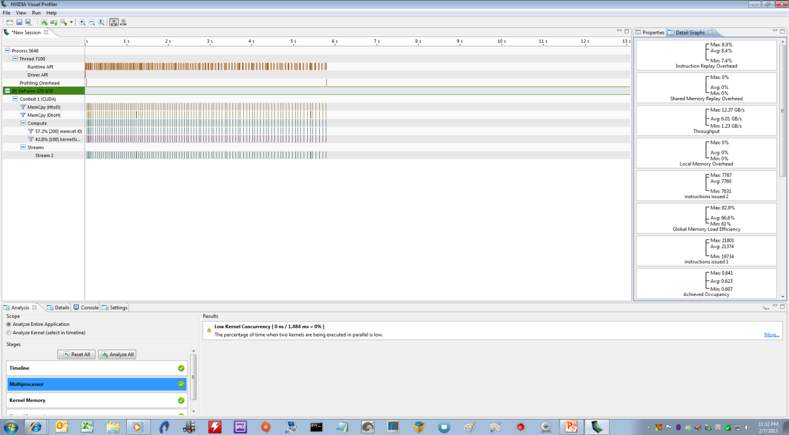</P>
<P STYLE="page-break-inside: avoid"><FONT COLOR="#1f497d"><FONT FACE="Cambria, serif"><FONT SIZE=2><I><B>Figure
18</B></I></FONT></FONT></FONT><FONT COLOR="#1f497d"><FONT FACE="Cambria, serif"><FONT SIZE=2><I>
– </I></FONT></FONT></FONT><FONT COLOR="#1f497d"><FONT FACE="Cambria, serif"><FONT SIZE=2><I><B>Using
Nvidia PROFILER to Optimize Occupancy on GPU Cores</B></I></FONT></FONT></FONT><FONT COLOR="#1f497d"><FONT FACE="Cambria, serif"><FONT SIZE=2><I>
Author, 2013.</I></FONT></FONT></FONT></P>
<H2 CLASS="western"></H2>
<H1 CLASS="western"><A NAME="__RefHeading__4268_102278096"></A><A NAME="_Toc402117965"></A>
Using Non-Nvidia/Non-Cuda Open Source Libraries for Model Program –
A Look at OpenACC</H1>
<P STYLE="page-break-inside: avoid"><FONT FACE="Cambria, serif">Note
that we don’t have to use Nvidia’s CUDA libraries.  Instead, we
could use an open-source library called “OpenACC”, “OpenMP”
or “OpenCL”.  This will allow us to use non-Nvidia GPU’s like
AMD/ATI for GPU programming.  Since OpenCL is similar to CUDA syntax
and partly based on it, let’s take a look at OpenACC.  OpenACC was
created by the Portland Group and is made up of developers who used
to work at CRAY computers.  Note that this library has its own
compiler, so, we’ll have to get used to new syntax once again.  The
compiler can be downloaded from here:
<A HREF="http://www.pgroup.com/support/download_pgi2013.php?view=current">http://www.pgroup.com/support/download_pgi2013.php?view=current</A>
</FONT>
</P>
<P STYLE="page-break-inside: avoid"><BR>
</P>
<P STYLE="page-break-inside: avoid"><FONT FACE="Cambria, serif">With
OpenACC, we must remember 3 </FONT><FONT FACE="Cambria, serif"><B>important
</B></FONT><FONT FACE="Cambria, serif">rules:</FONT></P>
<UL>
	<LI><P STYLE="page-break-inside: avoid"><FONT FACE="Cambria, serif">You
	</FONT><FONT FACE="Cambria, serif"><B>MUST</B></FONT><FONT FACE="Cambria, serif">
	use </FONT><FONT FACE="Cambria, serif"><B>array indexing</B></FONT><FONT FACE="Cambria, serif">
	and notation within loops – NO pointer notation or pointer
	arithmetic: </FONT><FONT COLOR="#1f497d"><FONT FACE="Cambria, serif"><B>A[i]
	= B[i]</B></FONT></FONT><FONT COLOR="#1f497d"><FONT FACE="Cambria, serif">
	</FONT></FONT><FONT FACE="Cambria, serif">versus </FONT><FONT COLOR="#1f497d"><FONT FACE="Cambria, serif"><B>*ptr
	A = *ptr B</B></FONT></FONT></P>
	<LI><P STYLE="page-break-inside: avoid"><FONT FACE="Cambria, serif">Any
	OpenACC statement always begins with </FONT><FONT COLOR="#1f497d"><FONT FACE="Cambria, serif"><B>#pragma
	acc</B></FONT></FONT></P>
	<LI><P STYLE="page-break-inside: avoid"><FONT FACE="Cambria, serif">OpenACC
	parallel operations are essentially loops within loops – they are
	not fragmented into various parts like CUDA C – they tend to be
	more holistic</FONT></P>
</UL>
<P STYLE="page-break-inside: avoid"><FONT FACE="Cambria, serif">Here
is the main function of the same model program written in OpenACC –
we see a tiny hit to performance here versus CUDA C, but it’s still
a very powerful package:</FONT></P>
<P STYLE="page-break-inside: avoid"><BR>
</P>
<P ALIGN=LEFT STYLE="font-style: normal; widows: 1"><BR>
</P>
<P ALIGN=LEFT STYLE="widows: 1"><BR>
</P>
<P ALIGN=LEFT STYLE="widows: 1"><BR>
</P>
<P ALIGN=LEFT STYLE="widows: 1"><FONT COLOR="#4f81bd"><FONT FACE="Cambria, serif"><FONT SIZE=4><I><FONT SIZE=2><B>Exhibit
6 – A Complex OpenACC Program vs CUDA C: Trading Model</B></FONT><FONT SIZE=2>
Author, 2013.</FONT></I></FONT></FONT></FONT></P>
<P><FONT COLOR="#008000"><FONT FACE="Consolas, serif"><FONT SIZE=1 STYLE="font-size: 8pt">//Start
outer loop and declare DATA REGION - list pointers/arrays for copying
to and from GPU</FONT></FONT></FONT></P>
<P><FONT FACE="Consolas, serif"><FONT SIZE=1 STYLE="font-size: 8pt">	</FONT></FONT><FONT COLOR="#0000ff"><FONT FACE="Consolas, serif"><FONT SIZE=1 STYLE="font-size: 8pt">#pragma</FONT></FONT></FONT><FONT FACE="Consolas, serif"><FONT SIZE=1 STYLE="font-size: 8pt">
acc data copyin(zscores,rets,start,stop) copyout(pos,pnl)</FONT></FONT></P>
<P><FONT FACE="Consolas, serif"><FONT SIZE=1 STYLE="font-size: 8pt">	{</FONT></FONT></P>
<P><FONT FACE="Consolas, serif"><FONT SIZE=1 STYLE="font-size: 8pt">		</FONT></FONT><FONT COLOR="#008000"><FONT FACE="Consolas, serif"><FONT SIZE=1 STYLE="font-size: 8pt">//Declare
KERNEL for ACCELERATION - sub-loop</FONT></FONT></FONT></P>
<P><FONT FACE="Consolas, serif"><FONT SIZE=1 STYLE="font-size: 8pt">		</FONT></FONT><FONT COLOR="#0000ff"><FONT FACE="Consolas, serif"><FONT SIZE=1 STYLE="font-size: 8pt">#pragma</FONT></FONT></FONT><FONT FACE="Consolas, serif"><FONT SIZE=1 STYLE="font-size: 8pt">
acc kernels</FONT></FONT></P>
<P><FONT FACE="Consolas, serif"><FONT SIZE=1 STYLE="font-size: 8pt">		{	</FONT></FONT></P>
<P><BR>
</P>
<P><FONT FACE="Consolas, serif"><FONT SIZE=1 STYLE="font-size: 8pt">			</FONT></FONT><FONT COLOR="#0000ff"><FONT FACE="Consolas, serif"><FONT SIZE=1 STYLE="font-size: 8pt">const</FONT></FONT></FONT><FONT FACE="Consolas, serif"><FONT SIZE=1 STYLE="font-size: 8pt">
</FONT></FONT><FONT COLOR="#0000ff"><FONT FACE="Consolas, serif"><FONT SIZE=1 STYLE="font-size: 8pt">float</FONT></FONT></FONT><FONT FACE="Consolas, serif"><FONT SIZE=1 STYLE="font-size: 8pt">
buy =1.00f;</FONT></FONT><FONT COLOR="#0000ff"><FONT FACE="Consolas, serif"><FONT SIZE=1 STYLE="font-size: 8pt">
</FONT></FONT></FONT>
</P>
<P><FONT FACE="Consolas, serif"><FONT SIZE=1 STYLE="font-size: 8pt">			</FONT></FONT><FONT COLOR="#0000ff"><FONT FACE="Consolas, serif"><FONT SIZE=1 STYLE="font-size: 8pt">const</FONT></FONT></FONT><FONT FACE="Consolas, serif"><FONT SIZE=1 STYLE="font-size: 8pt">
</FONT></FONT><FONT COLOR="#0000ff"><FONT FACE="Consolas, serif"><FONT SIZE=1 STYLE="font-size: 8pt">float</FONT></FONT></FONT><FONT FACE="Consolas, serif"><FONT SIZE=1 STYLE="font-size: 8pt">
sell=-1.00f;</FONT></FONT></P>
<P><FONT FACE="Consolas, serif"><FONT SIZE=1 STYLE="font-size: 8pt">			</FONT></FONT><FONT COLOR="#0000ff"><FONT FACE="Consolas, serif"><FONT SIZE=1 STYLE="font-size: 8pt">const</FONT></FONT></FONT><FONT FACE="Consolas, serif"><FONT SIZE=1 STYLE="font-size: 8pt">
</FONT></FONT><FONT COLOR="#0000ff"><FONT FACE="Consolas, serif"><FONT SIZE=1 STYLE="font-size: 8pt">float</FONT></FONT></FONT><FONT FACE="Consolas, serif"><FONT SIZE=1 STYLE="font-size: 8pt">
flat=0.00f;</FONT></FONT></P>
<P><FONT FACE="Consolas, serif"><FONT SIZE=1 STYLE="font-size: 8pt">			</FONT></FONT><FONT COLOR="#0000ff"><FONT FACE="Consolas, serif"><FONT SIZE=1 STYLE="font-size: 8pt">float</FONT></FONT></FONT><FONT FACE="Consolas, serif"><FONT SIZE=1 STYLE="font-size: 8pt">
zcut = 0.00f;</FONT></FONT><FONT COLOR="#0000ff"><FONT FACE="Consolas, serif"><FONT SIZE=1 STYLE="font-size: 8pt">
</FONT></FONT></FONT>
</P>
<P><FONT FACE="Consolas, serif"><FONT SIZE=1 STYLE="font-size: 8pt">			zcut
= (</FONT></FONT><FONT COLOR="#0000ff"><FONT FACE="Consolas, serif"><FONT SIZE=1 STYLE="font-size: 8pt">float</FONT></FONT></FONT><FONT FACE="Consolas, serif"><FONT SIZE=1 STYLE="font-size: 8pt">)(a[z]);</FONT></FONT><FONT COLOR="#0000ff"><FONT FACE="Consolas, serif"><FONT SIZE=1 STYLE="font-size: 8pt">
</FONT></FONT></FONT>
</P>
<P><FONT FACE="Consolas, serif"><FONT SIZE=1 STYLE="font-size: 8pt">			</FONT></FONT></P>
<P><FONT COLOR="#008000"><FONT FACE="Consolas, serif"><FONT SIZE=1 STYLE="font-size: 8pt">//Start
innermost loop to step thru values and rules to get positions and
returns</FONT></FONT></FONT></P>
<P><FONT FACE="Consolas, serif"><FONT SIZE=1 STYLE="font-size: 8pt">			</FONT></FONT><FONT COLOR="#0000ff"><FONT FACE="Consolas, serif"><FONT SIZE=1 STYLE="font-size: 8pt">#pragma</FONT></FONT></FONT><FONT FACE="Consolas, serif"><FONT SIZE=1 STYLE="font-size: 8pt">
acc loop independent</FONT></FONT></P>
<P><FONT FACE="Consolas, serif"><FONT SIZE=1 STYLE="font-size: 8pt">			</FONT></FONT><FONT COLOR="#0000ff"><FONT FACE="Consolas, serif"><FONT SIZE=1 STYLE="font-size: 8pt">for</FONT></FONT></FONT><FONT FACE="Consolas, serif"><FONT SIZE=1 STYLE="font-size: 8pt">(</FONT></FONT><FONT COLOR="#0000ff"><FONT FACE="Consolas, serif"><FONT SIZE=1 STYLE="font-size: 8pt">int</FONT></FONT></FONT><FONT FACE="Consolas, serif"><FONT SIZE=1 STYLE="font-size: 8pt">
opt = start; opt &lt; stop; opt++){			</FONT></FONT></P>
<P><FONT FACE="Consolas, serif"><FONT SIZE=1 STYLE="font-size: 8pt">			</FONT></FONT><FONT COLOR="#0000ff"><FONT FACE="Consolas, serif"><FONT SIZE=1 STYLE="font-size: 8pt">if</FONT></FONT></FONT><FONT FACE="Consolas, serif"><FONT SIZE=1 STYLE="font-size: 8pt">(zscores[opt]
&gt; zcut &amp;&amp; opt &gt;=lens) pos[opt] = buy;														</FONT></FONT></P>
<P><FONT FACE="Consolas, serif"><FONT SIZE=1 STYLE="font-size: 8pt">			</FONT></FONT><FONT COLOR="#0000ff"><FONT FACE="Consolas, serif"><FONT SIZE=1 STYLE="font-size: 8pt">if</FONT></FONT></FONT><FONT FACE="Consolas, serif"><FONT SIZE=1 STYLE="font-size: 8pt">(zscores[opt]
&lt; -zcut &amp;&amp; opt &gt;=lens) pos[opt] = sell;			</FONT></FONT></P>
<P><FONT COLOR="#0000ff"><FONT FACE="Consolas, serif"><FONT SIZE=1 STYLE="font-size: 8pt">if</FONT></FONT></FONT><FONT FACE="Consolas, serif"><FONT SIZE=1 STYLE="font-size: 8pt">(opt
&gt;=lens &amp;&amp; (pos[opt]==buy || pos[opt]==sell)) pnl[opt] =
(pos[opt] * rets[opt]);</FONT></FONT></P>
<P><FONT FACE="Consolas, serif"><FONT SIZE=1 STYLE="font-size: 8pt">			</FONT></FONT><FONT COLOR="#0000ff"><FONT FACE="Consolas, serif"><FONT SIZE=1 STYLE="font-size: 8pt">else</FONT></FONT></FONT><FONT FACE="Consolas, serif"><FONT SIZE=1 STYLE="font-size: 8pt">
{pnl[opt] = flat; pos[opt] = flat; </FONT></FONT>
</P>
<P><BR>
</P>
<P><FONT FACE="Consolas, serif"><FONT SIZE=1 STYLE="font-size: 8pt">			}</FONT></FONT></P>
<P><FONT FACE="Consolas, serif"><FONT SIZE=1 STYLE="font-size: 8pt">		}</FONT></FONT></P>
<P><FONT FACE="Consolas, serif"><FONT SIZE=1 STYLE="font-size: 8pt">	}</FONT></FONT></P>
<P STYLE="page-break-inside: avoid"><FONT FACE="Consolas, serif"><FONT SIZE=1 STYLE="font-size: 8pt">}</FONT></FONT></P>
<P STYLE="page-break-inside: avoid"><A HREF="https://bitbucket.org/adrew/gpu/commits/6bebcf48b100dde9eb1f9876cf6b42a68c4c616b"><FONT FACE="Cambria, serif"><FONT SIZE=2><I>https://bitbucket.org/adrew/gpu/commits/6bebcf48b100dde9eb1f9876cf6b42a68c4c616b</I></FONT></FONT></A></P>
<P STYLE="page-break-inside: avoid"><FONT FACE="Cambria, serif">To
compare and contrast, let’s look at the main function in the
original CUDA C program (from earlier):</FONT></P>
<P> <FONT COLOR="#008000"><FONT FACE="Consolas, serif"><FONT SIZE=1 STYLE="font-size: 8pt">//**
COPY CUDA VARIABLES FROM CPU (HOST) TO GPU (DEVICE) - USE ASYNC
TRANSFER FOR MORE SPEED SO CPU DOES NOT HAVE TO WAIT FOR GPU TO
FINISH OPERATION AND CAN PROCEED FURTHER IN THE MAIN PROGRAM**</FONT></FONT></FONT></P>
<P><FONT FACE="Consolas, serif"><FONT SIZE=1 STYLE="font-size: 8pt">	cudaMemcpyAsync(zscores_d,
zscores, (</FONT></FONT><FONT COLOR="#0000ff"><FONT FACE="Consolas, serif"><FONT SIZE=1 STYLE="font-size: 8pt">int</FONT></FONT></FONT><FONT FACE="Consolas, serif"><FONT SIZE=1 STYLE="font-size: 8pt">)(end)*</FONT></FONT><FONT COLOR="#0000ff"><FONT FACE="Consolas, serif"><FONT SIZE=1 STYLE="font-size: 8pt">sizeof</FONT></FONT></FONT><FONT FACE="Consolas, serif"><FONT SIZE=1 STYLE="font-size: 8pt">(</FONT></FONT><FONT COLOR="#0000ff"><FONT FACE="Consolas, serif"><FONT SIZE=1 STYLE="font-size: 8pt">float</FONT></FONT></FONT><FONT FACE="Consolas, serif"><FONT SIZE=1 STYLE="font-size: 8pt">),
cudaMemcpyHostToDevice,0);</FONT></FONT></P>
<P><FONT FACE="Consolas, serif"><FONT SIZE=1 STYLE="font-size: 8pt">	cudaMemcpyAsync(rets_d,
rets, (</FONT></FONT><FONT COLOR="#0000ff"><FONT FACE="Consolas, serif"><FONT SIZE=1 STYLE="font-size: 8pt">int</FONT></FONT></FONT><FONT FACE="Consolas, serif"><FONT SIZE=1 STYLE="font-size: 8pt">)(end)*</FONT></FONT><FONT COLOR="#0000ff"><FONT FACE="Consolas, serif"><FONT SIZE=1 STYLE="font-size: 8pt">sizeof</FONT></FONT></FONT><FONT FACE="Consolas, serif"><FONT SIZE=1 STYLE="font-size: 8pt">(</FONT></FONT><FONT COLOR="#0000ff"><FONT FACE="Consolas, serif"><FONT SIZE=1 STYLE="font-size: 8pt">float</FONT></FONT></FONT><FONT FACE="Consolas, serif"><FONT SIZE=1 STYLE="font-size: 8pt">),
cudaMemcpyHostToDevice,0);</FONT></FONT></P>
<P><BR>
</P>
<P><BR>
</P>
<P><FONT FACE="Consolas, serif"><FONT SIZE=1 STYLE="font-size: 8pt">	lenny=stop-start;</FONT></FONT></P>
<P><FONT FACE="Consolas, serif"><FONT SIZE=1 STYLE="font-size: 8pt">	dim3
threads; threads.x = 896;</FONT></FONT><FONT COLOR="#008000"><FONT FACE="Consolas, serif"><FONT SIZE=1 STYLE="font-size: 8pt">//use
896 threads as per specific GPU device for higher OCCUPANCY/USE OF
CARD - trial-and-error via PROFILING - max blocks is 112 on GTX 670
GPU</FONT></FONT></FONT></P>
<P><BR>
</P>
<P><FONT COLOR="#008000"><FONT FACE="Consolas, serif"><FONT SIZE=1 STYLE="font-size: 8pt">//**
CALL GPU FUNCTION/KERNEL HERE FOR MODEL PARAMETER SWEEP TO GENERATE
IS RESULTS</FONT></FONT></FONT></P>
<P>   
<FONT FACE="Consolas, serif"><FONT SIZE=1 STYLE="font-size: 8pt">	kernelSim&lt;&lt;&lt;threads,112&gt;&gt;&gt;(zscores_d,rets_d,pnl_d,pos_d,start,stop,(</FONT></FONT><FONT COLOR="#0000ff"><FONT FACE="Consolas, serif"><FONT SIZE=1 STYLE="font-size: 8pt">float</FONT></FONT></FONT><FONT FACE="Consolas, serif"><FONT SIZE=1 STYLE="font-size: 8pt">)(a[z]),lens);</FONT></FONT></P>
<P><BR>
</P>
<P><BR>
</P>
<P><FONT COLOR="#008000"><FONT FACE="Consolas, serif"><FONT SIZE=1 STYLE="font-size: 8pt">//**
COPY CUDA VARIABLES/RESULTS FROM GPU (DEVICE) BACK TO CPU (HOST) -
MUST WAIT FOR GPU OPERATION/FUNCTION TO FINISH HERE SINCE LOW
ASYNC/CONCURRENCY ON NON_TESLA GPU DEVICES**</FONT></FONT></FONT></P>
<P><FONT FACE="Consolas, serif"><FONT SIZE=1 STYLE="font-size: 8pt">	cudaMemcpy(pos,
pos_d, (</FONT></FONT><FONT COLOR="#0000ff"><FONT FACE="Consolas, serif"><FONT SIZE=1 STYLE="font-size: 8pt">int</FONT></FONT></FONT><FONT FACE="Consolas, serif"><FONT SIZE=1 STYLE="font-size: 8pt">)(end)*</FONT></FONT><FONT COLOR="#0000ff"><FONT FACE="Consolas, serif"><FONT SIZE=1 STYLE="font-size: 8pt">sizeof</FONT></FONT></FONT><FONT FACE="Consolas, serif"><FONT SIZE=1 STYLE="font-size: 8pt">(</FONT></FONT><FONT COLOR="#0000ff"><FONT FACE="Consolas, serif"><FONT SIZE=1 STYLE="font-size: 8pt">float</FONT></FONT></FONT><FONT FACE="Consolas, serif"><FONT SIZE=1 STYLE="font-size: 8pt">)</FONT></FONT><FONT COLOR="#008000"><FONT FACE="Consolas, serif"><FONT SIZE=1 STYLE="font-size: 8pt">/*stop-start*/</FONT></FONT></FONT><FONT FACE="Consolas, serif"><FONT SIZE=1 STYLE="font-size: 8pt">,
cudaMemcpyDeviceToHost);</FONT></FONT></P>
<P STYLE="page-break-inside: avoid"><FONT FACE="Consolas, serif"><FONT SIZE=1 STYLE="font-size: 8pt">	cudaMemcpy(pnl,
pnl_d, (</FONT></FONT><FONT COLOR="#0000ff"><FONT FACE="Consolas, serif"><FONT SIZE=1 STYLE="font-size: 8pt">int</FONT></FONT></FONT><FONT FACE="Consolas, serif"><FONT SIZE=1 STYLE="font-size: 8pt">)(end)*</FONT></FONT><FONT COLOR="#0000ff"><FONT FACE="Consolas, serif"><FONT SIZE=1 STYLE="font-size: 8pt">sizeof</FONT></FONT></FONT><FONT FACE="Consolas, serif"><FONT SIZE=1 STYLE="font-size: 8pt">(</FONT></FONT><FONT COLOR="#0000ff"><FONT FACE="Consolas, serif"><FONT SIZE=1 STYLE="font-size: 8pt">float</FONT></FONT></FONT><FONT FACE="Consolas, serif"><FONT SIZE=1 STYLE="font-size: 8pt">),
cudaMemcpyDeviceToHost);</FONT></FONT></P>
<P STYLE="page-break-inside: avoid"><BR>
</P>
<H1 CLASS="western"><A NAME="__RefHeading__4270_102278096"></A><A NAME="_Toc402117966"></A>
Using Wrappers and Other “Non-native” Packages for Modelling:
What are the tradeoffs of using these alternatives?</H1>
<H2 CLASS="western"><A NAME="__RefHeading__4272_102278096"></A><A NAME="_Toc402117967"></A>
The MATLAB Stats package</H2>
<P STYLE="page-break-inside: avoid"><FONT FACE="Cambria, serif">Instead
of writing CUDA on the lowest, most pure level (e.g., </FONT><FONT FACE="Cambria, serif"><B>kernel</B></FONT><FONT FACE="Cambria, serif">
level), we can use “</FONT><FONT FACE="Cambria, serif"><B>wrappers</B></FONT><FONT FACE="Cambria, serif">”
in other programming packages, instead.  Wrappers are overlays or
translators that call more complex functions beneath them allowing
for easier use and operability.  Statistics packages like MATLAB give
us this option and are forgiving in that they are “high-level”
packages in which a few keystrokes can result in powerful results. 
Essentially, packages like MATLAB do a lot of the heavy lifting for
us and so have become very popular within science and finance.  Cleve
Moler originally created MATLAB in the 1970’s based on FORTAN and
then morphed into C later on.  MATLAB stands for “MATRIX
LABORATORY” and it is a very powerful stats program that is
optimized for large data sets and vectorization of code.  MATLAB is
not a native language like C (though there is a MATLAB C compiler
that can transform “M-code” into native C), but it is still very
fast – unfortunately, it is not open source and is expensive
(unlike packages like R).  More precisely, MATLAB is more like a
functional language and is fourth generation type in nature</FONT><A CLASS="sdfootnoteanc" NAME="sdfootnote9anc" HREF="#sdfootnote9sym"><SUP>9</SUP></A><FONT FACE="Cambria, serif">.
 In terms of CUDA, we will take a slight hit to performance here
since we are one level removed from purity, so to speak.  There is
also less functionality compared to the standard CUDA library.  Here
is what the M-code looks like in terms of the main part of the
original model program:</FONT></P>
<P ALIGN=LEFT STYLE="widows: 1"><FONT COLOR="#4f81bd"><FONT FACE="Cambria, serif"><FONT SIZE=4><I><FONT SIZE=2><B>Exhibit
7 – A Complex MATLAB Program w/Wrappers: Trading Model</B></FONT><FONT SIZE=2>
Author, 2013.    </FONT></I></FONT></FONT></FONT>
</P>
<P><FONT COLOR="#228b22"><FONT FACE="Consolas, serif"><FONT SIZE=1 STYLE="font-size: 8pt">%start
clock timer (wall clock)</FONT></FONT></FONT></P>
<P><FONT COLOR="#000000"><FONT FACE="Consolas, serif"><FONT SIZE=1 STYLE="font-size: 8pt">tic</FONT></FONT></FONT></P>
<P><FONT COLOR="#000000"> </FONT>
</P>
<P><FONT COLOR="#228b22"><FONT FACE="Consolas, serif"><FONT SIZE=1 STYLE="font-size: 8pt">%Check/set
GPU device</FONT></FONT></FONT></P>
<P><FONT COLOR="#000000"><FONT FACE="Consolas, serif"><FONT SIZE=1 STYLE="font-size: 8pt">g
= gpuDevice(1);</FONT></FONT></FONT></P>
<P><FONT COLOR="#000000"> </FONT>
</P>
<P><FONT COLOR="#228b22"><FONT FACE="Consolas, serif"><FONT SIZE=1 STYLE="font-size: 8pt">%Number
of optims - variable</FONT></FONT></FONT></P>
<P><FONT COLOR="#000000"><FONT FACE="Consolas, serif"><FONT SIZE=1 STYLE="font-size: 8pt">Cut
= 1810;</FONT></FONT></FONT></P>
<P><FONT COLOR="#000000"> </FONT>
</P>
<P><FONT COLOR="#228b22"><FONT FACE="Consolas, serif"><FONT SIZE=1 STYLE="font-size: 8pt">%Get
market data in one shot from flat files and store in matrix</FONT></FONT></FONT></P>
<P><FONT COLOR="#000000"><FONT FACE="Consolas, serif"><FONT SIZE=1 STYLE="font-size: 8pt">setdbprefs({</FONT></FONT></FONT><FONT COLOR="#a020f0"><FONT FACE="Consolas, serif"><FONT SIZE=1 STYLE="font-size: 8pt">'DataReturnFormat'</FONT></FONT></FONT><FONT COLOR="#000000"><FONT FACE="Consolas, serif"><FONT SIZE=1 STYLE="font-size: 8pt">,</FONT></FONT></FONT><FONT COLOR="#a020f0"><FONT FACE="Consolas, serif"><FONT SIZE=1 STYLE="font-size: 8pt">'ErrorHandling'</FONT></FONT></FONT><FONT COLOR="#000000"><FONT FACE="Consolas, serif"><FONT SIZE=1 STYLE="font-size: 8pt">,</FONT></FONT></FONT><FONT COLOR="#a020f0"><FONT FACE="Consolas, serif"><FONT SIZE=1 STYLE="font-size: 8pt">'NullNumberRead'</FONT></FONT></FONT><FONT COLOR="#000000"><FONT FACE="Consolas, serif"><FONT SIZE=1 STYLE="font-size: 8pt">,</FONT></FONT></FONT><FONT COLOR="#a020f0"><FONT FACE="Consolas, serif"><FONT SIZE=1 STYLE="font-size: 8pt">'NullNumberWrite'</FONT></FONT></FONT><FONT COLOR="#000000"><FONT FACE="Consolas, serif"><FONT SIZE=1 STYLE="font-size: 8pt">,</FONT></FONT></FONT><FONT COLOR="#a020f0"><FONT FACE="Consolas, serif"><FONT SIZE=1 STYLE="font-size: 8pt">'NullStringRead'</FONT></FONT></FONT><FONT COLOR="#000000"><FONT FACE="Consolas, serif"><FONT SIZE=1 STYLE="font-size: 8pt">,</FONT></FONT></FONT><FONT COLOR="#a020f0"><FONT FACE="Consolas, serif"><FONT SIZE=1 STYLE="font-size: 8pt">'NullStringWrite'</FONT></FONT></FONT><FONT COLOR="#000000"><FONT FACE="Consolas, serif"><FONT SIZE=1 STYLE="font-size: 8pt">,</FONT></FONT></FONT><FONT COLOR="#a020f0"><FONT FACE="Consolas, serif"><FONT SIZE=1 STYLE="font-size: 8pt">'JDBCDataSourceFile'</FONT></FONT></FONT><FONT COLOR="#000000"><FONT FACE="Consolas, serif"><FONT SIZE=1 STYLE="font-size: 8pt">},{</FONT></FONT></FONT><FONT COLOR="#a020f0"><FONT FACE="Consolas, serif"><FONT SIZE=1 STYLE="font-size: 8pt">'numeric'</FONT></FONT></FONT><FONT COLOR="#000000"><FONT FACE="Consolas, serif"><FONT SIZE=1 STYLE="font-size: 8pt">,</FONT></FONT></FONT><FONT COLOR="#a020f0"><FONT FACE="Consolas, serif"><FONT SIZE=1 STYLE="font-size: 8pt">'empty'</FONT></FONT></FONT><FONT COLOR="#000000"><FONT FACE="Consolas, serif"><FONT SIZE=1 STYLE="font-size: 8pt">,</FONT></FONT></FONT><FONT COLOR="#a020f0"><FONT FACE="Consolas, serif"><FONT SIZE=1 STYLE="font-size: 8pt">'NaN'</FONT></FONT></FONT><FONT COLOR="#000000"><FONT FACE="Consolas, serif"><FONT SIZE=1 STYLE="font-size: 8pt">,</FONT></FONT></FONT><FONT COLOR="#a020f0"><FONT FACE="Consolas, serif"><FONT SIZE=1 STYLE="font-size: 8pt">'NaN'</FONT></FONT></FONT><FONT COLOR="#000000"><FONT FACE="Consolas, serif"><FONT SIZE=1 STYLE="font-size: 8pt">,</FONT></FONT></FONT><FONT COLOR="#a020f0"><FONT FACE="Consolas, serif"><FONT SIZE=1 STYLE="font-size: 8pt">'null'</FONT></FONT></FONT><FONT COLOR="#000000"><FONT FACE="Consolas, serif"><FONT SIZE=1 STYLE="font-size: 8pt">,</FONT></FONT></FONT><FONT COLOR="#a020f0"><FONT FACE="Consolas, serif"><FONT SIZE=1 STYLE="font-size: 8pt">'null'</FONT></FONT></FONT><FONT COLOR="#000000"><FONT FACE="Consolas, serif"><FONT SIZE=1 STYLE="font-size: 8pt">,</FONT></FONT></FONT><FONT COLOR="#a020f0"><FONT FACE="Consolas, serif"><FONT SIZE=1 STYLE="font-size: 8pt">''</FONT></FONT></FONT><FONT COLOR="#000000"><FONT FACE="Consolas, serif"><FONT SIZE=1 STYLE="font-size: 8pt">});</FONT></FONT></FONT></P>
<P><FONT COLOR="#000000"><FONT FACE="Consolas, serif"><FONT SIZE=1 STYLE="font-size: 8pt">conn
= database(</FONT></FONT></FONT><FONT COLOR="#a020f0"><FONT FACE="Consolas, serif"><FONT SIZE=1 STYLE="font-size: 8pt">'BLP32'</FONT></FONT></FONT><FONT COLOR="#000000"><FONT FACE="Consolas, serif"><FONT SIZE=1 STYLE="font-size: 8pt">,</FONT></FONT></FONT><FONT COLOR="#a020f0"><FONT FACE="Consolas, serif"><FONT SIZE=1 STYLE="font-size: 8pt">''</FONT></FONT></FONT><FONT COLOR="#000000"><FONT FACE="Consolas, serif"><FONT SIZE=1 STYLE="font-size: 8pt">,</FONT></FONT></FONT><FONT COLOR="#a020f0"><FONT FACE="Consolas, serif"><FONT SIZE=1 STYLE="font-size: 8pt">''</FONT></FONT></FONT><FONT COLOR="#000000"><FONT FACE="Consolas, serif"><FONT SIZE=1 STYLE="font-size: 8pt">);</FONT></FONT></FONT></P>
<P><FONT COLOR="#000000"><FONT FACE="Consolas, serif"><FONT SIZE=1 STYLE="font-size: 8pt">e
= exec(conn,</FONT></FONT></FONT><FONT COLOR="#a020f0"><FONT FACE="Consolas, serif"><FONT SIZE=1 STYLE="font-size: 8pt">'SELECT
ALL &quot;pcrhc$&quot;.&quot;pcr date&quot;,&quot;pcrhc$&quot;.&quot;pcr
price&quot;,&quot;spxhc$&quot;.&quot;spx price&quot; FROM
&quot;pcrhc$&quot;,&quot;spxhc$&quot; WHERE &quot;pcrhc$&quot;.&quot;pcr
date&quot; = &quot;spxhc$&quot;.&quot;spx date&quot;'</FONT></FONT></FONT><FONT COLOR="#000000"><FONT FACE="Consolas, serif"><FONT SIZE=1 STYLE="font-size: 8pt">);</FONT></FONT></FONT></P>
<P><FONT COLOR="#000000"><FONT FACE="Consolas, serif"><FONT SIZE=1 STYLE="font-size: 8pt">e
= fetch(e);</FONT></FONT></FONT></P>
<P><FONT COLOR="#000000"><FONT FACE="Consolas, serif"><FONT SIZE=1 STYLE="font-size: 8pt">BLP
= e.Data;</FONT></FONT></FONT></P>
<P><FONT COLOR="#000000"><FONT FACE="Consolas, serif"><FONT SIZE=1 STYLE="font-size: 8pt">close(e)</FONT></FONT></FONT></P>
<P><FONT COLOR="#000000"><FONT FACE="Consolas, serif"><FONT SIZE=1 STYLE="font-size: 8pt">close(conn)</FONT></FONT></FONT></P>
<P><FONT COLOR="#000000"> </FONT>
</P>
<P><FONT COLOR="#228b22"><FONT FACE="Consolas, serif"><FONT SIZE=1 STYLE="font-size: 8pt">%Get
Z-scores from market data</FONT></FONT></FONT></P>
<P><FONT COLOR="#000000"><FONT FACE="Consolas, serif"><FONT SIZE=1 STYLE="font-size: 8pt">Blotter
= BLP;</FONT></FONT></FONT><FONT COLOR="#0000ff"><FONT FACE="Consolas, serif"><FONT SIZE=1 STYLE="font-size: 8pt">
</FONT></FONT></FONT>
</P>
<P><FONT COLOR="#000000"><FONT FACE="Consolas, serif"><FONT SIZE=1 STYLE="font-size: 8pt">Blotter(:,4:5)
= single(zscore(BLP(:,2:3)));</FONT></FONT></FONT></P>
<P><FONT COLOR="#000000"><FONT FACE="Consolas, serif"><FONT SIZE=1 STYLE="font-size: 8pt">Zpcr
=single(zscore(Blotter(:,4)));</FONT></FONT></FONT></P>
<P><FONT COLOR="#000000"><FONT FACE="Consolas, serif"><FONT SIZE=1 STYLE="font-size: 8pt">Zspx
= single(zscore(Blotter(:,5)));</FONT></FONT></FONT></P>
<P><FONT COLOR="#000000"><FONT FACE="Consolas, serif"><FONT SIZE=1 STYLE="font-size: 8pt">dates
= Blotter(:,1);</FONT></FONT></FONT></P>
<P><FONT COLOR="#000000"><FONT FACE="Consolas, serif"><FONT SIZE=1 STYLE="font-size: 8pt">lens
= length(dates);</FONT></FONT></FONT></P>
<P><FONT COLOR="#000000">  </FONT>
</P>
<P><FONT COLOR="#228b22"><FONT FACE="Consolas, serif"><FONT SIZE=1 STYLE="font-size: 8pt">%Set
parameters for z-score cutoff, moving-average length and rolling</FONT></FONT></FONT><FONT FACE="Consolas, serif"><FONT SIZE=1 STYLE="font-size: 8pt">
</FONT></FONT><FONT COLOR="#228b22"><FONT FACE="Consolas, serif"><FONT SIZE=1 STYLE="font-size: 8pt">period
- variable</FONT></FONT></FONT></P>
<P><FONT COLOR="#000000"><FONT FACE="Consolas, serif"><FONT SIZE=1 STYLE="font-size: 8pt">assignin(</FONT></FONT></FONT><FONT COLOR="#a020f0"><FONT FACE="Consolas, serif"><FONT SIZE=1 STYLE="font-size: 8pt">'base'</FONT></FONT></FONT><FONT COLOR="#000000"><FONT FACE="Consolas, serif"><FONT SIZE=1 STYLE="font-size: 8pt">,
</FONT></FONT></FONT><FONT COLOR="#a020f0"><FONT FACE="Consolas, serif"><FONT SIZE=1 STYLE="font-size: 8pt">'zii'</FONT></FONT></FONT><FONT COLOR="#000000"><FONT FACE="Consolas, serif"><FONT SIZE=1 STYLE="font-size: 8pt">,
</FONT></FONT></FONT><FONT COLOR="#a020f0"><FONT FACE="Consolas, serif"><FONT SIZE=1 STYLE="font-size: 8pt">'1'</FONT></FONT></FONT><FONT COLOR="#000000"><FONT FACE="Consolas, serif"><FONT SIZE=1 STYLE="font-size: 8pt">);</FONT></FONT></FONT></P>
<P><FONT COLOR="#000000"><FONT FACE="Consolas, serif"><FONT SIZE=1 STYLE="font-size: 8pt">assignin(</FONT></FONT></FONT><FONT COLOR="#a020f0"><FONT FACE="Consolas, serif"><FONT SIZE=1 STYLE="font-size: 8pt">'base'</FONT></FONT></FONT><FONT COLOR="#000000"><FONT FACE="Consolas, serif"><FONT SIZE=1 STYLE="font-size: 8pt">,
</FONT></FONT></FONT><FONT COLOR="#a020f0"><FONT FACE="Consolas, serif"><FONT SIZE=1 STYLE="font-size: 8pt">'fii'</FONT></FONT></FONT><FONT COLOR="#000000"><FONT FACE="Consolas, serif"><FONT SIZE=1 STYLE="font-size: 8pt">,
</FONT></FONT></FONT><FONT COLOR="#a020f0"><FONT FACE="Consolas, serif"><FONT SIZE=1 STYLE="font-size: 8pt">'21'</FONT></FONT></FONT><FONT COLOR="#000000"><FONT FACE="Consolas, serif"><FONT SIZE=1 STYLE="font-size: 8pt">);</FONT></FONT></FONT></P>
<P><FONT COLOR="#000000"><FONT FACE="Consolas, serif"><FONT SIZE=1 STYLE="font-size: 8pt">assignin(</FONT></FONT></FONT><FONT COLOR="#a020f0"><FONT FACE="Consolas, serif"><FONT SIZE=1 STYLE="font-size: 8pt">'base'</FONT></FONT></FONT><FONT COLOR="#000000"><FONT FACE="Consolas, serif"><FONT SIZE=1 STYLE="font-size: 8pt">,
</FONT></FONT></FONT><FONT COLOR="#a020f0"><FONT FACE="Consolas, serif"><FONT SIZE=1 STYLE="font-size: 8pt">'pii'</FONT></FONT></FONT><FONT COLOR="#000000"><FONT FACE="Consolas, serif"><FONT SIZE=1 STYLE="font-size: 8pt">,
</FONT></FONT></FONT><FONT COLOR="#a020f0"><FONT FACE="Consolas, serif"><FONT SIZE=1 STYLE="font-size: 8pt">'377'</FONT></FONT></FONT><FONT COLOR="#000000"><FONT FACE="Consolas, serif"><FONT SIZE=1 STYLE="font-size: 8pt">);</FONT></FONT></FONT></P>
<P><FONT COLOR="#000000"> </FONT>
</P>
<P><FONT COLOR="#228b22"><FONT FACE="Consolas, serif"><FONT SIZE=1 STYLE="font-size: 8pt">%start
outer loop for optimizations</FONT></FONT></FONT></P>
<P><FONT COLOR="#0000ff"><FONT FACE="Consolas, serif"><FONT SIZE=1 STYLE="font-size: 8pt">for</FONT></FONT></FONT><FONT COLOR="#000000"><FONT FACE="Consolas, serif"><FONT SIZE=1 STYLE="font-size: 8pt">
fors=1:Cut;</FONT></FONT></FONT></P>
<P><FONT COLOR="#000000"> </FONT>
</P>
<P><FONT COLOR="#228b22"><FONT FACE="Consolas, serif"><FONT SIZE=1 STYLE="font-size: 8pt">%assign
space in memory for CPU data and set initial values to zero for
matrices - speed gains</FONT></FONT></FONT></P>
<P><FONT COLOR="#000000"><FONT FACE="Consolas, serif"><FONT SIZE=1 STYLE="font-size: 8pt">ret
=single(zeros(lens,1));</FONT></FONT></FONT></P>
<P><FONT COLOR="#000000"><FONT FACE="Consolas, serif"><FONT SIZE=1 STYLE="font-size: 8pt">fp=
single(zeros(lens,2));</FONT></FONT></FONT></P>
<P><FONT COLOR="#000000"><FONT FACE="Consolas, serif"><FONT SIZE=1 STYLE="font-size: 8pt">fproll=single(zeros(lens,5));</FONT></FONT></FONT></P>
<P><FONT COLOR="#000000"><FONT FACE="Consolas, serif"><FONT SIZE=1 STYLE="font-size: 8pt">ZpcrRoll=single(zeros(lens,2));</FONT></FONT></FONT></P>
<P><FONT COLOR="#000000"><FONT FACE="Consolas, serif"><FONT SIZE=1 STYLE="font-size: 8pt">ZspxRoll=single(zeros(lens,2));</FONT></FONT></FONT></P>
<P><FONT COLOR="#000000"><FONT FACE="Consolas, serif"><FONT SIZE=1 STYLE="font-size: 8pt">lookback=str2double(pii);</FONT></FONT></FONT></P>
<P><FONT COLOR="#000000"><FONT FACE="Consolas, serif"><FONT SIZE=1 STYLE="font-size: 8pt">period
=str2double(fii);</FONT></FONT></FONT></P>
<P><FONT COLOR="#000000"><FONT FACE="Consolas, serif"><FONT SIZE=1 STYLE="font-size: 8pt">zcut=str2double(zii);</FONT></FONT></FONT></P>
<P><FONT COLOR="#000000"><FONT FACE="Consolas, serif"><FONT SIZE=1 STYLE="font-size: 8pt">dates1=zeros(lens,2);</FONT></FONT></FONT></P>
<P><FONT COLOR="#000000"><FONT FACE="Consolas, serif"><FONT SIZE=1 STYLE="font-size: 8pt">dates1f=zeros(lens,2);</FONT></FONT></FONT><FONT COLOR="#0000ff"><FONT FACE="Consolas, serif"><FONT SIZE=1 STYLE="font-size: 8pt">
</FONT></FONT></FONT>
</P>
<P><FONT COLOR="#000000"><FONT FACE="Consolas, serif"><FONT SIZE=1 STYLE="font-size: 8pt">dirf=zeros(lens,2);</FONT></FONT></FONT></P>
<P><FONT COLOR="#000000"><FONT FACE="Consolas, serif"><FONT SIZE=1 STYLE="font-size: 8pt">dir=zeros(lens,2);</FONT></FONT></FONT></P>
<P><FONT COLOR="#000000"><FONT FACE="Consolas, serif"><FONT SIZE=1 STYLE="font-size: 8pt">dirup=zeros(lens,1);</FONT></FONT></FONT><FONT COLOR="#0000ff"><FONT FACE="Consolas, serif"><FONT SIZE=1 STYLE="font-size: 8pt">
</FONT></FONT></FONT>
</P>
<P><FONT COLOR="#000000"><FONT FACE="Consolas, serif"><FONT SIZE=1 STYLE="font-size: 8pt">dirupf=zeros(lens,1);</FONT></FONT></FONT></P>
<P><FONT COLOR="#000000"><FONT FACE="Consolas, serif"><FONT SIZE=1 STYLE="font-size: 8pt">dirdn=zeros(lens,1);</FONT></FONT></FONT></P>
<P><FONT COLOR="#000000"><FONT FACE="Consolas, serif"><FONT SIZE=1 STYLE="font-size: 8pt">dirdnf=zeros(lens,1);</FONT></FONT></FONT></P>
<P><FONT COLOR="#000000"> </FONT>
</P>
<P><FONT COLOR="#228b22"><FONT FACE="Consolas, serif"><FONT SIZE=1 STYLE="font-size: 8pt">%copy
data from CPU to GPU using WRAPPER function</FONT></FONT></FONT></P>
<P><FONT COLOR="#000000"><FONT FACE="Consolas, serif"><FONT SIZE=1 STYLE="font-size: 8pt">Bl7
  = gpuArray( single(Blotter(:,7)) );</FONT></FONT></FONT></P>
<P><FONT COLOR="#000000"><FONT FACE="Consolas, serif"><FONT SIZE=1 STYLE="font-size: 8pt">Bl6
  = gpuArray( single(Blotter(:,6) ));</FONT></FONT></FONT></P>
<P><FONT COLOR="#000000"><FONT FACE="Consolas, serif"><FONT SIZE=1 STYLE="font-size: 8pt">Fpr
  = gpuArray( single(fproll) );</FONT></FONT></FONT></P>
<P><FONT COLOR="#000000"><FONT FACE="Consolas, serif"><FONT SIZE=1 STYLE="font-size: 8pt">Fpr2
 = gpuArray( single(fproll) );</FONT></FONT></FONT></P>
<P><FONT COLOR="#000000"><FONT FACE="Consolas, serif"><FONT SIZE=1 STYLE="font-size: 8pt">Fpr4
 = gpuArray( single(fproll) );</FONT></FONT></FONT></P>
<P><BR>
</P>
<P><FONT COLOR="#228b22"><FONT FACE="Consolas, serif"><FONT SIZE=1 STYLE="font-size: 8pt">%run
main calculations on GPU – since arrays have been moved to GPU,
function will run on GPU</FONT></FONT></FONT></P>
<P><FONT COLOR="#0000ff"><FONT FACE="Consolas, serif"><FONT SIZE=1 STYLE="font-size: 8pt">for</FONT></FONT></FONT><FONT COLOR="#000000"><FONT FACE="Consolas, serif"><FONT SIZE=1 STYLE="font-size: 8pt">
lp=1:lens-period+1;</FONT></FONT></FONT></P>
<P><FONT COLOR="#000000">    </FONT><FONT COLOR="#0000ff"><FONT FACE="Consolas, serif"><FONT SIZE=1 STYLE="font-size: 8pt">if</FONT></FONT></FONT><FONT COLOR="#000000"><FONT FACE="Consolas, serif"><FONT SIZE=1 STYLE="font-size: 8pt">
Bl7(lp) &gt; zcut &amp;&amp; zcut &gt; 0</FONT></FONT></FONT></P>
<P><FONT COLOR="#000000">            <FONT FACE="Consolas, serif"><FONT SIZE=1 STYLE="font-size: 8pt">Fpr(lp)=Bl6(lp);</FONT></FONT></FONT></P>
<P><FONT COLOR="#000000">            </FONT><FONT COLOR="#0000ff"><FONT FACE="Consolas, serif"><FONT SIZE=1 STYLE="font-size: 8pt">for</FONT></FONT></FONT><FONT COLOR="#000000"><FONT FACE="Consolas, serif"><FONT SIZE=1 STYLE="font-size: 8pt">
lp2=0:period-1;</FONT></FONT></FONT></P>
<P><FONT COLOR="#000000">                <FONT FACE="Consolas, serif"><FONT SIZE=1 STYLE="font-size: 8pt">Fpr2(lp+lp2)=Bl6(lp+lp2);</FONT></FONT></FONT></P>
<P><FONT COLOR="#000000">            </FONT><FONT COLOR="#0000ff"><FONT FACE="Consolas, serif"><FONT SIZE=1 STYLE="font-size: 8pt">end</FONT></FONT></FONT><FONT COLOR="#000000"><FONT FACE="Consolas, serif"><FONT SIZE=1 STYLE="font-size: 8pt">;</FONT></FONT></FONT></P>
<P><FONT COLOR="#000000">           
<FONT FACE="Consolas, serif"><FONT SIZE=1 STYLE="font-size: 8pt">Fpr4(lp)=sum(Bl6(lp:lp+period-1));</FONT></FONT></FONT><FONT COLOR="#0000ff"><FONT FACE="Consolas, serif"><FONT SIZE=1 STYLE="font-size: 8pt">
</FONT></FONT></FONT>
</P>
<P><FONT COLOR="#000000">    </FONT><FONT COLOR="#0000ff"><FONT FACE="Consolas, serif"><FONT SIZE=1 STYLE="font-size: 8pt">elseif</FONT></FONT></FONT><FONT COLOR="#000000"><FONT FACE="Consolas, serif"><FONT SIZE=1 STYLE="font-size: 8pt">
Bl7(lp) &lt; zcut &amp;&amp; zcut &lt; 0</FONT></FONT></FONT></P>
<P><FONT COLOR="#000000">             <FONT FACE="Consolas, serif"><FONT SIZE=1 STYLE="font-size: 8pt">Fpr(lp)=Bl6(lp);</FONT></FONT></FONT></P>
<P><FONT COLOR="#000000">            </FONT><FONT COLOR="#0000ff"><FONT FACE="Consolas, serif"><FONT SIZE=1 STYLE="font-size: 8pt">for</FONT></FONT></FONT><FONT COLOR="#000000"><FONT FACE="Consolas, serif"><FONT SIZE=1 STYLE="font-size: 8pt">
lp2=0:period-1;</FONT></FONT></FONT><FONT COLOR="#0000ff"><FONT FACE="Consolas, serif"><FONT SIZE=1 STYLE="font-size: 8pt">
</FONT></FONT></FONT>
</P>
<P><FONT COLOR="#000000">                <FONT FACE="Consolas, serif"><FONT SIZE=1 STYLE="font-size: 8pt">Fpr2(lp+lp2)=Bl6(lp+lp2);</FONT></FONT></FONT></P>
<P><FONT COLOR="#000000">            </FONT><FONT COLOR="#0000ff"><FONT FACE="Consolas, serif"><FONT SIZE=1 STYLE="font-size: 8pt">end</FONT></FONT></FONT><FONT COLOR="#000000"><FONT FACE="Consolas, serif"><FONT SIZE=1 STYLE="font-size: 8pt">;</FONT></FONT></FONT></P>
<P><FONT COLOR="#000000">           
<FONT FACE="Consolas, serif"><FONT SIZE=1 STYLE="font-size: 8pt">Fpr4(lp)=sum(Bl6(lp:lp+period-1));</FONT></FONT></FONT></P>
<P><FONT COLOR="#000000">    </FONT><FONT COLOR="#0000ff"><FONT FACE="Consolas, serif"><FONT SIZE=1 STYLE="font-size: 8pt">else</FONT></FONT></FONT><FONT COLOR="#000000"><FONT FACE="Consolas, serif"><FONT SIZE=1 STYLE="font-size: 8pt">
Fpr(lp)=0;</FONT></FONT></FONT></P>
<P><FONT COLOR="#000000">    </FONT><FONT COLOR="#0000ff"><FONT FACE="Consolas, serif"><FONT SIZE=1 STYLE="font-size: 8pt">end</FONT></FONT></FONT><FONT COLOR="#000000"><FONT FACE="Consolas, serif"><FONT SIZE=1 STYLE="font-size: 8pt">;</FONT></FONT></FONT></P>
<P><FONT COLOR="#0000ff"><FONT FACE="Consolas, serif"><FONT SIZE=1 STYLE="font-size: 8pt">end</FONT></FONT></FONT><FONT COLOR="#000000"><FONT FACE="Consolas, serif"><FONT SIZE=1 STYLE="font-size: 8pt">;</FONT></FONT></FONT></P>
<P><FONT COLOR="#000000"> </FONT>
</P>
<P><FONT COLOR="#228b22"><FONT FACE="Consolas, serif"><FONT SIZE=1 STYLE="font-size: 8pt">%Gather
results on GPU and send back to CPU</FONT></FONT></FONT></P>
<P><FONT COLOR="#000000"><FONT FACE="Consolas, serif"><FONT SIZE=1 STYLE="font-size: 8pt">f1=gather(Fpr);</FONT></FONT></FONT></P>
<P><FONT COLOR="#000000"><FONT FACE="Consolas, serif"><FONT SIZE=1 STYLE="font-size: 8pt">f2=gather(Fpr2);</FONT></FONT></FONT><FONT COLOR="#0000ff"><FONT FACE="Consolas, serif"><FONT SIZE=1 STYLE="font-size: 8pt">
</FONT></FONT></FONT>
</P>
<P><FONT COLOR="#000000"><FONT FACE="Consolas, serif"><FONT SIZE=1 STYLE="font-size: 8pt">f4=gather(Fpr4);</FONT></FONT></FONT></P>
<P><FONT COLOR="#000000"> </FONT>
</P>
<P><FONT COLOR="#228b22"><FONT FACE="Consolas, serif"><FONT SIZE=1 STYLE="font-size: 8pt">%assign
results to main data matrix</FONT></FONT></FONT></P>
<P><FONT COLOR="#000000"><FONT FACE="Consolas, serif"><FONT SIZE=1 STYLE="font-size: 8pt">fproll(:,1)=
(f1(:,1));</FONT></FONT></FONT></P>
<P><FONT COLOR="#000000"><FONT FACE="Consolas, serif"><FONT SIZE=1 STYLE="font-size: 8pt">fproll(:,2)=
(f2(:,1));</FONT></FONT></FONT></P>
<P><FONT COLOR="#000000"><FONT FACE="Consolas, serif"><FONT SIZE=1 STYLE="font-size: 8pt">fproll(:,4)=
(f4(:,1));</FONT></FONT></FONT></P>
<P><FONT COLOR="#000000"> </FONT>
</P>
<P><FONT COLOR="#228b22"><FONT FACE="Consolas, serif"><FONT SIZE=1 STYLE="font-size: 8pt">%specify
and format output data for flat files</FONT></FONT></FONT></P>
<P><FONT COLOR="#000000"><FONT FACE="Consolas, serif"><FONT SIZE=1 STYLE="font-size: 8pt">DATE
= [datef];</FONT></FONT></FONT></P>
<P><FONT COLOR="#000000"><FONT FACE="Consolas, serif"><FONT SIZE=1 STYLE="font-size: 8pt">PCR
= [Blotter(:,2)];</FONT></FONT></FONT></P>
<P><FONT COLOR="#000000"><FONT FACE="Consolas, serif"><FONT SIZE=1 STYLE="font-size: 8pt">SPX
= [Blotter(:,3)];</FONT></FONT></FONT></P>
<P><FONT COLOR="#000000"><FONT FACE="Consolas, serif"><FONT SIZE=1 STYLE="font-size: 8pt">PCRstaticZscore
= [Blotter(:,4)];</FONT></FONT></FONT></P>
<P><FONT COLOR="#000000"><FONT FACE="Consolas, serif"><FONT SIZE=1 STYLE="font-size: 8pt">PCRrollingZscore
= [Blotter(:,7)];</FONT></FONT></FONT></P>
<P><FONT COLOR="#000000"><FONT FACE="Consolas, serif"><FONT SIZE=1 STYLE="font-size: 8pt">StaticFwdRet
= [Blotter(:,10)*100];</FONT></FONT></FONT></P>
<P><FONT COLOR="#000000"><FONT FACE="Consolas, serif"><FONT SIZE=1 STYLE="font-size: 8pt">RollFwdRet
= [Blotter(:,11)*100];</FONT></FONT></FONT></P>
<P><FONT COLOR="#000000"><FONT FACE="Consolas, serif"><FONT SIZE=1 STYLE="font-size: 8pt">format
</FONT></FONT></FONT><FONT COLOR="#a020f0"><FONT FACE="Consolas, serif"><FONT SIZE=1 STYLE="font-size: 8pt">bank</FONT></FONT></FONT><FONT COLOR="#000000"><FONT FACE="Consolas, serif"><FONT SIZE=1 STYLE="font-size: 8pt">;</FONT></FONT></FONT></P>
<P><FONT COLOR="#000000"><FONT FACE="Consolas, serif"><FONT SIZE=1 STYLE="font-size: 8pt">Pres
=
dataset(DATE,PCR,SPX,PCRstaticZscore,PCRrollingZscore,StaticFwdRet,RollFwdRet);</FONT></FONT></FONT></P>
<P><FONT COLOR="#000000"> </FONT>
</P>
<P><FONT COLOR="#228b22"><FONT FACE="Consolas, serif"><FONT SIZE=1 STYLE="font-size: 8pt">%export
fomratted data to .dat file in local directory</FONT></FONT></FONT></P>
<P><FONT COLOR="#000000"><FONT FACE="Consolas, serif"><FONT SIZE=1 STYLE="font-size: 8pt">export(Pres,</FONT></FONT></FONT><FONT COLOR="#a020f0"><FONT FACE="Consolas, serif"><FONT SIZE=1 STYLE="font-size: 8pt">'file'</FONT></FONT></FONT><FONT COLOR="#000000"><FONT FACE="Consolas, serif"><FONT SIZE=1 STYLE="font-size: 8pt">,</FONT></FONT></FONT><FONT COLOR="#a020f0"><FONT FACE="Consolas, serif"><FONT SIZE=1 STYLE="font-size: 8pt">'PCRdata.dat'</FONT></FONT></FONT><FONT COLOR="#000000"><FONT FACE="Consolas, serif"><FONT SIZE=1 STYLE="font-size: 8pt">);
</FONT></FONT></FONT>
</P>
<P><FONT COLOR="#0000ff"><FONT FACE="Consolas, serif"><FONT SIZE=1 STYLE="font-size: 8pt">end</FONT></FONT></FONT><FONT COLOR="#000000"><FONT FACE="Consolas, serif"><FONT SIZE=1 STYLE="font-size: 8pt">;
</FONT></FONT></FONT>
</P>
<P><FONT COLOR="#000000"><FONT FACE="Consolas, serif"><FONT SIZE=1 STYLE="font-size: 8pt">toc</FONT></FONT></FONT></P>
<P><FONT COLOR="#000000"> </FONT>
</P>
<P><FONT COLOR="#228b22"><FONT FACE="Consolas, serif"><FONT SIZE=1 STYLE="font-size: 8pt">%reset
GPU device</FONT></FONT></FONT></P>
<P><FONT COLOR="#000000"><FONT FACE="Consolas, serif"><FONT SIZE=1 STYLE="font-size: 8pt">reset(g);</FONT></FONT></FONT></P>
<P><BR>
</P>
<P><FONT FACE="Consolas, serif"><FONT SIZE=2><I><A HREF="https://bitbucket.org/adrew/gpu/commits/8ec930db481fa573627180e07a2ec6ce91c10643">https://bitbucket.org/adrew/gpu/commits/8ec930db481fa573627180e07a2ec6ce91c10643</A>
</I></FONT></FONT>
</P>
<P><BR>
</P>
<P STYLE="page-break-inside: avoid"><FONT FACE="Cambria, serif">Again,
the performance hit will be notable running GPU operations in MATLAB
versus CUDA C – it is roughly </FONT><FONT FACE="Cambria, serif"><B>2X</B></FONT><FONT FACE="Cambria, serif">
to </FONT><FONT FACE="Cambria, serif"><B>4X</B></FONT><FONT FACE="Cambria, serif">
slower in MATLAB.  Also, note that open source statistics packages
also exist such as R and SPYDER.  Each package handles GPU
functionality in its own way (if available).  For PYTHON lovers, a
great package is called SPYDER that comes with an extension called
PYCUDA.  This combination is the closest thing to MATLAB:
</FONT><FONT FACE="Cambria, serif"><A HREF="https://code.google.com/p/spyderlib/">https://code.google.com/p/spyderlib/</A>
.</FONT></P>
<H2 CLASS="western" STYLE="page-break-inside: avoid"><A NAME="__RefHeading__4274_102278096"></A><A NAME="_Toc402117968"></A>
JCUDA</H2>
<P STYLE="page-break-inside: avoid"><FONT FACE="Cambria, serif">	Because
JAVA is still so popular and is often used in HPC open-source
computing, it is an interesting challenge see how well it can execute
the same complex test program by wrapping CUDA functions (hence
“JCUDA”).  Since we’ve already installed the drivers for
earlier programs, we simply need to add the binary packages from the
JCUDA website and place these in our JAVA PATH folder: 
<A HREF="http://www.jcuda.org/tutorial/TutorialIndex.html">http://www.jcuda.org/tutorial/TutorialIndex.html</A>
.  If all goes well, we should then be able to compile the same
program after changing some pointer references and see something like
this:</FONT></P>
<P STYLE="page-break-inside: avoid"><BR>
</P>
<P STYLE="page-break-inside: avoid"><BR>
</P>
<P><FONT COLOR="#002060"><FONT FACE="Consolas, serif"><FONT SIZE=1 STYLE="font-size: 8pt"><I><B>Microsoft
Windows [Version 6.1.7601]</B></I></FONT></FONT></FONT></P>
<P><FONT COLOR="#002060"><FONT FACE="Consolas, serif"><FONT SIZE=1 STYLE="font-size: 8pt"><I><B>Copyright
(c) 2009 Microsoft Corporation.  All rights reserved.</B></I></FONT></FONT></FONT></P>
<P><BR>
</P>
<P><FONT COLOR="#002060"><FONT FACE="Consolas, serif"><FONT SIZE=1 STYLE="font-size: 8pt"><I><B>C:\Users\Xtreme&gt;cd
C:\Program Files\Java\jre7\JCuda-All-0.6.5-bin-windows-x86_64</B></I></FONT></FONT></FONT></P>
<P><BR>
</P>
<P><BR>
</P>
<P><FONT COLOR="#002060"><FONT FACE="Consolas, serif"><FONT SIZE=1 STYLE="font-size: 8pt"><I><B>C:\Program
Files\Java\jre7\JCuda-All-0.6.5-bin-windows-x86_64&gt;dir</B></I></FONT></FONT></FONT></P>
<P><FONT COLOR="#002060"> <FONT FACE="Consolas, serif"><FONT SIZE=1 STYLE="font-size: 8pt"><I><B>Volume
in drive C is SSD</B></I></FONT></FONT></FONT></P>
<P><FONT COLOR="#002060"> <FONT FACE="Consolas, serif"><FONT SIZE=1 STYLE="font-size: 8pt"><I><B>Volume
Serial Number is C8F2-D949</B></I></FONT></FONT></FONT></P>
<P><BR>
</P>
<P><FONT COLOR="#002060"> <FONT FACE="Consolas, serif"><FONT SIZE=1 STYLE="font-size: 8pt"><I><B>Directory
of C:\Program Files\Java\jre7\JCuda-All-0.6.5-bin-windows-x86_64</B></I></FONT></FONT></FONT></P>
<P><BR>
</P>
<P><FONT COLOR="#002060"><FONT FACE="Consolas, serif"><FONT SIZE=1 STYLE="font-size: 8pt"><I><B>10/26/2014
 07:53 PM    &lt;DIR&gt;          .</B></I></FONT></FONT></FONT></P>
<P><FONT COLOR="#002060"><FONT FACE="Consolas, serif"><FONT SIZE=1 STYLE="font-size: 8pt"><I><B>10/26/2014
 07:53 PM    &lt;DIR&gt;          ..</B></I></FONT></FONT></FONT></P>
<P><FONT COLOR="#002060"><FONT FACE="Consolas, serif"><FONT SIZE=1 STYLE="font-size: 8pt"><I><B>10/26/2014
 12:20 PM           183,545 jcublas-0.6.5.jar</B></I></FONT></FONT></FONT></P>
<P><FONT COLOR="#002060"><FONT FACE="Consolas, serif"><FONT SIZE=1 STYLE="font-size: 8pt"><I><B>10/26/2014
 12:20 PM           145,408 JCublas-windows-x86_64.dll</B></I></FONT></FONT></FONT></P>
<P><FONT COLOR="#002060"><FONT FACE="Consolas, serif"><FONT SIZE=1 STYLE="font-size: 8pt"><I><B>10/26/2014
 12:20 PM           274,944 JCublas2-windows-x86_64.dll</B></I></FONT></FONT></FONT></P>
<P><FONT COLOR="#002060"><FONT FACE="Consolas, serif"><FONT SIZE=1 STYLE="font-size: 8pt"><I><B>10/26/2014
 12:20 PM           978,273 jcuda-0.6.5.jar</B></I></FONT></FONT></FONT></P>
<P><FONT COLOR="#002060"><FONT FACE="Consolas, serif"><FONT SIZE=1 STYLE="font-size: 8pt"><I><B>10/26/2014
 12:20 PM           128,512 JCudaDriver-windows-x86_64.dll</B></I></FONT></FONT></FONT></P>
<P><FONT COLOR="#002060"><FONT FACE="Consolas, serif"><FONT SIZE=1 STYLE="font-size: 8pt"><I><B>10/26/2014
 12:20 PM           109,568 JCudaRuntime-windows-x86_64.dll</B></I></FONT></FONT></FONT></P>
<P><FONT COLOR="#002060"><FONT FACE="Consolas, serif"><FONT SIZE=1 STYLE="font-size: 8pt"><I><B>10/26/2014
 01:16 PM               302 JCudaRuntimeTest.java</B></I></FONT></FONT></FONT></P>
<P><FONT COLOR="#002060"><FONT FACE="Consolas, serif"><FONT SIZE=1 STYLE="font-size: 8pt"><I><B>10/26/2014
 12:20 PM            77,073 jcufft-0.6.5.jar</B></I></FONT></FONT></FONT></P>
<P><FONT COLOR="#002060"><FONT FACE="Consolas, serif"><FONT SIZE=1 STYLE="font-size: 8pt"><I><B>10/26/2014
 12:20 PM            29,696 JCufft-windows-x86_64.dll</B></I></FONT></FONT></FONT></P>
<P><FONT COLOR="#002060"><FONT FACE="Consolas, serif"><FONT SIZE=1 STYLE="font-size: 8pt"><I><B>10/26/2014
 12:20 PM            80,297 jcurand-0.6.5.jar</B></I></FONT></FONT></FONT></P>
<P><FONT COLOR="#002060"><FONT FACE="Consolas, serif"><FONT SIZE=1 STYLE="font-size: 8pt"><I><B>10/26/2014
 12:20 PM            36,864 JCurand-windows-x86_64.dll</B></I></FONT></FONT></FONT></P>
<P><FONT COLOR="#002060"><FONT FACE="Consolas, serif"><FONT SIZE=1 STYLE="font-size: 8pt"><I><B>10/26/2014
 12:20 PM           259,370 jcusparse-0.6.5.jar</B></I></FONT></FONT></FONT></P>
<P><FONT COLOR="#002060"><FONT FACE="Consolas, serif"><FONT SIZE=1 STYLE="font-size: 8pt"><I><B>10/26/2014
 12:20 PM           487,424 JCusparse-windows-x86_64.dll</B></I></FONT></FONT></FONT></P>
<P><FONT COLOR="#002060">              <FONT FACE="Consolas, serif"><FONT SIZE=1 STYLE="font-size: 8pt"><I><B>13
File(s)      2,791,276 bytes</B></I></FONT></FONT></FONT></P>
<P><FONT COLOR="#002060">               <FONT FACE="Consolas, serif"><FONT SIZE=1 STYLE="font-size: 8pt"><I><B>2
Dir(s)  100,684,779,520 bytes free</B></I></FONT></FONT></FONT></P>
<P><BR>
</P>
<P><FONT COLOR="#002060"><FONT FACE="Consolas, serif"><FONT SIZE=1 STYLE="font-size: 8pt"><I><B>C:\Program
Files\Java\jre7\JCuda-All-0.6.5-bin-windows-x86_64&gt;javac -cp
&quot;.;jcuda</B></I></FONT></FONT></FONT></P>
<P><FONT COLOR="#002060"><FONT FACE="Consolas, serif"><FONT SIZE=1 STYLE="font-size: 8pt"><I><B>-0.6.5.jar&quot;
JCudaRuntimeTest.java</B></I></FONT></FONT></FONT></P>
<P><BR>
</P>
<P><FONT COLOR="#002060"><FONT FACE="Consolas, serif"><FONT SIZE=1 STYLE="font-size: 8pt"><I><B>C:\Program
Files\Java\jre7\JCuda-All-0.6.5-bin-windows-x86_64&gt;</B></I></FONT></FONT></FONT></P>
<P><BR>
</P>
<H2 CLASS="western"><A NAME="__RefHeading__4276_102278096"></A><A NAME="_Toc402117969"></A>
[TODO]</H2>
<H1 CLASS="western" STYLE="page-break-inside: avoid"><A NAME="__RefHeading__4278_102278096"></A><A NAME="_Toc402117970"></A>
Extreme GPU Computing:  Master Level Complexity 
</H1>
<H2 CLASS="western"><A NAME="__RefHeading__4280_102278096"></A><A NAME="_Toc402117971"></A>
Using Multiple GPU’s (Server/Cluster) &amp; Streams for Further
Speed Gains in Model Program – Multi-GPU’s &amp; Multi-Streams
(Plus Advanced Math Functions)</H2>
<P STYLE="page-break-inside: avoid"><FONT FACE="Cambria, serif">We’ve
been building up in complexity in terms of GPU programs.  Finally,
we’ve arrived at the most complex iteration possible and it
involved CUDA C (which should come as no surprise).  Previously, we
only ran one CUDA kernel at a time on one GPU device – recall that
NVIDIA’s PROFILER tool suggested that CONCURRENCY was non-existent
(see page 39).  So, even though we were multi-threading in earlier
programs, </FONT><FONT FACE="Cambria, serif"><B>there is more to true
parallelism than threading</B></FONT><FONT FACE="Cambria, serif">. 
For maximum speed gains, we’re now going to fix that as well as
other adjustments (e.g., more advanced math functions plus multiple
GPU devices).  </FONT>
</P>
<P STYLE="page-break-inside: avoid"><FONT FACE="Cambria, serif">When
we have access to a GPU cluster or </FONT><FONT FACE="Cambria, serif"><B>server</B></FONT><FONT FACE="Cambria, serif">,
we can get further speed gains by re-writing our code (in LINUX
typically since most servers run on this OS).  Recall in the earlier
example of the model program, we were only looping through </FONT><FONT FACE="Cambria, serif"><B>1</B></FONT><FONT FACE="Cambria, serif">
market (or security) at a time.  Though the CUDA function was running
in parallel by using multiple cores (for multiple threads)
simultaneously to generate trade positions and returns, there is
still a bit of a serial or sequential “feel” here in terms of
process.  But, if we have a large enough GPU (e.g., a TESLA GPU) or
even multiple GPU’s, we can re-write our code to process several
markets or securities at once.  For example, NVIDIA</FONT><A CLASS="sdfootnoteanc" NAME="sdfootnote10anc" HREF="#sdfootnote10sym"><SUP>10</SUP></A><FONT FACE="Cambria, serif">
has 2 TESLA (K20) GPU’s on one of its server nodes.  So,
theoretically, we could at least process 2 markets simultaneously
instead of stepping through </FONT><FONT FACE="Cambria, serif"><B>market-by-market</B></FONT><FONT FACE="Cambria, serif">.
 Theoretically, this should further reduce computational time by a
factor of 2, but it does not exactly work out this way due to
additional overhead regarding the coordination of multiple GPU’s.  </FONT>
</P>
<H2 CLASS="western"><A NAME="__RefHeading__4282_102278096"></A><A NAME="_Toc402117972"></A>
Amdhal’s Law</H2>
<P STYLE="page-break-inside: avoid"><FONT FACE="Cambria, serif">Let’s
remember </FONT><FONT FACE="Cambria, serif"><B>AMDHAL</B></FONT><FONT FACE="Cambria, serif">’s
law:  </FONT><FONT COLOR="#1f497d"><FONT FACE="Cambria, serif"><B>S =
1 / 1−P</B></FONT></FONT><FONT FACE="Cambria, serif">.  Now, if a
program is further parallelized, the maximum speed-up over serial
code is </FONT><FONT FACE="Cambria, serif"><B>1 / (1 – 0.50) = 2</B></FONT><FONT FACE="Cambria, serif">.
 So, we should still see additional speed gains overall though not by
a factor of 2 exactly.  Here is what the main part of the code looks
like in terms of multi-streaming and multiple GPU’s – remember
that we had 4 nested “</FONT><FONT FACE="Cambria, serif"><B>for-next</B></FONT><FONT FACE="Cambria, serif">”
loops earlier (see pages 34-37) – now we will need a total of </FONT><FONT FACE="Cambria, serif"><B>5</B></FONT><FONT FACE="Cambria, serif">
loops:  </FONT><FONT COLOR="#1f497d"><FONT FACE="Cambria, serif"><FONT SIZE=2><B>LOOP
BY GPU DEVICE NUMBER &gt;&gt;&gt; LOOP BY MARKET &gt;&gt;&gt; LOOP BY
TIME PERIOD &gt;&gt;&gt; LOOP BY FIRST PARAMETER &gt;&gt;&gt; LOOP BY
SECOND PARAMETER:</B></FONT></FONT></FONT></P>
<P STYLE="page-break-inside: avoid"><BR>
</P>
<P STYLE="page-break-inside: avoid"><BR>
</P>
<P ALIGN=LEFT STYLE="widows: 1"><FONT COLOR="#4f81bd"><FONT FACE="Cambria, serif"><FONT SIZE=4><I><FONT SIZE=2><B>Exhibit
8 – The Most Complex CUDA C Program: Trading Model</B></FONT><FONT SIZE=2>
Author, 2013. </FONT></I></FONT></FONT></FONT>
</P>
<P><FONT COLOR="#008000"><FONT FACE="Consolas, serif"><FONT SIZE=1 STYLE="font-size: 8pt">//Change
path below for UNIX &quot;c://usr&quot;</FONT></FONT></FONT></P>
<P><FONT COLOR="#0000ff"><FONT FACE="Consolas, serif"><FONT SIZE=1 STYLE="font-size: 8pt">#define</FONT></FONT></FONT><FONT FACE="Consolas, serif"><FONT SIZE=1 STYLE="font-size: 8pt">
PATH </FONT></FONT><FONT COLOR="#a31515"><FONT FACE="Consolas, serif"><FONT SIZE=1 STYLE="font-size: 8pt">&quot;C:\\&quot;</FONT></FONT></FONT><FONT FACE="Consolas, serif"><FONT SIZE=1 STYLE="font-size: 8pt">			</FONT></FONT></P>
<P><FONT COLOR="#0000ff"><FONT FACE="Consolas, serif"><FONT SIZE=1 STYLE="font-size: 8pt">#define</FONT></FONT></FONT><FONT FACE="Consolas, serif"><FONT SIZE=1 STYLE="font-size: 8pt">
LOOKBACK 1597	</FONT></FONT><FONT COLOR="#008000"><FONT FACE="Consolas, serif"><FONT SIZE=1 STYLE="font-size: 8pt">//
1597-987-610-377-144-89 fibos rolling optimization historical period</FONT></FONT></FONT></P>
<P><FONT COLOR="#0000ff"><FONT FACE="Consolas, serif"><FONT SIZE=1 STYLE="font-size: 8pt">#define</FONT></FONT></FONT><FONT FACE="Consolas, serif"><FONT SIZE=1 STYLE="font-size: 8pt">
STEP 377		</FONT></FONT><FONT COLOR="#008000"><FONT FACE="Consolas, serif"><FONT SIZE=1 STYLE="font-size: 8pt">//
or 89 fibos step forward in time period for next rolling optimization</FONT></FONT></FONT></P>
<P><FONT COLOR="#0000ff"><FONT FACE="Consolas, serif"><FONT SIZE=1 STYLE="font-size: 8pt">#define</FONT></FONT></FONT><FONT FACE="Consolas, serif"><FONT SIZE=1 STYLE="font-size: 8pt">
NUMI 3	</FONT></FONT><FONT COLOR="#008000"><FONT FACE="Consolas, serif"><FONT SIZE=1 STYLE="font-size: 8pt">//up
to 27 number of markets - this is not FREE downloadable data from
internet</FONT></FONT></FONT></P>
<P><FONT COLOR="#0000ff"><FONT FACE="Consolas, serif"><FONT SIZE=1 STYLE="font-size: 8pt">#define</FONT></FONT></FONT><FONT FACE="Consolas, serif"><FONT SIZE=1 STYLE="font-size: 8pt">
STR 2	</FONT></FONT><FONT COLOR="#008000"><FONT FACE="Consolas, serif"><FONT SIZE=1 STYLE="font-size: 8pt">//number
of streams - use 2 to be safe since most GPU's can handle 2 streams</FONT></FONT></FONT></P>
<P><FONT COLOR="#0000ff"><FONT FACE="Consolas, serif"><FONT SIZE=1 STYLE="font-size: 8pt">#define</FONT></FONT></FONT><FONT FACE="Consolas, serif"><FONT SIZE=1 STYLE="font-size: 8pt">
THR 256	</FONT></FONT><FONT COLOR="#008000"><FONT FACE="Consolas, serif"><FONT SIZE=1 STYLE="font-size: 8pt">//initial
threads - must specify this PARAM - can affect OCCUPANCY or %USE OF
GPU</FONT></FONT></FONT></P>
<P><BR>
</P>
<P><FONT COLOR="#008000"><FONT FACE="Consolas, serif"><FONT SIZE=1 STYLE="font-size: 8pt">//INT
MAIN//INSERT NEW STUFF HERE EACH TIME START SUB-FUNCTION*******MAIN
AREA****//Declare each new variable here - initializing and declaring
space/memory for return arrays of variables or output we want****STEP
B//</FONT></FONT></FONT></P>
<P><FONT COLOR="#0000ff"><FONT FACE="Consolas, serif"><FONT SIZE=1 STYLE="font-size: 8pt">int</FONT></FONT></FONT><FONT FACE="Consolas, serif"><FONT SIZE=1 STYLE="font-size: 8pt">
main(</FONT></FONT><FONT COLOR="#0000ff"><FONT FACE="Consolas, serif"><FONT SIZE=1 STYLE="font-size: 8pt">int</FONT></FONT></FONT><FONT FACE="Consolas, serif"><FONT SIZE=1 STYLE="font-size: 8pt">
argc, </FONT></FONT><FONT COLOR="#0000ff"><FONT FACE="Consolas, serif"><FONT SIZE=1 STYLE="font-size: 8pt">char</FONT></FONT></FONT><FONT FACE="Consolas, serif"><FONT SIZE=1 STYLE="font-size: 8pt">
**argv){ </FONT></FONT>
</P>
<P><BR>
</P>
<P><FONT COLOR="#008000"><FONT FACE="Consolas, serif"><FONT SIZE=1 STYLE="font-size: 8pt">//CHECK
for USER INPUT larger than MAX NUMI of Markets</FONT></FONT></FONT></P>
<P><FONT FACE="Consolas, serif"><FONT SIZE=1 STYLE="font-size: 8pt">	</FONT></FONT><FONT COLOR="#0000ff"><FONT FACE="Consolas, serif"><FONT SIZE=1 STYLE="font-size: 8pt">if</FONT></FONT></FONT><FONT FACE="Consolas, serif"><FONT SIZE=1 STYLE="font-size: 8pt">
(NUMI &gt; 27)</FONT></FONT></P>
<P>    <FONT FACE="Consolas, serif"><FONT SIZE=1 STYLE="font-size: 8pt">{</FONT></FONT></P>
<P>        <FONT FACE="Consolas, serif"><FONT SIZE=1 STYLE="font-size: 8pt">fprintf(stderr,
</FONT></FONT><FONT COLOR="#a31515"><FONT FACE="Consolas, serif"><FONT SIZE=1 STYLE="font-size: 8pt">&quot;You
entered too many markets! MAX number is 27! Please try again!\n&quot;</FONT></FONT></FONT><FONT FACE="Consolas, serif"><FONT SIZE=1 STYLE="font-size: 8pt">);</FONT></FONT></P>
<P>        <FONT FACE="Consolas, serif"><FONT SIZE=1 STYLE="font-size: 8pt">exit(EXIT_FAILURE);
}</FONT></FONT></P>
<P><FONT FACE="Consolas, serif"><FONT SIZE=1 STYLE="font-size: 8pt">	</FONT></FONT></P>
<P><FONT FACE="Consolas, serif"><FONT SIZE=1 STYLE="font-size: 8pt">	</FONT></FONT><FONT COLOR="#008000"><FONT FACE="Consolas, serif"><FONT SIZE=1 STYLE="font-size: 8pt">//
Error code to check return values for CUDA calls</FONT></FONT></FONT></P>
<P>    <FONT FACE="Consolas, serif"><FONT SIZE=1 STYLE="font-size: 8pt">	cudaError_t
err = cudaSuccess;</FONT></FONT></P>
<P><FONT FACE="Consolas, serif"><FONT SIZE=1 STYLE="font-size: 8pt">	err=cudaGetDeviceCount(&amp;GPUn);</FONT></FONT></P>
<P><BR>
</P>
<P><FONT FACE="Consolas, serif"><FONT SIZE=1 STYLE="font-size: 8pt">	</FONT></FONT><FONT COLOR="#0000ff"><FONT FACE="Consolas, serif"><FONT SIZE=1 STYLE="font-size: 8pt">if</FONT></FONT></FONT><FONT FACE="Consolas, serif"><FONT SIZE=1 STYLE="font-size: 8pt">
(err != cudaSuccess)</FONT></FONT></P>
<P>    <FONT FACE="Consolas, serif"><FONT SIZE=1 STYLE="font-size: 8pt">{</FONT></FONT></P>
<P><FONT FACE="Consolas, serif"><FONT SIZE=1 STYLE="font-size: 8pt">fprintf(stderr,
</FONT></FONT><FONT COLOR="#a31515"><FONT FACE="Consolas, serif"><FONT SIZE=1 STYLE="font-size: 8pt">&quot;Failed
to find GPU devices  (error code %s)!\n&quot;</FONT></FONT></FONT><FONT FACE="Consolas, serif"><FONT SIZE=1 STYLE="font-size: 8pt">,
cudaGetErrorString(err));</FONT></FONT></P>
<P>        <FONT FACE="Consolas, serif"><FONT SIZE=1 STYLE="font-size: 8pt">exit(EXIT_FAILURE);
}	</FONT></FONT></P>
<P><BR>
</P>
<P><FONT COLOR="#008000"><FONT FACE="Consolas, serif"><FONT SIZE=1 STYLE="font-size: 8pt">//LOOP
thru as many GPU devices as there are available - so now we are
MULTI-STREAMING and using MULTI-GPU's - this is FULL POWER of GPU
computing</FONT></FONT></FONT></P>
<P><FONT COLOR="#0000ff"><FONT FACE="Consolas, serif"><FONT SIZE=1 STYLE="font-size: 8pt">for</FONT></FONT></FONT><FONT FACE="Consolas, serif"><FONT SIZE=1 STYLE="font-size: 8pt">
(dd = 0; dd &lt; GPUn; dd++) {</FONT></FONT></P>
<P><BR>
</P>
<P><FONT FACE="Consolas, serif"><FONT SIZE=1 STYLE="font-size: 8pt">	clock_t
ff, ss, t3; </FONT></FONT><FONT COLOR="#0000ff"><FONT FACE="Consolas, serif"><FONT SIZE=1 STYLE="font-size: 8pt">float</FONT></FONT></FONT><FONT FACE="Consolas, serif"><FONT SIZE=1 STYLE="font-size: 8pt">
diff=0.00f;</FONT></FONT></P>
<P><FONT FACE="Consolas, serif"><FONT SIZE=1 STYLE="font-size: 8pt">	ff=dd;</FONT></FONT></P>
<P><FONT FACE="Consolas, serif"><FONT SIZE=1 STYLE="font-size: 8pt">	ff
= clock();</FONT></FONT></P>
<P><FONT FACE="Consolas, serif"><FONT SIZE=1 STYLE="font-size: 8pt">	strcpy(destr,
PATH</FONT></FONT><FONT COLOR="#a31515"><FONT FACE="Consolas, serif"><FONT SIZE=1 STYLE="font-size: 8pt">&quot;recon&quot;</FONT></FONT></FONT><FONT FACE="Consolas, serif"><FONT SIZE=1 STYLE="font-size: 8pt">);</FONT></FONT><FONT COLOR="#008000"><FONT FACE="Consolas, serif"><FONT SIZE=1 STYLE="font-size: 8pt">//output
RECON directory for each GPU</FONT></FONT></FONT></P>
<P><FONT FACE="Consolas, serif"><FONT SIZE=1 STYLE="font-size: 8pt">	strcpy(foldr,
</FONT></FONT><FONT COLOR="#a31515"><FONT FACE="Consolas, serif"><FONT SIZE=1 STYLE="font-size: 8pt">&quot;.dat&quot;</FONT></FONT></FONT><FONT FACE="Consolas, serif"><FONT SIZE=1 STYLE="font-size: 8pt">);
</FONT></FONT>
</P>
<P><FONT FACE="Consolas, serif"><FONT SIZE=1 STYLE="font-size: 8pt">	sprintf(fnumss,
</FONT></FONT><FONT COLOR="#a31515"><FONT FACE="Consolas, serif"><FONT SIZE=1 STYLE="font-size: 8pt">&quot;%d&quot;</FONT></FONT></FONT><FONT FACE="Consolas, serif"><FONT SIZE=1 STYLE="font-size: 8pt">,
dd);</FONT></FONT></P>
<P><FONT FACE="Consolas, serif"><FONT SIZE=1 STYLE="font-size: 8pt">	strcat(destr,fnumss);
 </FONT></FONT>
</P>
<P><FONT FACE="Consolas, serif"><FONT SIZE=1 STYLE="font-size: 8pt">	strcat(destr,foldr);
</FONT></FONT>
</P>
<P><FONT FACE="Consolas, serif"><FONT SIZE=1 STYLE="font-size: 8pt">	recon=f_openw(destr);	</FONT></FONT></P>
<P><BR>
</P>
<P><FONT FACE="Consolas, serif"><FONT SIZE=1 STYLE="font-size: 8pt">	err=cudaSetDevice(dd);</FONT></FONT></P>
<P><FONT FACE="Consolas, serif"><FONT SIZE=1 STYLE="font-size: 8pt">	</FONT></FONT><FONT COLOR="#0000ff"><FONT FACE="Consolas, serif"><FONT SIZE=1 STYLE="font-size: 8pt">if</FONT></FONT></FONT><FONT FACE="Consolas, serif"><FONT SIZE=1 STYLE="font-size: 8pt">
(err != cudaSuccess){</FONT></FONT></P>
<P>        <FONT FACE="Consolas, serif"><FONT SIZE=1 STYLE="font-size: 8pt">fprintf(stderr,
</FONT></FONT><FONT COLOR="#a31515"><FONT FACE="Consolas, serif"><FONT SIZE=1 STYLE="font-size: 8pt">&quot;Failed
to find GPU device  (error code %s)!\n&quot;</FONT></FONT></FONT><FONT FACE="Consolas, serif"><FONT SIZE=1 STYLE="font-size: 8pt">,
cudaGetErrorString(err));</FONT></FONT></P>
<P>        <FONT FACE="Consolas, serif"><FONT SIZE=1 STYLE="font-size: 8pt">exit(EXIT_FAILURE);
}</FONT></FONT></P>
<P><BR>
</P>
<P><FONT FACE="Consolas, serif"><FONT SIZE=1 STYLE="font-size: 8pt">	</FONT></FONT><FONT COLOR="#008000"><FONT FACE="Consolas, serif"><FONT SIZE=1 STYLE="font-size: 8pt">//divide
market data array up into blocks of markets to run on EACH GPU</FONT></FONT></FONT></P>
<P><FONT FACE="Consolas, serif"><FONT SIZE=1 STYLE="font-size: 8pt">	gapn
= NUMI/GPUn;</FONT></FONT></P>
<P><FONT FACE="Consolas, serif"><FONT SIZE=1 STYLE="font-size: 8pt">	gapo
= NUMI/GPUn;</FONT></FONT></P>
<P><FONT FACE="Consolas, serif"><FONT SIZE=1 STYLE="font-size: 8pt">	startg
= 1 + (dd*gapn);</FONT></FONT><FONT COLOR="#0000ff"><FONT FACE="Consolas, serif"><FONT SIZE=1 STYLE="font-size: 8pt">
</FONT></FONT></FONT>
</P>
<P><BR>
</P>
<P><FONT FACE="Consolas, serif"><FONT SIZE=1 STYLE="font-size: 8pt">	</FONT></FONT><FONT COLOR="#008000"><FONT FACE="Consolas, serif"><FONT SIZE=1 STYLE="font-size: 8pt">//check
for odd number of markets divided by GPUs</FONT></FONT></FONT></P>
<P><FONT FACE="Consolas, serif"><FONT SIZE=1 STYLE="font-size: 8pt">	</FONT></FONT><FONT COLOR="#0000ff"><FONT FACE="Consolas, serif"><FONT SIZE=1 STYLE="font-size: 8pt">if</FONT></FONT></FONT><FONT FACE="Consolas, serif"><FONT SIZE=1 STYLE="font-size: 8pt">
(dd == GPUn-1 &amp;&amp; NUMI % GPUn != 0) gapn = ((</FONT></FONT><FONT COLOR="#0000ff"><FONT FACE="Consolas, serif"><FONT SIZE=1 STYLE="font-size: 8pt">int</FONT></FONT></FONT><FONT FACE="Consolas, serif"><FONT SIZE=1 STYLE="font-size: 8pt">)((NUMI
% GPUn)*GPUn)+gapo)-1;</FONT></FONT></P>
<P><FONT FACE="Consolas, serif"><FONT SIZE=1 STYLE="font-size: 8pt">	</FONT></FONT><FONT COLOR="#0000ff"><FONT FACE="Consolas, serif"><FONT SIZE=1 STYLE="font-size: 8pt">if</FONT></FONT></FONT><FONT FACE="Consolas, serif"><FONT SIZE=1 STYLE="font-size: 8pt">
(gapn == 0) gapn = 1;</FONT></FONT></P>
<P><BR>
</P>
<P><FONT COLOR="#0000ff"><FONT FACE="Consolas, serif"><FONT SIZE=1 STYLE="font-size: 8pt">for</FONT></FONT></FONT><FONT FACE="Consolas, serif"><FONT SIZE=1 STYLE="font-size: 8pt">
(gg = 1; gg &lt;= gapn; gg++) {		</FONT></FONT><FONT COLOR="#008000"><FONT FACE="Consolas, serif"><FONT SIZE=1 STYLE="font-size: 8pt">//
top loop for number of market data files passed thru dfiles[] // must
change NUMI in #def as add number of markets</FONT></FONT></FONT></P>
<P><FONT FACE="Consolas, serif"><FONT SIZE=1 STYLE="font-size: 8pt">	</FONT></FONT></P>
<P><FONT FACE="Consolas, serif"><FONT SIZE=1 STYLE="font-size: 8pt">sprintf(sources,dfiles[(gg-1)+(dd*gapo)]);
 </FONT></FONT><FONT COLOR="#008000"><FONT FACE="Consolas, serif"><FONT SIZE=1 STYLE="font-size: 8pt">//find
and open price data files to get lengths for periodicities//</FONT></FONT></FONT></P>
<P><BR>
</P>
<P><FONT FACE="Consolas, serif"><FONT SIZE=1 STYLE="font-size: 8pt">	fins=f_openr(sources);
 </FONT></FONT>
</P>
<P><FONT FACE="Consolas, serif"><FONT SIZE=1 STYLE="font-size: 8pt">	endf=f_line(fins);</FONT></FONT></P>
<P><FONT FACE="Consolas, serif"><FONT SIZE=1 STYLE="font-size: 8pt">	endf--;
</FONT></FONT>
</P>
<P><FONT FACE="Consolas, serif"><FONT SIZE=1 STYLE="font-size: 8pt">peri[gg]
= (</FONT></FONT><FONT COLOR="#0000ff"><FONT FACE="Consolas, serif"><FONT SIZE=1 STYLE="font-size: 8pt">int</FONT></FONT></FONT><FONT FACE="Consolas, serif"><FONT SIZE=1 STYLE="font-size: 8pt">)(((endf-LOOKBACK)/STEP)+1);
</FONT></FONT><FONT COLOR="#008000"><FONT FACE="Consolas, serif"><FONT SIZE=1 STYLE="font-size: 8pt">//number
of rolling periods in each data set for rolling optimization (aka
moving average)//</FONT></FONT></FONT></P>
<P><BR>
</P>
<P><FONT FACE="Consolas, serif"><FONT SIZE=1 STYLE="font-size: 8pt">	f_close(sources,fins);
</FONT></FONT>
</P>
<P><FONT FACE="Consolas, serif"><FONT SIZE=1 STYLE="font-size: 8pt">	sprintf(fnums,
</FONT></FONT><FONT COLOR="#a31515"><FONT FACE="Consolas, serif"><FONT SIZE=1 STYLE="font-size: 8pt">&quot;%d&quot;</FONT></FONT></FONT><FONT FACE="Consolas, serif"><FONT SIZE=1 STYLE="font-size: 8pt">,
gg);</FONT></FONT></P>
<P><FONT FACE="Consolas, serif"><FONT SIZE=1 STYLE="font-size: 8pt">	strcpy(desta,
PATH</FONT></FONT><FONT COLOR="#a31515"><FONT FACE="Consolas, serif"><FONT SIZE=1 STYLE="font-size: 8pt">&quot;OSrunALL&quot;</FONT></FONT></FONT><FONT FACE="Consolas, serif"><FONT SIZE=1 STYLE="font-size: 8pt">);		</FONT></FONT><FONT COLOR="#008000"><FONT FACE="Consolas, serif"><FONT SIZE=1 STYLE="font-size: 8pt">//output
directory for out-of-sample tests for all combined tests per market</FONT></FONT></FONT></P>
<P><BR>
</P>
<P><FONT FACE="Consolas, serif"><FONT SIZE=1 STYLE="font-size: 8pt">	strcpy(foldr,
</FONT></FONT><FONT COLOR="#a31515"><FONT FACE="Consolas, serif"><FONT SIZE=1 STYLE="font-size: 8pt">&quot;.dat&quot;</FONT></FONT></FONT><FONT FACE="Consolas, serif"><FONT SIZE=1 STYLE="font-size: 8pt">);
</FONT></FONT>
</P>
<P><FONT FACE="Consolas, serif"><FONT SIZE=1 STYLE="font-size: 8pt">	strcat(desta,</FONT></FONT><FONT COLOR="#a31515"><FONT FACE="Consolas, serif"><FONT SIZE=1 STYLE="font-size: 8pt">&quot;-&quot;</FONT></FONT></FONT><FONT FACE="Consolas, serif"><FONT SIZE=1 STYLE="font-size: 8pt">);
 </FONT></FONT>
</P>
<P><FONT FACE="Consolas, serif"><FONT SIZE=1 STYLE="font-size: 8pt">	strcat(desta,fnums);
 </FONT></FONT>
</P>
<P><FONT FACE="Consolas, serif"><FONT SIZE=1 STYLE="font-size: 8pt">	strcat(desta,</FONT></FONT><FONT COLOR="#a31515"><FONT FACE="Consolas, serif"><FONT SIZE=1 STYLE="font-size: 8pt">&quot;-&quot;</FONT></FONT></FONT><FONT FACE="Consolas, serif"><FONT SIZE=1 STYLE="font-size: 8pt">);
 </FONT></FONT>
</P>
<P><FONT FACE="Consolas, serif"><FONT SIZE=1 STYLE="font-size: 8pt">	strcat(desta,marks[(gg-1)+(dd*gapo)]);
 </FONT></FONT>
</P>
<P><FONT FACE="Consolas, serif"><FONT SIZE=1 STYLE="font-size: 8pt">	strcat(desta,foldr);
</FONT></FONT>
</P>
<P><FONT FACE="Consolas, serif"><FONT SIZE=1 STYLE="font-size: 8pt">	ferri=f_openw(desta);	</FONT></FONT></P>
<P><BR>
</P>
<P> <FONT COLOR="#0000ff"><FONT FACE="Consolas, serif"><FONT SIZE=1 STYLE="font-size: 8pt">for</FONT></FONT></FONT><FONT FACE="Consolas, serif"><FONT SIZE=1 STYLE="font-size: 8pt">
(ii = 1; ii &lt;= peri[gg] ; ii++) {	</FONT></FONT><FONT COLOR="#008000"><FONT FACE="Consolas, serif"><FONT SIZE=1 STYLE="font-size: 8pt">//
loop is for periodicity - so 30yrs of price data divided into
sub-units for rolling optimization (aka parameter sweeps)</FONT></FONT></FONT></P>
<P><BR>
</P>
<P>  <FONT COLOR="#0000ff"><FONT FACE="Consolas, serif"><FONT SIZE=1 STYLE="font-size: 8pt">for</FONT></FONT></FONT><FONT FACE="Consolas, serif"><FONT SIZE=1 STYLE="font-size: 8pt">
(z = 0; z &lt; lensa; z++) {		</FONT></FONT><FONT COLOR="#008000"><FONT FACE="Consolas, serif"><FONT SIZE=1 STYLE="font-size: 8pt">//
2 nested for loops for parameter sweep or combination of arrays a[]
and b[]//</FONT></FONT></FONT></P>
<P><BR>
</P>
<P>   <FONT COLOR="#0000ff"><FONT FACE="Consolas, serif"><FONT SIZE=1 STYLE="font-size: 8pt">for</FONT></FONT></FONT><FONT FACE="Consolas, serif"><FONT SIZE=1 STYLE="font-size: 8pt">
(j = 0; j &lt; lensb; j++) {	</FONT></FONT></P>
<P><FONT FACE="Consolas, serif"><FONT SIZE=1 STYLE="font-size: 8pt">	</FONT></FONT></P>
<P><FONT FACE="Consolas, serif"><FONT SIZE=1 STYLE="font-size: 8pt">	lens
= (</FONT></FONT><FONT COLOR="#0000ff"><FONT FACE="Consolas, serif"><FONT SIZE=1 STYLE="font-size: 8pt">int</FONT></FONT></FONT><FONT FACE="Consolas, serif"><FONT SIZE=1 STYLE="font-size: 8pt">)(b[j]);</FONT></FONT></P>
<P><BR>
</P>
<P><FONT COLOR="#008000"><FONT FACE="Consolas, serif"><FONT SIZE=1 STYLE="font-size: 8pt">//**
COPY CUDA VARIABLES FROM CPU (HOST) TO GPU (DEVICE) - USE ASYNC
TRANSFER FOR MORE SPEED SO CPU DOES NOT HAVE TO WAIT FOR GPU TO
FINISH OPERATION AND CAN PROCEED FURTHER IN THE MAIN PROGRAM**</FONT></FONT></FONT></P>
<P><FONT FACE="Consolas, serif"><FONT SIZE=1 STYLE="font-size: 8pt">	cudaMemcpyAsync(zscores_d,
zscores, (</FONT></FONT><FONT COLOR="#0000ff"><FONT FACE="Consolas, serif"><FONT SIZE=1 STYLE="font-size: 8pt">int</FONT></FONT></FONT><FONT FACE="Consolas, serif"><FONT SIZE=1 STYLE="font-size: 8pt">)(end)*</FONT></FONT><FONT COLOR="#0000ff"><FONT FACE="Consolas, serif"><FONT SIZE=1 STYLE="font-size: 8pt">sizeof</FONT></FONT></FONT><FONT FACE="Consolas, serif"><FONT SIZE=1 STYLE="font-size: 8pt">(</FONT></FONT><FONT COLOR="#0000ff"><FONT FACE="Consolas, serif"><FONT SIZE=1 STYLE="font-size: 8pt">float</FONT></FONT></FONT><FONT FACE="Consolas, serif"><FONT SIZE=1 STYLE="font-size: 8pt">),
cudaMemcpyHostToDevice,0);</FONT></FONT></P>
<P><FONT FACE="Consolas, serif"><FONT SIZE=1 STYLE="font-size: 8pt">	cudaMemcpyAsync(rets_d,
rets, (</FONT></FONT><FONT COLOR="#0000ff"><FONT FACE="Consolas, serif"><FONT SIZE=1 STYLE="font-size: 8pt">int</FONT></FONT></FONT><FONT FACE="Consolas, serif"><FONT SIZE=1 STYLE="font-size: 8pt">)(end)*</FONT></FONT><FONT COLOR="#0000ff"><FONT FACE="Consolas, serif"><FONT SIZE=1 STYLE="font-size: 8pt">sizeof</FONT></FONT></FONT><FONT FACE="Consolas, serif"><FONT SIZE=1 STYLE="font-size: 8pt">(</FONT></FONT><FONT COLOR="#0000ff"><FONT FACE="Consolas, serif"><FONT SIZE=1 STYLE="font-size: 8pt">float</FONT></FONT></FONT><FONT FACE="Consolas, serif"><FONT SIZE=1 STYLE="font-size: 8pt">),
cudaMemcpyHostToDevice,0);</FONT></FONT></P>
<P><BR>
</P>
<P><FONT FACE="Consolas, serif"><FONT SIZE=1 STYLE="font-size: 8pt">	gap
= (stop - start)/STR;</FONT></FONT></P>
<P><FONT FACE="Consolas, serif"><FONT SIZE=1 STYLE="font-size: 8pt">	lenny=stop-start;</FONT></FONT></P>
<P><FONT FACE="Consolas, serif"><FONT SIZE=1 STYLE="font-size: 8pt">	dim3
threads; threads.x = THR;	</FONT></FONT><FONT COLOR="#008000"><FONT FACE="Consolas, serif"><FONT SIZE=1 STYLE="font-size: 8pt">//use
threads as per specific GPU device for higher OCCUPANCY/USE OF CARD -
trial-and-error via PROFILING</FONT></FONT></FONT></P>
<P>    <FONT FACE="Consolas, serif"><FONT SIZE=1 STYLE="font-size: 8pt">	dim3
blocks; blocks.x = (lenny/threads.x) + 1;  </FONT></FONT><FONT COLOR="#008000"><FONT FACE="Consolas, serif"><FONT SIZE=1 STYLE="font-size: 8pt">//max
blocks is 112 on GTX 670 device</FONT></FONT></FONT></P>
<P><BR>
</P>
<P><FONT FACE="Consolas, serif"><FONT SIZE=1 STYLE="font-size: 8pt">	</FONT></FONT><FONT COLOR="#008000"><FONT FACE="Consolas, serif"><FONT SIZE=1 STYLE="font-size: 8pt">//
allocate and initialize an array of stream handles</FONT></FONT></FONT></P>
<P>    <FONT FACE="Consolas, serif"><FONT SIZE=1 STYLE="font-size: 8pt">	cudaStream_t
*streams = (cudaStream_t *) malloc(STR * </FONT></FONT><FONT COLOR="#0000ff"><FONT FACE="Consolas, serif"><FONT SIZE=1 STYLE="font-size: 8pt">sizeof</FONT></FONT></FONT><FONT FACE="Consolas, serif"><FONT SIZE=1 STYLE="font-size: 8pt">(cudaStream_t));</FONT></FONT></P>
<P><BR>
</P>
<P><FONT COLOR="#008000"><FONT FACE="Consolas, serif"><FONT SIZE=1 STYLE="font-size: 8pt">//**
Create Streams for Concurrency or Multi-Streaming - now we will call
several KERNELS simultaneously**</FONT></FONT></FONT></P>
<P><FONT FACE="Consolas, serif"><FONT SIZE=1 STYLE="font-size: 8pt">	</FONT></FONT><FONT COLOR="#0000ff"><FONT FACE="Consolas, serif"><FONT SIZE=1 STYLE="font-size: 8pt">for</FONT></FONT></FONT><FONT FACE="Consolas, serif"><FONT SIZE=1 STYLE="font-size: 8pt">(</FONT></FONT><FONT COLOR="#0000ff"><FONT FACE="Consolas, serif"><FONT SIZE=1 STYLE="font-size: 8pt">int</FONT></FONT></FONT><FONT FACE="Consolas, serif"><FONT SIZE=1 STYLE="font-size: 8pt">
i = 0; i &lt; STR; i++) cudaStreamCreate(&amp;(streams[i]));</FONT></FONT></P>
<P><BR>
</P>
<P><FONT COLOR="#008000"><FONT FACE="Consolas, serif"><FONT SIZE=1 STYLE="font-size: 8pt">//**
CALL GPU FUNCTION/KERNEL HERE FOR MODEL PARAMETER SWEEP TO GENERATE
IN_SAMPLE RESULTS**THIS IS THREAD REDUCTION DUE TO CONCURRENCY!</FONT></FONT></FONT></P>
<P><FONT FACE="Consolas, serif"><FONT SIZE=1 STYLE="font-size: 8pt">	</FONT></FONT><FONT COLOR="#0000ff"><FONT FACE="Consolas, serif"><FONT SIZE=1 STYLE="font-size: 8pt">for</FONT></FONT></FONT><FONT FACE="Consolas, serif"><FONT SIZE=1 STYLE="font-size: 8pt">
(i = 0; i &lt; STR; i++){</FONT></FONT></P>
<P><FONT FACE="Consolas, serif"><FONT SIZE=1 STYLE="font-size: 8pt">kernelSim&lt;&lt;&lt;32,threads,0,streams[i]&gt;&gt;&gt;(zscores_d,rets_d,pnl_d,pos_d,start+(i*gap),start+((i+1)*gap),(</FONT></FONT><FONT COLOR="#0000ff"><FONT FACE="Consolas, serif"><FONT SIZE=1 STYLE="font-size: 8pt">float</FONT></FONT></FONT><FONT FACE="Consolas, serif"><FONT SIZE=1 STYLE="font-size: 8pt">)(a[z]),lens);</FONT></FONT></P>
<P><BR>
</P>
<P><FONT COLOR="#0000ff"><FONT FACE="Consolas, serif"><FONT SIZE=1 STYLE="font-size: 8pt">if</FONT></FONT></FONT><FONT FACE="Consolas, serif"><FONT SIZE=1 STYLE="font-size: 8pt">
(i == STR-1)
kernelSim&lt;&lt;&lt;32,threads,0,streams[i]&gt;&gt;&gt;(zscores_d,rets_d,pnl_d,pos_d,start+(i*gap),stop,(</FONT></FONT><FONT COLOR="#0000ff"><FONT FACE="Consolas, serif"><FONT SIZE=1 STYLE="font-size: 8pt">float</FONT></FONT></FONT><FONT FACE="Consolas, serif"><FONT SIZE=1 STYLE="font-size: 8pt">)(a[z]),lens);}</FONT></FONT></P>
<P><BR>
</P>
<P><FONT FACE="Consolas, serif"><FONT SIZE=1 STYLE="font-size: 8pt">	</FONT></FONT><FONT COLOR="#008000"><FONT FACE="Consolas, serif"><FONT SIZE=1 STYLE="font-size: 8pt">//sync
streams before copying back to CPU</FONT></FONT></FONT></P>
<P><FONT FACE="Consolas, serif"><FONT SIZE=1 STYLE="font-size: 8pt">	cudaStreamSynchronize(streams[STR-1]);</FONT></FONT></P>
<P><BR>
</P>
<P><FONT COLOR="#008000"><FONT FACE="Consolas, serif"><FONT SIZE=1 STYLE="font-size: 8pt">//**
COPY CUDA VARIABLES/RESULTS FROM GPU (DEVICE) BACK TO CPU (HOST) -
MUST WAIT FOR GPU OPERATION/FUNCTION TO FINISH HERE SINCE LOW
ASYNC/CONCURRENCY ON NON_TESLA GPU DEVICES**</FONT></FONT></FONT></P>
<P><FONT FACE="Consolas, serif"><FONT SIZE=1 STYLE="font-size: 8pt">	cudaMemcpy(pos,
pos_d, (</FONT></FONT><FONT COLOR="#0000ff"><FONT FACE="Consolas, serif"><FONT SIZE=1 STYLE="font-size: 8pt">int</FONT></FONT></FONT><FONT FACE="Consolas, serif"><FONT SIZE=1 STYLE="font-size: 8pt">)(end)*</FONT></FONT><FONT COLOR="#0000ff"><FONT FACE="Consolas, serif"><FONT SIZE=1 STYLE="font-size: 8pt">sizeof</FONT></FONT></FONT><FONT FACE="Consolas, serif"><FONT SIZE=1 STYLE="font-size: 8pt">(</FONT></FONT><FONT COLOR="#0000ff"><FONT FACE="Consolas, serif"><FONT SIZE=1 STYLE="font-size: 8pt">float</FONT></FONT></FONT><FONT FACE="Consolas, serif"><FONT SIZE=1 STYLE="font-size: 8pt">)</FONT></FONT><FONT COLOR="#008000"><FONT FACE="Consolas, serif"><FONT SIZE=1 STYLE="font-size: 8pt">/*stop-start*/</FONT></FONT></FONT><FONT FACE="Consolas, serif"><FONT SIZE=1 STYLE="font-size: 8pt">,
cudaMemcpyDeviceToHost);</FONT></FONT></P>
<P><FONT FACE="Consolas, serif"><FONT SIZE=1 STYLE="font-size: 8pt">	cudaMemcpy(pnl,
pnl_d, (</FONT></FONT><FONT COLOR="#0000ff"><FONT FACE="Consolas, serif"><FONT SIZE=1 STYLE="font-size: 8pt">int</FONT></FONT></FONT><FONT FACE="Consolas, serif"><FONT SIZE=1 STYLE="font-size: 8pt">)(end)*</FONT></FONT><FONT COLOR="#0000ff"><FONT FACE="Consolas, serif"><FONT SIZE=1 STYLE="font-size: 8pt">sizeof</FONT></FONT></FONT><FONT FACE="Consolas, serif"><FONT SIZE=1 STYLE="font-size: 8pt">(</FONT></FONT><FONT COLOR="#0000ff"><FONT FACE="Consolas, serif"><FONT SIZE=1 STYLE="font-size: 8pt">float</FONT></FONT></FONT><FONT FACE="Consolas, serif"><FONT SIZE=1 STYLE="font-size: 8pt">),
cudaMemcpyDeviceToHost);</FONT></FONT></P>
<P><FONT FACE="Consolas, serif"><FONT SIZE=1 STYLE="font-size: 8pt">	</FONT></FONT></P>
<P><FONT FACE="Consolas, serif"><FONT SIZE=1 STYLE="font-size: 8pt">	</FONT></FONT><FONT COLOR="#008000"><FONT FACE="Consolas, serif"><FONT SIZE=1 STYLE="font-size: 8pt">//**
Destroy Streams for Concurrency or Multi-Streaming - now we will
RELEASE resources back to GPU**</FONT></FONT></FONT></P>
<P><FONT FACE="Consolas, serif"><FONT SIZE=1 STYLE="font-size: 8pt">	</FONT></FONT><FONT COLOR="#0000ff"><FONT FACE="Consolas, serif"><FONT SIZE=1 STYLE="font-size: 8pt">for</FONT></FONT></FONT><FONT FACE="Consolas, serif"><FONT SIZE=1 STYLE="font-size: 8pt">(</FONT></FONT><FONT COLOR="#0000ff"><FONT FACE="Consolas, serif"><FONT SIZE=1 STYLE="font-size: 8pt">int</FONT></FONT></FONT><FONT FACE="Consolas, serif"><FONT SIZE=1 STYLE="font-size: 8pt">
i = 0; i &lt; STR; i++) cudaStreamDestroy(streams[i]);</FONT></FONT></P>
<P><BR>
</P>
<P><A HREF="https://bitbucket.org/adrew/gpu/commits/414d6a463a5ea3632b5a298dcb48d6d7eb660f57"><FONT FACE="Cambria, serif"><FONT SIZE=2><I>https://bitbucket.org/adrew/gpu/commits/414d6a463a5ea3632b5a298dcb48d6d7eb660f57</I></FONT></FONT></A><FONT COLOR="#1f497d"><FONT FACE="Cambria, serif"><FONT SIZE=2><I>
</I></FONT></FONT></FONT>
</P>
<P STYLE="page-break-inside: avoid"><FONT FACE="Cambria, serif">So,
how did we do?  We now have the </FONT><FONT FACE="Cambria, serif"><B>fastest
</B></FONT><FONT FACE="Cambria, serif">computational times yet: 1810
optimization in 65 seconds (or </FONT><FONT FACE="Cambria, serif"><B>0.036</B></FONT><FONT FACE="Cambria, serif">
seconds per optimization).  All that work finally paid off since we
were at 87 seconds before running on a single GPU without multiple
streams – so, roughly a +33% pickup in speed.  Here is a fun
picture of a massive server room at a local business (name withheld):</FONT>
</P>
<P STYLE="page-break-inside: avoid"><BR>
</P>
<P STYLE="page-break-inside: avoid"></P>
<H1 CLASS="western" STYLE="font-weight: normal; page-break-inside: avoid">
<BR>
</H1>
<P><BR>
</P>
<H1 CLASS="western" STYLE="page-break-inside: avoid"><A NAME="__RefHeading__4284_102278096"></A><A NAME="_Toc402117973"></A>
Conclusion and Wrap-Up:  Did we prove out speed gains?</H1>
<P STYLE="page-break-inside: avoid"><FONT FACE="Cambria, serif">We
can see that GPU computing is a powerful tool just by looking at the
following </FONT><FONT FACE="Cambria, serif"><B>performance grid
</B></FONT><FONT FACE="Cambria, serif">where we pick up speed gains
of ~ </FONT><FONT FACE="Cambria, serif"><B>300% to 700% </B></FONT><FONT FACE="Cambria, serif">depending
on the benchmark.  Some of these gains are due to the C language,
itself, in spite of the GPU.  It is interesting to note that the same
model program ran considerably slower in C# - remember that C# is OOP
and does not have </FONT><FONT FACE="Cambria, serif"><B>pointers</B></FONT><FONT FACE="Cambria, serif">-to-arrays
like in C.  Again, C makes itself easily available to vectorization
of math and memory operations.  Remember also that data structures
like arrays operate in linear time (</FONT><FONT FACE="Cambria, serif"><B>O(n)</B></FONT><FONT FACE="Cambria, serif">)
if not constant time (</FONT><FONT FACE="Cambria, serif"><B>O(1)</B></FONT><FONT FACE="Cambria, serif">)
for other operations.  Other data structures like sorted lists and
trees can hit log time (</FONT><FONT FACE="Cambria, serif"><B>O(log
n)</B></FONT><FONT FACE="Cambria, serif">) under certain
circumstances.</FONT></P>
<P STYLE="page-break-inside: avoid"><FONT FACE="Cambria, serif">However,
most of these gains are indeed due to GPU operations in CUDA C where
we see a +300% pickup in speed versus the same model program in
standalone C.  Again, the </FONT><FONT FACE="Cambria, serif"><B>fastest</B></FONT><FONT FACE="Cambria, serif">
program utilized multiple GPU’s and kernel streams as well as tips
like pinned memory, asynchronous memory transfers and floating
operations.  This study slowly built-up the complexity of the CUDA C
approach as follows:  </FONT><FONT COLOR="#1f497d"><FONT FACE="Cambria, serif">SINGLE
KERNEL ON GPU  MULTIPLE KERNELS ON MULTIPLE GPUs</FONT></FONT><FONT FACE="Cambria, serif">.
Open source libraries like OpenACC also did well while wrapper
programs like MATLAB fared worse.  Lastly, this survey has
demonstrated that GPU computing need not be all that complicated –
truly, we don’t have to be geniuses to take advantage of hybrid HPC
and younger generations are encouraged to get involved, especially,
as the world moves from finance back to “hard” science.  </FONT>
</P>
<H2 CLASS="western"><A NAME="__RefHeading__4286_102278096"></A><A NAME="_Toc402117974"></A>
[TODO]</H2>
<P ALIGN=LEFT STYLE="widows: 1"><FONT COLOR="#4f81bd"><FONT FACE="Cambria, serif"><FONT SIZE=4><I><FONT SIZE=2><B>Exhibit
9 – Trading Model Performance Results Across Platforms</B></FONT><FONT SIZE=2>
Author, 2013. </FONT></I></FONT></FONT></FONT>
</P>
<P STYLE="page-break-inside: avoid"><BR>
</P>
<P STYLE="page-break-inside: avoid">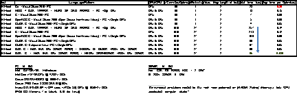</P>
<P STYLE="page-break-inside: avoid"><FONT FACE="Cambria, serif">Here
is a fun chart of other organizations using GPU computing to speed up
work:</FONT><FONT FACE="Cambria, serif"> </FONT>
</P>
<P STYLE="page-break-inside: avoid"><BR>
</P>
<P STYLE="page-break-inside: avoid"></P>
<P STYLE="page-break-inside: avoid"><FONT COLOR="#1f497d"><FONT FACE="Cambria, serif"><FONT SIZE=2><I><B>Figure
19</B></I></FONT></FONT></FONT><FONT COLOR="#1f497d"><FONT FACE="Cambria, serif"><FONT SIZE=2><I>
– </I></FONT></FONT></FONT><FONT COLOR="#1f497d"><FONT FACE="Cambria, serif"><FONT SIZE=2><I><B>Organizations
Using GPU Accelerators</B></I></FONT></FONT></FONT><FONT COLOR="#1f497d"><FONT FACE="Cambria, serif"><FONT SIZE=2><I>
Nvidia, 2012: 45.</I></FONT></FONT></FONT></P>
<H1 CLASS="western" STYLE="page-break-inside: avoid"><A NAME="__RefHeading__4288_102278096"></A><A NAME="_Toc402117975"></A>
Common Pitfalls of CUDA Programming: Precision &amp; Promotion</H1>
<P STYLE="page-break-inside: avoid"><FONT FACE="Cambria, serif">When
using casting or other techniques to convert variables and constants
from DOUBLE to FLOAT (for further speed gains), we have to be very
careful.  This is because many languages like C have been formulated
to “think” in DOUBLE precision (to optimize the CPU).  So, if
there is a statement like “</FONT><FONT COLOR="#1f497d"><FONT FACE="Cambria, serif">constant
= 1.0</FONT></FONT><FONT FACE="Cambria, serif">”, this will be
interpreted as a DOUBLE.  The problem comes when we start mixing such
a value with other values that are FLOATS.  Remember that FLOATS have
up to 8 significant digits while DOUBLE has 16.  If we carelessly mix
these 2 types, C will start to make transformations/conversions to
various values without us knowing about it so that we might not get
back the results we intended.  So, it is always better to use FLOAT
LITERALS with other FLOAT values to keep things straight - “</FONT><FONT COLOR="#1f497d"><FONT FACE="Cambria, serif">constant
= 1.0f</FONT></FONT><FONT FACE="Cambria, serif">” is better here if
we indeed are using various values in a GPU function that is intended
for FLOAT types.  There is a nice blurb here from Nvidia warning
about this</FONT><A CLASS="sdfootnoteanc" NAME="sdfootnote11anc" HREF="#sdfootnote11sym"><SUP>11</SUP></A><FONT FACE="Cambria, serif">:
 </FONT>
</P>
<P><FONT COLOR="#1f497d"><FONT FACE="Cambria, serif"><FONT SIZE=2><I>When
comparing the results of computations of float variables between the
host and device, make sure that promotions to double precision on the
host do not account for different numerical results. For example, if
the code segment:</I></FONT></FONT></FONT></P>
<P><FONT COLOR="#1f497d"><FONT FACE="Cambria, serif"><FONT SIZE=2><I><B>float
a;</B></I></FONT></FONT></FONT></P>
<P><FONT COLOR="#1f497d">…</FONT></P>
<P><FONT COLOR="#1f497d"><FONT FACE="Cambria, serif"><FONT SIZE=2><I><B>a
= a*1.02;</B></I></FONT></FONT></FONT></P>
<P><FONT COLOR="#1f497d"><FONT FACE="Cambria, serif"><FONT SIZE=2><I>were
performed on a device of compute capability 1.2 or less, or on a
device with compute capability 1.3 but compiled without enabling
double precision (as mentioned above), then the multiplication would
be performed in single precision. However, if the code were performed
on the host, the literal </I></FONT></FONT></FONT><FONT COLOR="#1f497d"><FONT FACE="Cambria, serif"><FONT SIZE=2><I>1.02
</I></FONT></FONT></FONT><FONT COLOR="#1f497d"><FONT FACE="Cambria, serif"><FONT SIZE=2><I>would
be interpreted as a double precision quantity and </I></FONT></FONT></FONT><FONT COLOR="#1f497d"><FONT FACE="Cambria, serif"><FONT SIZE=2><I>a
</I></FONT></FONT></FONT><FONT COLOR="#1f497d"><FONT FACE="Cambria, serif"><FONT SIZE=2><I>would
be promoted to a double, the multiplication would be performed in
double precision, and the result would be truncated to a
float—thereby yielding a slightly different result. If, however,
the literal </I></FONT></FONT></FONT><FONT COLOR="#1f497d"><FONT FACE="Cambria, serif"><FONT SIZE=2><I><B>1.02</B></I></FONT></FONT></FONT><FONT COLOR="#1f497d"><FONT FACE="Cambria, serif"><FONT SIZE=2><I>
</I></FONT></FONT></FONT><FONT COLOR="#1f497d"><FONT FACE="Cambria, serif"><FONT SIZE=2><I>were
replaced with </I></FONT></FONT></FONT><FONT COLOR="#1f497d"><FONT FACE="Cambria, serif"><FONT SIZE=2><I><B>1.02f</B></I></FONT></FONT></FONT><FONT COLOR="#1f497d"><FONT FACE="Cambria, serif"><FONT SIZE=2><I>,
the result would be the same in all cases because no promotion to
doubles would occur. To ensure that computations use single-precision
arithmetic, always use float literals. In addition to accuracy, the
conversion between doubles and floats (and vice versa) has a
detrimental effect on performance.</I></FONT></FONT></FONT></P>
<H1 CLASS="western"><A NAME="__RefHeading__4290_102278096"></A><A NAME="_Toc402117976"></A>
Bibliography</H1>
<P><BR>
</P>
<P><BR>
</P>
<P><FONT FACE="Cambria, serif">Cochrane, John, </FONT><FONT FACE="Cambria, serif"><I>“Time
Series for Macroeconomics and Finance,”</I></FONT><FONT FACE="Cambria, serif">
University of Chicago, January 2005.</FONT></P>
<P><BR>
</P>
<P><FONT FACE="Cambria, serif">Coulouris, George, “<I>Distributed
Systems and Concepts, Fifth Edition</I>,” Addison-Wesley, 2012.</FONT></P>
<P><BR>
</P>
<P><FONT FACE="Cambria, serif"><I>Fuzzy set</I></FONT><FONT FACE="Cambria, serif">.
(n.d.). Retrieved February 2013, from Wiki:
<A HREF="http://en.wikipedia.org/wiki/Fuzzy_set">http://en.wikipedia.org/wiki/Fuzzy_set</A></FONT></P>
<P><BR>
</P>
<P><FONT FACE="Cambria, serif">Gleick, James, “<I>The Information:
A History, a Theory, a Flood</I>,” Pantheon, 2011.</FONT></P>
<P><BR>
</P>
<P><FONT FACE="Cambria, serif">Hargitta, Istran. </FONT><FONT FACE="Cambria, serif"><I>Martians
of Science</I></FONT><FONT FACE="Cambria, serif">. New York, NY:
Oxford Press, 2006.</FONT></P>
<P><BR>
</P>
<P><FONT FACE="Cambria, serif">Kochan, Stephen, “<I>Programming in
C, Third Edition</I>,” Sams Publishing, July 2005.</FONT></P>
<P><BR>
</P>
<P><FONT FACE="Cambria, serif"><I>Matlab</I></FONT><FONT FACE="Cambria, serif">.
(n.d.). Retrieved February 2013, from Wiki:
http://en.wikipedia.org/wiki/Matlab</FONT></P>
<P><BR>
</P>
<P><FONT FACE="Cambria, serif">Nvidia, “<I>CUDA C Guide and Best
Practices</I>,” Nvidia, 2013.</FONT></P>
<P><BR>
</P>
<P><FONT FACE="Cambria, serif"><I>Nvidia Cuda</I></FONT><FONT FACE="Cambria, serif">.
(n.d.). Retrieved February 2013, from Wiki:
http://en.wikipedia.org/wiki/CUDA</FONT></P>
<P><BR>
</P>
<P><FONT FACE="Cambria, serif">Thiruvathukal, George,
“<I>High-Performance Java Platform Computing</I>,” Pearson
Education, 2000.</FONT></P>
<P><BR>
</P>
<P><BR>
</P>
<P><BR>
</P>
<DIV ID="sdfootnote1">
	<P STYLE="page-break-before: always"><FONT FACE="Cambria, serif"><A CLASS="sdfootnotesym" NAME="sdfootnote1sym" HREF="#sdfootnote1anc">1</A><SUP></SUP>
	Feb. 2012 &lt; <A HREF="http://www.nvidia.com/object/cuda_home_new.html">http://www.nvidia.com/object/cuda_home_new.html</A>
	&gt;.</FONT></P>
	<P CLASS="sdfootnote"><BR>
	</P>
</DIV>
<DIV ID="sdfootnote2">
	<P STYLE="page-break-before: always"><FONT FACE="Cambria, serif"><A CLASS="sdfootnotesym" NAME="sdfootnote2sym" HREF="#sdfootnote2anc">2</A><SUP></SUP>
	John Cochrane, “Time Series for Macroeconomics and Finance,”
	University of Chicago January 2005: 262.</FONT></P>
	<P CLASS="sdfootnote"><BR>
	</P>
</DIV>
<DIV ID="sdfootnote3">
	<P STYLE="page-break-before: always"><FONT FACE="Cambria, serif"><A CLASS="sdfootnotesym" NAME="sdfootnote3sym" HREF="#sdfootnote3anc">3</A><SUP></SUP>
	Stephen G. Kochan, “Programming in C, Third Edition,” Sams
	Publishing July 2005: 264.</FONT></P>
	<P CLASS="sdfootnote"><BR>
	</P>
</DIV>
<DIV ID="sdfootnote4">
	<P STYLE="page-break-before: always"><FONT FACE="Cambria, serif"><A CLASS="sdfootnotesym" NAME="sdfootnote4sym" HREF="#sdfootnote4anc">4</A><SUP></SUP>
	James Gleick, The Information: A History, a Theory, a Flood (New
	York: Pantheon, 2011) 136-186.</FONT></P>
	<P CLASS="sdfootnote"><BR>
	</P>
</DIV>
<DIV ID="sdfootnote5">
	<P STYLE="page-break-before: always"><FONT FACE="Cambria, serif"><A CLASS="sdfootnotesym" NAME="sdfootnote5sym" HREF="#sdfootnote5anc">5</A><SUP></SUP>
	Istran Hargitta, Martians of Science (New York: Oxford Press, 2006)
	11.</FONT></P>
	<P CLASS="sdfootnote"><BR>
	</P>
</DIV>
<DIV ID="sdfootnote6">
	<P STYLE="page-break-before: always"><FONT FACE="Cambria, serif"><A CLASS="sdfootnotesym" NAME="sdfootnote6sym" HREF="#sdfootnote6anc">6</A><SUP></SUP>
	Gleick 136-186.</FONT></P>
	<P CLASS="sdfootnote"><BR>
	</P>
</DIV>
<DIV ID="sdfootnote7">
	<P STYLE="page-break-before: always"><FONT FACE="Cambria, serif"><A CLASS="sdfootnotesym" NAME="sdfootnote7sym" HREF="#sdfootnote7anc">7</A><SUP><FONT SIZE=1 STYLE="font-size: 8pt"></FONT></SUP>
	Feb. 2013 &lt; <A HREF="http://en.wikipedia.org/wiki/Fuzzy_set"><FONT SIZE=1 STYLE="font-size: 8pt">http://en.wikipedia.org/wiki/Fuzzy_set</FONT></A>
	&gt;.</FONT></P>
	<P CLASS="sdfootnote"><BR>
	</P>
</DIV>
<DIV ID="sdfootnote8">
	<P STYLE="page-break-before: always"><FONT FACE="Cambria, serif"><A CLASS="sdfootnotesym" NAME="sdfootnote8sym" HREF="#sdfootnote8anc">8</A><SUP><FONT SIZE=1 STYLE="font-size: 8pt"></FONT></SUP>
	Feb. 2013 &lt; <A HREF="http://en.wikipedia.org/wiki/Fuzzy_set"><FONT SIZE=1 STYLE="font-size: 8pt">http://en.wikipedia.org/wiki/Fuzzy_set</FONT></A>
	&gt;.</FONT></P>
	<P CLASS="sdfootnote"><BR>
	</P>
</DIV>
<DIV ID="sdfootnote9">
	<P STYLE="page-break-before: always"><FONT FACE="Cambria, serif"><A CLASS="sdfootnotesym" NAME="sdfootnote9sym" HREF="#sdfootnote9anc">9</A><SUP></SUP>
	Feb. 2013 &lt; <A HREF="http://en.wikipedia.org/wiki/Matlab"><FONT SIZE=1 STYLE="font-size: 8pt">http://en.wikipedia.org/wiki/Matlab</FONT></A>
	 &gt;.</FONT></P>
	<P CLASS="sdfootnote"><BR>
	</P>
</DIV>
<DIV ID="sdfootnote10">
	<P STYLE="page-break-before: always"><FONT FACE="Cambria, serif"><A CLASS="sdfootnotesym" NAME="sdfootnote10sym" HREF="#sdfootnote10anc">10</A><SUP></SUP>
	The numerical simulations needed for this work were performed on
	[NVIDIA Partner] Microway's Tesla GPU accelerated compute cluster.</FONT></P>
	<P CLASS="sdfootnote"><BR>
	</P>
</DIV>
<DIV ID="sdfootnote11">
	<P STYLE="page-break-before: always"><FONT FACE="Cambria, serif"><A CLASS="sdfootnotesym" NAME="sdfootnote11sym" HREF="#sdfootnote11anc">11</A><SUP></SUP>
	Nvidia, “CUDA C Guide and Best Practices,” January 2013, 12.</FONT></P>
	<P CLASS="sdfootnote"><BR>
	</P>
</DIV>
</BODY>
</HTML>